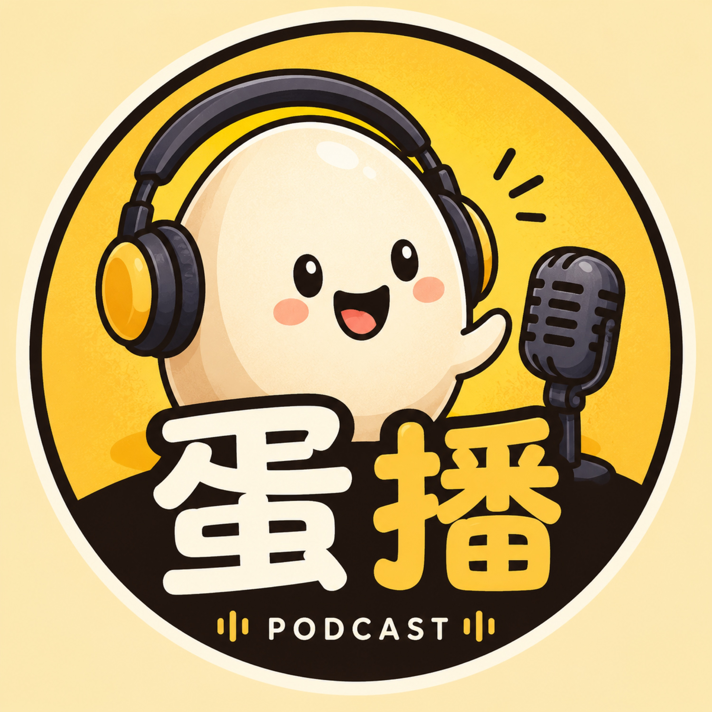

Egg 的 AI 技术播客，用类比和原理剖析理解前沿技术
复制后到 小宇宙 / Apple Podcasts / Spotify 中「添加 RSS 订阅」
DeepSeek创始人梁文锋内部投资人会议核心解读：克制哲学（10个月回本定价/纳什均衡）、开源战略（成本护城河/让利换凝聚力）、芝麻与西瓜（时间偏好/延迟满足）、愿景驱动组织（无KPI/平凡人叙事）、AGI路线图（持续学习是关键瓶颈）、资源约束（4倍加2年差距）。
来源：佩妮聊创投（小宇宙）
嘉宾：梁文锋（DeepSeek 创始人）
原始发布：2026-07-22
时长：95 分钟（AI 语音还原版）/ 原始会议 4 小时
转录：[[ep148_梁文锋4小时投资人会议]]
⚠️ 来源说明：本文基于 AI 还原音频转录（原始为 42 页 PDF 会议纪要），可能有删节和误读。
一群"平凡人"为什么靠"少拿一点"反而走到了牌桌中央。
你有没有见过这样的人：打牌的时候从不抢着叫地主，总是安安静静拿一手小牌，然后在你不经意的时候，一把清光？
梁文锋就是这种人。
这场 4 小时的投资人会议，不是一场技术发布会，也不是一次商业路演。它更像是一个"异类"坐在你面前，用 4 个小时解释一件事：为什么我明明可以赚更多钱，却选择不赚。
你可能会想：这不就是"情怀"吗？不。梁文锋自己说得很清楚——克制不是道德选择，是战略。他说："你越克制，越有可能做成。"这句话听起来像鸡汤，但如果你往下听 4 个小时，你会发现他有一套完整的逻辑链，从定价到开源到组织到 AGI 路线图，全部指向同一个结论。
这期不是技术访谈。它是一堂关于博弈、取舍和时间偏好的课。
类比：想象你开了一个早餐店，包子卖 2 块钱一个，利润 50%，生意很好。隔壁老王看你赚钱，把包子涨到 5 块，利润 200%。短期他赚得多，但三个月后，整条街的人都来你这里吃，老王关门了。你的策略不是"不赚钱"，而是"只赚合理的钱"——这个"合理"不是道德标准，是生存策略。
原理：梁文锋给 DeepSeek API 的定价逻辑是"10 个月收回设备成本"，对应大约 6 倍利润。他明确说：如果利润最大化，价格可以翻一倍，因为"在这个价格区间，用户的需求是没有弹性的"——也就是说，涨一倍价，用量不会少多少，总收入接近翻倍。
但他选择不涨。
这里有一个关键区分：不是不能赚，是不赚那个"多出来的部分"。他把这个叫"合理的利润"。合理不是成本加成，不是行业平均，而是一个主动选择的上限。
为什么不用老方法：传统商业逻辑是利润最大化——能卖 100 绝不卖 50。这个逻辑在存量市场里是对的：蛋糕就这么大，你多切一块别人就少一块。但 AI 是一个增量市场，蛋糕还在变大。在增量市场里，"多拿一点"的代价不是少赚一块钱，而是——
刨根问底（三层为什么）：
举一反三：
类比：开源就像你开了一家餐厅，把菜谱公开了。别人可以照着做，但做不出你的味道——因为你的火候、你的食材供应链、你后厨的动线设计，这些不是菜谱能教的。梁文锋说："哪怕你把所有东西都告诉别人，这个门槛也非常高。"
原理：DeepSeek 开源了模型，包括最强的模型。梁文锋的逻辑链是：
1. 我们只赚 6 倍利润 → 第三方自己部署的成本做不到这个价格 → 开源不影响我们的收入
2. 开源让社会高兴、同行高兴、用户高兴 → 凝聚力和社会好感 → 人才愿意来
3. 人才是唯一的瓶颈 → 开源最终增加的是"做成 AGI 的概率"
注意第 3 点。他不是说开源是"好事"，他说开源是提高做成 AGI 概率的手段。这是一个冷静的计算，不是情怀。
为什么不用老方法：传统软件行业的开源是"用免费换付费增值"（Red Hat 模式）或"用开源建生态锁用户"（Android 模式）。DeepSeek 的开源都不是。它的开源是：我不需要生态锁你，我也不需要增值服务，我只需要你把模型用起来，因为用的人越多，AI 离 AGI 越近，而我恰好在通往 AGI 的路上。
刨根问底：
举一反三：
类比：你走在路上，看到地上有一百块钱。你弯腰去捡，结果错过了前面路口的一百万。梁文锋说："前面是芝麻，后面是西瓜。"去年春节 DeepSeek 突然爆火，C 端用户蜂拥而入。所有互联网公司都会做的事是：砸钱、抢用户、做超级 App。DeepSeek 没有。
原理：梁文锋把 DeepSeek 的战略选择描述为一个时间偏好问题：
他说："我甚至不用考虑到时候在里面占什么位置、商业模式是什么。只要有那么大的商业机会，你一定是有办法的。"
这不是天真。这是一个贝叶斯决策：在 AGI 的期望收益面前，C 端用户的期望收益小到可以忽略。而追逐 C 端用户的机会成本是：分散团队注意力、偏离 AGI 主线、消耗有限的算力资源。
刨根问底：
举一反三：
类比：想象一个交响乐团。如果每个乐手都有 KPI——"今天必须拉完 3 首曲子""错音率低于 2%"——你得到的是一首技术上正确但毫无灵魂的曲子。但如果所有乐手都相信"我们要演的是贝多芬第九交响曲"，他们自己会知道什么时候该强、什么时候该弱、什么时候该等别人。愿景就是那个"贝多芬第九"。
原理：梁文锋说 DeepSeek"没有组织架构"。管理靠两条线：
不加班。原因有二：研究需要松弛环境；因为克制，要做的事情少。
刨根问底：
举一反三：
类比：学骑自行车。你不是"不会"然后突然"会了"。你先学会平衡（语言模型），然后学会转弯（思维链 CoT），然后学会骑上路（Agent），然后学会在复杂交通中持续应对（持续学习），然后你可以教别人骑（自我迭代），最后你可以骑去任何地方（具身智能）。每一步都建立在前一步上，没有一步是白走的。
原理：梁文锋给出了一个非常清晰的 AGI 路线图：
1. 语言模型（基础）→ 2. 思维链 CoT（2024 年的阶梯）→ 3. Agent（2025 年的阶梯）→ 4. 持续学习（下一个瓶颈）→ 5. 自我迭代的起点（AI 开发下一版 AI）→ 6. 具身智能（走进现实世界）
他特别强调：AGI 不是一个"奇点"式的突变，是一个连续的、非线性的渐进过程。"那些预言家认为这里会有个奇点，但其实它不是一个奇点，它是一个连续的过程。"
刨根问底：
举一反三：
类比：你和邻居都在盖房子。你有 10 个工人，他有 200 个。你的工人不比他差，甚至可能更巧，但你一次只能搬 10 块砖，他一次搬 200 块。你盖得慢不是因为你笨，是因为你砖少。
原理：梁文锋非常坦诚：中美 AI 的差距只有一点——资源（算力）。
但他给了一个关键判断：这个差距是可以被"巧算"弥补的。
"落后美国 1 到 2 年，但只用它 20 分之 1 的算力把这个事情做出来。"——这是 DeepSeek 的叙事。未来目标是把时间差从 2 年缩到 6 个月、3 个月。
刨根问底：
举一反三：
大多数公司降价时，销售团队心疼、财务团队皱眉、管理层纠结。DeepSeek 降价到四分之一时，"公司群里面很多人是欢呼的"。
这意味着什么？意味着这家公司的员工真的相信"让大家都用得起"比"我们多赚钱"更重要。这不是管理层喊的口号，是基层员工的自发反应。
为什么这个洞察重要：在投资中，判断一家公司的文化是否真实，不要看它的使命宣言，要看它的员工在"利益受损"时的本能反应。降价欢呼 = 愿景内化。涨价庆祝 = 愿景是假的。
这句话听起来很自私，但逻辑极其自洽：如果 AI 能帮助 DeepSeek 自己开发下一版 AI，那它就是在加速通往 AGI。自己好用 → 开发更快 → AGI 更近 → 副产品（API、C 端、B 端）自然更好。
为什么这个洞察重要：这颠覆了"用户第一"的商业教条。不是说不该对用户好，而是说——如果你的产品本身就是你实现终极目标的工具，那么"对自己有用"和"对用户有用"是同一件事的两个面。
梁文锋说了一句很有禅意的话："最想得到的东西反而你就得不到，那个并没有那么在意的事情，反而是还蛮容易能够得到。"
这不是玄学。这是注意力经济学：当你把全部注意力放在"抢用户"上时，你的模型研发就慢了；模型慢了，用户反而留不住。当你把注意力放在"做好模型"上时，用户自己就来了。
梁文锋的"克制"和段永平/巴菲特的投资哲学是同构的：
| DeepSeek 的克制 | 投资的克制 |
|---|---|
| 不追求利润最大化，只赚合理利润 | 不追求收益最大化，只赚能力圈内的钱 |
| 不抢 C 端用户（芝麻），等 AGI（西瓜） | 不追热点（芝麻），等复利（西瓜） |
| 开源让利换凝聚力 | 低换手率、不跟市场博弈，换心态稳定 |
| 降价时欢呼 | 市场暴跌时加仓（别人恐惧我贪婪） |
| 愿景驱动，无 KPI | 投资体系驱动，不看每日净值 |
你已经有 Attention → KV Cache → Agent 的基础。梁文锋的路线图补上了下一环：
Agent（现在）→ 持续学习（下一个瓶颈）→ 自我迭代（AGI 起点）→ 具身智能（终点）
投资含义：在"持续学习"解决之前，AI 的能力上限是"给它完整上下文就能超越人类"。这意味着 AI 的应用场景仍然受限于"能给出完整上下文的领域"（编程、写作、分析）。一旦持续学习突破，AI 进入"所有人类工作"的市场——那才是真正的"西瓜"。
1. "克制"能持续多久？ 梁文锋说克制是战略，但战略需要人执行。如果 DeepSeek 上市了，股东要求利润增长，"10 个月回本"还能维持吗？上市后管理层对股东的信托责任 vs 创始人的愿景，这个张力怎么解决？
2. "持续学习"如果 3 年没突破怎么办？ 梁文锋说"一定是有办法能跨过去的，但需要时间"。如果这个时间比预期长，DeepSeek 的"AGI 愿景"还能凝聚团队吗？愿景的保质期是多久？
3. 开源的"成本护城河"能持续吗？ 现在第三方部署成本高于 DeepSeek 自己。但如果硬件成本持续下降（摩尔定律 + 国产替代），第三方的成本也会下降。当部署成本降到足够低时，开源模型的 API 收入会不会真的被侵蚀？
4. "平凡人叙事"在规模化后还成立吗？ DeepSeek 现在几百人。如果扩张到几千人，"愿景驱动、无 KPI"还能运转吗？梁文锋自己也承认"马上就得做调整"。从"无组织"到"有组织"的过渡，会不会破坏那个让 DeepSeek 成功的文化？
5. 这场会议本身的可信度：这是 AI 还原的音频，原始是 42 页 PDF 会议纪要。4 小时的会议被压缩成 95 分钟，必然有大量删节。梁文锋的表述在多大程度上是"原话"，在多大程度上是"纪要的纪要的还原"？对于投资决策，这个信息源需要打折扣。
回到开头那句话——一群"平凡人"为什么靠"少拿一点"反而走到了牌桌中央。
但现在我们可以说得更精确了：不是因为"少拿"所以赢了，是因为"想清楚了该拿什么"所以赢了。 克制不是目的，克制是看清了"什么是芝麻、什么是西瓜"之后的自然选择。当你真正相信后面有一个巨大的西瓜时，你根本不需要说服自己不去捡芝麻——你只是看了它一眼，然后继续往前走。
这可能是这场 4 小时会议里最值钱的一句话："你越克制，越有可能做成。" 不是道德，不是情怀，是数学。
沈宇军（蚂蚁灵波首席科学家）访谈：机器人原生基础模型的设计哲学，大脑（决策）和本体（执行）的关系，预训练与数据scale up路径，师从汤晓鸥的学术传承，以及中国具身智能产业的差异化竞争策略。
来源：张小珺商业访谈录 #147
嘉宾：沈宇军（蚂蚁灵波首席科学家，师从汤晓鸥）
原始发布：2026-07-22
来源：网络资料整理（原始转录不可用）
机器人的大脑不能从互联网的大模型里"借"，得从物理世界的泥土里"长"出来。
你学过开车吧？科目一（理论考试）可以在电脑上刷题——交通规则、标志识别、安全知识。但科目二（场地驾驶）和科目三（路考）必须上车——你得感受方向盘的力度、油门的深浅、离合器的半联动点。
现在机器人行业的主流做法是什么？是先在电脑上"刷题"（用互联网数据训练大模型），然后"上车"（在机器人上微调）。这就是VLA模型的路径——用语言模型/视觉模型的预训练权重，加一点机器人数据微调。
沈宇军说：这不对。开车不是"刷题+微调"能学会的。你得从一开始就在车上训练——感受真实的物理反馈、真实的传感器噪声、真实的硬件误差。
这就是"具身原生基础模型"的核心主张：机器人的大脑不应该从互联网的大模型里"借"，而应该从物理世界的数据中"长"出来。
类比：人的大脑是"通用"的——同一个大脑可以控制左手写字、右手画画、双脚走路。但身体是"专用"的——手有手的结构，脚有脚的结构。你不需要为"写字"专门进化一只手，也不需要为"走路"专门进化一只脚。大脑通过"适配层"控制不同的身体部位。
原理：沈宇军的核心观点是：具身智能想做的是"通用大脑"，而不是"专用身体"。
如果具身智能想在足够多的真实场景落地，它必须是跨本体的。除非未来真出现了通用本体，但在现阶段，更倾向于做"一套适配不同身体的通用大脑"。
为什么不用老方法：传统做法是"一个机器人配一个模型"——为这个型号的手臂训练一个抓取模型，为那个型号的腿训练一个行走模型。这就像为每个人的手定制一个"写字程序"。沈宇军要做的是"一个大脑控制所有身体"。
刨根问底：为什么"通用大脑"这么难？因为物理世界的数据逻辑跟互联网完全不同。互联网数据是"干净"的——文本没有传感器噪声，图片没有硬件误差。但物理世界的数据是"脏"的——传感器有误差、电机有延迟、接触力有不确定性。用互联网数据训练的模型，到了物理世界就"水土不服"。
举一反三：投资中也有"通用大脑 vs 专用身体"的类比。投资框架是"大脑"（怎么分析、怎么判断、怎么决策），具体标的是"身体"（A股、港股、美股、商品）。好的投资框架应该是"跨市场通用"的——不会因为换了个市场就失效。但很多人做的是"专用模型"——只在A股有效，换到港股就不行了。
类比：学语言，"背单词"是预训练，"写作文"是微调。你现在学英语的方式是：先背10000个单词（预训练），然后写几篇作文让老师改（微调）。但如果有一种方法，让你从第一天起就在英语环境里"沉浸式学习"——听、说、读、写同时进行——你会学得更快、更自然。
原理：沈宇军认为，具身智能现在最大的问题是：行业里还没有一个真正属于具身智能的原生预训练模型。
现在的主流做法是：
1. 拿一个多模态大模型（比如用互联网图文数据训练的）
2. 加一些机器人数据微调
3. 得到一个"看起来能控制机器人"的模型
这是"拼凑能力"，不是"原生能力"。就像用中文思维学英语——能交流，但不地道。
蚂蚁灵波要做的是：从物理世界采集的数据从头开始训练。不是"先学互联网知识，再学物理世界"，而是"一开始就在物理世界里学"。
为什么不用老方法：因为互联网数据和物理世界数据的逻辑根本不同：
用静态数据训练的模型，处理动态交互时天然有缺陷。
刨根问底：数据Scale Up的瓶颈在哪里？沈宇军提到蚂蚁灵波积累了2万小时真机数据——这在行业里已经很多了，但跟语言模型的万亿token比，差了几个数量级。而且真机数据的采集成本极高（需要人操作真机），不像互联网数据可以"免费爬取"。
这就是为什么沈宇军说"用慢功夫做具身智能"——不是不想快，是数据瓶颈让你快不了。
举一反三：投资中也有"数据Scale Up"的问题。公开数据（财报、新闻）可以免费获取，但"真机数据"（深度调研、管理层访谈、产业链验证）需要"慢功夫"。AI可以帮你处理公开数据，但"真机数据"仍然是人的护城河。
类比：学游泳，有两种方法。一种是"先在岸上学动作，再下水"（大模型捷径）。另一种是"一开始就在水里扑腾"（具身原生）。第一种方法看起来更高效，但你永远学不会"水感"——那种身体与水互动的微妙感觉。
原理：沈宇军把行业分为两条路线：
路线A：大模型捷径（修修补补）
路线B：具身原生（推倒重来）
为什么不用老方法：路线A的问题是"天花板"——你的模型能力被预训练模型的能力限制住了。如果预训练模型不理解物理交互，你怎么微调都补不回来。就像在沙子上建房子——地基不对，上面盖得再漂亮也会塌。
刨根问底：路线B真的能走通吗？沈宇军自己也很诚实："我们也清楚，这还远远不够。"蚂蚁灵波发布的LingBot-VLA、LingBot-VA、LingBot-Depth等模型，"只是这盘棋中的一些局部碎片"。真正的"具身原生预训练模型"还没有出现。
但他给了一个关键判断：具身智能现在大概在GPT-1阶段。GPT-1到GPT-3用了2年。如果具身智能也走这条路，可能2-3年内会出现"质变"。
举一反三：投资中，"捷径 vs 原生"的选择对应"应用层 vs 基础层"。应用层公司（用现成大模型做垂直应用）是"捷径"，短期能赚钱，但天花板低。基础层公司（从头训练原生模型）是"慢功夫"，短期看不到回报，但一旦突破就是平台级机会。
类比：学术圈有"师承"——你的导师决定了你的"学术基因"。汤晓鸥是计算机视觉领域的大家，创办了商汤科技。他的学生沈宇军，把"视觉理解"的基因带入了"具身智能"。
原理：沈宇军在访谈中多次提到导师汤晓鸥的影响。汤晓鸥的核心理念是：视觉是理解世界的基础。这个理念在具身智能中得到了延伸——机器人要理解物理世界，首先需要"看懂"物理世界。
蚂蚁灵波的LingBot-Depth模型，就是解决"输入层数据质量"的问题——"基本决定智能层上限"。这跟汤晓鸥在商汤做的"视觉基础设施"一脉相承。
为什么不用老方法：很多具身智能团队是"先做模型，再补感知"。沈宇军的做法是"先把感知做到极致，再在上面建智能"。这是"地基先行"的思路。
刨根问底：为什么感知这么重要？因为物理世界的传感器数据是"脏"的——深度相机有噪声、RGB图像有光照变化、力传感器有漂移。如果输入数据质量不行，上面的模型再强也没用。就像"garbage in, garbage out"。
举一反三：投资中，"数据质量"比"数据数量"更重要。很多量化基金追求"更多数据"，但忽略了数据质量——财务数据的口径不一致、另类数据的噪声大、市场数据的幸存者偏差。真正的好投资框架，首先是"把数据洗干净"。
沈宇军非常诚实：行业还没有一个真正属于具身智能的原生预训练模型。现在的所有模型都是"拼凑"——用多模态模型、视频模型的能力拼接。
对投资的影响：机器人赛道现在是"期权"——你赌的是"质变点会来"。在质变点到来之前，所有估值都是"信仰溢价"。不要期望短期看到"通用机器人"的商业化。
2万小时真机数据，在语言模型看来微不足道，但在具身智能领域已经是"巨量"。沈宇军不焦虑——"用慢功夫做具身智能"。
对投资的影响：机器人赛道的投资周期比AI软件长得多。如果你投机器人，要有"5-10年"的心理准备。这不是"半年翻10倍"的赛道。
如果一个模型只能控制一种机器人，那它不是"通用大脑"，只是"专用控制器"。真正的通用大脑应该能适配不同的身体。
对投资的影响：评估机器人公司时，问一个关键问题："你的模型能控制几种不同的机器人？"如果只有一种，那它的护城河很浅。如果能跨本体，那它可能是"机器人界的Android"。
沈宇军说："不用太纠结技术路线。"世界模型和VLA不是非此即彼的，它们可能是"同一张大拼图里的不同模块"。
对投资的影响：不要因为"押错路线"而焦虑。在技术路线未收敛时，投"人"比投"路线"更重要——好的团队能在路线变化中快速调整。
1. "具身原生预训练"的预训练目标到底是什么？ 语言模型的预训练目标是"预测下一个token"。具身智能的预训练目标是什么？"预测下一个物理状态"？"预测动作的后果"？沈宇军没有给出明确答案。
2. 2万小时真机数据够不够触发Scaling Law？ 语言模型在几万亿token时出现了"涌现能力"。机器人需要多少小时真机数据才能出现"涌现"？还是说根本不会出现？
3. 蚂蚁灵波的"慢功夫"能跑赢Pi的"开源快跑"吗？ Pi用开源策略快速建立生态，蚂蚁灵波用"慢功夫"做原生模型。哪种策略在长期更有优势？
4. 汤晓鸥的"视觉先行"理念在具身智能中是否仍然成立？ 物理世界不只是"看"——还有"摸"（力觉）、"听"（声学）、"感觉"（本体感觉）。纯视觉路线够不够？
5. 蚂蚁的"蚂蚁"基因（支付、金融、安全）在具身智能中有什么用？ 蚂蚁灵波是蚂蚁集团的具身智能品牌，但蚂蚁的核心能力是金融。这个"跨界"的逻辑是什么？
类比：你玩过拼图吧？单看每一片，你不知道它是什么。但当你把边角片、天空片、建筑片、人物片都找到正确位置时，完整的画面就出来了。蚂蚁灵波发布的四个模型（LingBot-VLA、LingBot-VA、LingBot-Depth、LingBot-VQA），就是同一张拼图的不同碎片。
原理：沈宇军解释了蚂蚁灵波的模型矩阵：
LingBot-Depth（感知层）：
LingBot-VLA（决策层）：
LingBot-VA 2.0（世界模型层）：
LingBot-VQA（理解层）：
为什么不用老方法：传统做法是"一个模型解决所有问题"——用一个巨大的VLA模型，从感知到行动一步到位。沈宇军的做法是"分层解决"——每一层有自己的专长，组合起来形成完整能力。这就像"微服务架构"vs"单体应用"——前者更灵活、更可维护。
刨根问底：为什么"分层"比"端到端"更适合现阶段？因为具身智能的每个子问题都还没有被充分解决。如果直接做端到端，每个子问题的误差会累积——感知错一点、理解错一点、规划错一点、执行错一点，最终结果可能完全不对。分层的好处是：每层可以独立优化、独立评估、独立迭代。
举一反三：投资分析也可以"分层"：
每层独立优化，组合起来形成完整的投资能力。
类比：学术圈有"学派"——一个导师的思想会影响一代学生。孔子的"仁"影响了整个儒学传统。汤晓鸥的"视觉理解"思想，正在通过他的学生们影响具身智能的发展方向。
原理：沈宇军在访谈中多次提到导师汤晓鸥（已故，SenseTime创始人）的影响：
汤晓鸥的核心理念：
沈宇军的继承：
为什么不用老方法：很多具身智能团队是"应用驱动"——先找一个场景（比如仓储物流），然后针对性地训练模型。沈宇军的做法是"基础驱动"——先做通用的感知和理解能力，然后再适配到具体场景。前者短期见效快，后者长期天花板高。
刨根问底：汤晓鸥的"视觉先行"在具身智能中是否仍然成立？物理世界不只是"看"——还有"摸"（力觉）、"听"（声学）、"感觉"（本体感觉、平衡感）。纯视觉路线够不够？沈宇军的答案可能是：视觉是"最主要的"感知通道（人也是视觉主导），但不是"唯一的"。LingBot-Depth解决的是视觉中的"深度"维度，但力觉、触觉等还需要其他模块。
举一反三：投资中也有"师承"效应。巴菲特的学生（如Todd Combs、Ted Weschler）继承了"价值投资"的基因，但各自发展出了不同的风格。段永平的"本分"哲学影响了OPPO、vivo、拼多多的创始人们。投资框架的"师承"不是"照搬"，而是"继承核心思想，发展个人风格"。
类比：2018年，GPT-1出来了。它能写句子，但写不好段落。大家觉得"还行，但离真正有用还远"。2019年GPT-2能写段落了，大家开始认真。2020年GPT-3能写文章了，世界变了。从GPT-1到GPT-3，只用了2年。
原理：沈宇军判断具身智能现在在"GPT-1阶段"。这个判断的依据：
GPT-1阶段的特征（对应具身智能现状）：
GPT-2阶段会是什么样（预测）：
GPT-3阶段会是什么样（愿景）：
为什么不用老方法：以前做机器人是"一个任务一个模型"——没有"通用性"可言。VLA模型的目标是"通用性"，但现在还在"GPT-1"水平——有通用的架构，但没有通用的能力。
刨根问底：从GPT-1到GPT-3，语言模型用了2年。具身智能也需要2年吗？可能更慢，因为：
但也可能更快，因为：
举一反三：投资中，判断"我们在哪个阶段"极其重要。GPT-1阶段投的是"期权"——赌质变会来。GPT-3阶段投的是"确定性"——质变已经发生，看谁能商业化。现在投具身智能，就是在"GPT-1阶段买期权"——你需要相信"质变会来"，但也要接受"可能还要等几年"。
类比：亚马逊从"卖书"变成了"云计算公司"（AWS）。Google从"搜索"变成了"AI公司"。蚂蚁集团从"支付"变成"具身智能"——这个跨越看起来很大，但底层逻辑可能是相通的。
原理：为什么蚂蚁集团要做具身智能？沈宇军没有直接回答这个问题，但从公开信息可以推断：
蚂蚁的核心能力：
具身智能需要的能力：
为什么不用老方法：传统机器人公司（Boston Dynamics、ABB）是"硬件公司做软件"。蚂蚁灵波是"软件公司做硬件"——用互联网/金融公司的"系统化思维"来做机器人。这跟Tesla用"软件思维"做汽车是同一个逻辑。
刨根问底：蚂蚁的"金融基因"在具身智能中有什么用？一个可能的答案是"安全性"。金融系统要求"零容错"——一笔交易错了就是几百万的损失。机器人也需要"零容错"——一个动作错了可能伤人。蚂蚁在金融系统中积累的"安全工程"能力，可以迁移到机器人的"安全控制"中。
举一反三：投资中，"跨界"往往产生最大的创新。苹果从"电脑"跨界到"手机"再到"服务"。亚马逊从"电商"跨界到"云计算"。蚂蚁从"金融"跨界到"具身智能"。关键不是"你在哪个行业"，而是"你的核心能力能不能迁移"。
沈宇军明确说："不用太纠结是世界模型还是VLA。"这跟很多"路线之争"的讨论形成了鲜明对比。他的逻辑是：具身智能要解决的问题太多了，不管走哪条路线，都还在非常早期。与其争论"哪条路线对"，不如"先把能做的做了"。
对投资的影响：在技术路线未收敛时，不要"押注路线"，要"押注团队"。好的团队能在路线变化中快速调整。沈宇军的"一盘棋"思维——四个模型是同一张拼图的不同模块——说明他不执着于某一条路线，而是"哪条有用就走哪条"。
沈宇军说"用慢功夫做具身智能"。在AI行业"唯快不破"的文化中，这种态度很罕见。但"慢"也可能是优势——因为具身智能的数据瓶颈不是"快"能解决的。你需要"2万小时真机数据"，这个时间省不了。
对投资的影响：在具身智能赛道，"快"不是竞争优势，"深"才是。不要投"3个月做出demo"的公司，要投"3年积累了2万小时数据"的公司。数据壁垒比模型壁垒更持久。
沈宇军真正期待的方向是"具身智能最终能拥有属于自己的预训练模型"。但这个模型还没有出现——"我们也清楚，这还远远不够"。这意味着"具身原生预训练"目前还是一个"信仰"——你相信它会出现，但还没有证据证明它一定会出现。
对投资的影响：投"信仰"就是投"期权"。期权的价值取决于"质变点到来的概率"和"质变点到来后的回报"。如果你相信具身原生预训练会在2-3年内出现质变，那现在投蚂蚁灵波（或类似公司）是合理的。如果你不确定，那可以等"质变信号"出现后再投（但估值会高很多）。
5. "具身原生预训练"的预训练目标到底是什么？ 语言模型的预训练目标是"预测下一个token"——极其简洁、极其有效。具身智能的预训练目标是什么？"预测下一个物理状态"？"预测动作的后果"？"最大化任务完成率"？沈宇军没有给出明确答案。也许这个"预训练目标"的发现，就是具身智能的"GPT-3时刻"的触发点。
6. 蚂蚁灵波的"慢功夫"能跑赢Pi的"开源快跑"吗？ Pi用开源策略快速建立生态（π₀→π₀.7，每几个月一个版本），蚂蚁灵波用"慢功夫"做原生模型（2万小时数据，四个模型逐步释放）。哪种策略在长期更有优势？"快"建立生态，"慢"建立深度——最终谁赢？
7. 蚂蚁的"金融基因"在具身智能中到底是优势还是包袱？ 金融公司追求"零风险"，但具身智能需要"大胆试错"。金融公司追求"合规"，但机器人创新需要"打破规则"。蚂蚁的组织文化能不能适应具身智能的"探索期"？
8. 沈宇军说"不必太纠结技术路线"——但投资人必须纠结。如果你只能投一条路线（VLA或世界模型或具身原生预训练），你投哪条？沈宇军可以"不纠结"（因为他做的是"一盘棋"），但投资人必须"纠结"（因为你的钱是有限的）。
9. 具身智能的"数据飞轮"怎么转起来？ 语言模型的数据飞轮是"用户使用→数据回流→模型更好"。机器人的数据飞轮是什么？"机器人干活→收集数据→模型更好→干更多活"？但机器人"干活"的场景有限（不是所有家庭都买得起机器人），数据回流的速度可能很慢。
10. 如果具身智能的"GPT-3时刻"在3年后到来，那这3年里投资人应该怎么布局？ 是"现在all-in"（赌质变点提前）？还是"分批建仓"（降低时机风险）？还是"等信号"（牺牲估值换确定性）？这取决于你对"质变点概率"的判断——如果你认为70%会在3年内到来，那现在布局的期望值是正的。
机器人的大脑不能从互联网"借"，得从物理世界的泥土里"长"——但泥土里长出大脑，需要的不是闪电，是时间。
柯丽一鸣（Physical Intelligence联合创始人）4小时访谈：Pi的开源机器人基础模型研究路线，机器人的江湖格局、技术族谱与谁是主角，sim-to-real迁移的最新进展，以及具身智能从实验室走向真实世界的关键挑战。
来源：张小珺商业访谈录 #146（4小时）
嘉宾：柯丽一鸣（Physical Intelligence研究员，π₀、π₀.₅论文作者）
原始发布：2026-07-16
来源：网络资料整理（原始转录不可用）
机器人还没有"GPT-3时刻"，但开源模型正在把江湖从"门派林立"推向"一统江湖"。
你看过武侠小说吧？江湖里有少林、武当、峨眉——每个门派有自己的内功心法、招式套路、独门暗器。它们之间既有竞争，也有交流，但总体上各自为战。
机器人行业现在的状态，就很像武侠小说里的"江湖"：
柯丽一鸣在Physical Intelligence（Pi）做研究，是π₀和π₀.₅论文的作者。这期4小时的访谈，她用"江湖、族谱、主角"三个关键词，把机器人行业的全景图画了一遍。从武侠到板寸到背包客，从草蛇灰线到江湖族谱，这可能是你听过的最"有文化"的技术播客。
类比：生物学里有"界门纲目科属种"的分类体系。机器人模型也有自己的"族谱"——不同的技术路线，就像不同的物种，有各自的祖先、特征和生态位。
原理：机器人基础模型目前主要有几条技术路线：
1. VLA（Vision-Language-Action）模型：把视觉、语言、动作三个模态统一在一个模型里。输入是摄像头画面+语言指令，输出是机器人的动作。Pi的π₀系列就是这条路线。
2. 世界模型（World Model）：学习物理世界的"物理规律"——预测"如果我这样推，物体会怎么动"。不直接输出动作，而是输出"世界会怎么变化"。
3. 传统RL（强化学习）：在模拟环境里反复试错，学会最优策略。
为什么不用老方法：传统工业机器人是"编程式"的——工程师手写代码，告诉机器人每一步做什么。这就像"你告诉我先迈左脚再迈右脚"。VLA模型是"学习式"的——机器人看人做一遍，自己学会。这就像"你看我走一遍，你自己就会了"。
刨根问底：为什么机器人还没有"ChatGPT时刻"？因为语言模型有一个巨大的优势：数据是免费的。互联网上有几万亿token的文本数据，不需要人去"标注"。但机器人数据不是免费的——你需要一个真人在真机上操作，每小时成本几十到几百美元。数据瓶颈是机器人Scaling Law的最大障碍。
举一反三：投资中也有类似的"数据瓶颈"。量化投资的数据（股价、财报）是免费的，但"管理层质量""企业文化""行业竞争格局"这些关键信息不是免费的——需要人去调研、去感知、去判断。AI可以处理免费数据，但"付费数据"（深度调研）仍然是人的优势。
类比：1990年代，操作系统是"门派林立"——Windows、Mac OS、Solaris各自为战。然后Linux出现了——开源、免费、谁都可以用、谁都可以改。Linux没有"杀死"Windows，但它改变了整个生态：服务器、嵌入式、Android都建立在Linux之上。
原理：Pi的开源策略（从π₀到π₀.7）正在做类似的事：
为什么不用老方法：传统机器人公司（Boston Dynamics、ABB）是"闭源+硬件绑定"——你买我的机器人，只能用我的软件。Pi的策略是"开源软件+通用硬件"——你可以用任何机器人本体，跑Pi的模型。
刨根问底：为什么开源在机器人领域特别重要？因为机器人的"本体碎片化"极其严重——不同公司的机器人，手臂长度不同、关节数量不同、传感器配置不同。闭源模型只能适配自家硬件，但开源模型可以被社区适配到所有硬件上。这就像Android——开源让它在各种品牌的手机上运行，最终占据了全球80%的市场。
举一反三：投资中，"开源 vs 闭源"的选择反映了不同的商业逻辑。闭源（Apple模式）赚的是"体验溢价"，开源（Android模式）赚的是"生态税"。在机器人领域，如果Pi的开源模型成为事实标准，那Pi的价值不在于卖模型，而在于"所有机器人都跑Pi的模型"带来的生态位。
类比：GPT-1（2018年）能写句子，GPT-2（2019年）能写段落，GPT-3（2020年）能写文章——从"玩具"到"工具"的质变。机器人现在大概在"GPT-1到GPT-2之间"——能做一些简单任务，但离"通用工具"还很远。
原理：柯丽一鸣和蚂蚁灵波的沈宇军（ep147）都认为，具身智能现在大概处于"GPT-1阶段"。关键差距在于：
1. 数据规模：语言模型有万亿token，机器人数据最多几万小时真机数据
2. Scaling Law不清晰：语言模型"数据翻倍→性能提升"是干净的幂律，机器人模型还没有这种干净的scaling曲线
3. 跨任务泛化：语言模型可以zero-shot做没见过的任务，机器人模型在没见过的场景下还不稳定
4. 跨本体泛化：语言模型不依赖特定硬件，但机器人模型换了一个本体就要重新训练
为什么不用老方法：以前做机器人是"一个任务一个模型"——训练一个抓杯子的模型、一个叠衣服的酒店、一个开罐子的模型。VLA模型的目标是"一个模型做所有事"——但数据瓶颈让这条路还很艰难。
刨根问底：机器人的"GPT-3时刻"需要什么条件？柯丽一鸣认为关键是数据——不是"更多数据"，而是"更好的数据采集方法"。Pi在做的方向包括：
举一反三：投资中，"GPT-3时刻"的判断框架是：从"能用"到"好用"的质变点在哪里？ 语言模型的质变点是"模型开始能写连贯的文章"。机器人的质变点可能是"模型开始能在没见过的环境中完成多步骤任务"。这个质变点到来之前，所有机器人公司的估值都是"期权"——赌的是质变点会来。
类比：《红楼梦》的写作手法叫"草蛇灰线，伏脉千里"——每一个细节都是后面的伏笔。Pi的技术路线也有这种"草蛇灰线"——从π₀到π₀.7，每一步都不是随机的，而是在为最终的"通用机器人大脑"铺路。
原理：Pi的模型演进：
每一步的重点不同，但方向一致：让机器人从"自动化工具"向"具备通用智能的大脑"进化。
为什么不用老方法：传统机器人公司追求"单点极致"——一个机器人只做一件事，但做到极致（比如焊接机器人）。Pi追求"通用泛化"——一个模型做所有事，但每件事可能不是最优。这是"专才 vs 通才"的选择。
刨根问底：通用泛化真的比单点极致更有价值吗？从商业角度看，短期内"单点极致"更容易变现（客户要的是"帮我焊接"，不是"帮我做任何事"）。但长期看，"通用泛化"的天花板高得多——就像GPT-3出来之前，"专用NLP模型"也能做文本分类、情感分析，但GPT-3的通用能力让所有专用模型都变得不必要了。
举一反三：投资中，"专才 vs 通才"的选择对应"垂直 vs 平台"。垂直公司短期更容易赚钱，但平台公司长期更有价值。AI时代，"通用能力+垂直适配"可能是最优解——就像Pi的开源模型（通用）+ fine-tune到特定场景（垂直）。
开源模型（Pi、Octo、OpenVLA等）正在建立一个共享的技术基础。以前每个公司都从零开始训练自己的模型，现在可以在开源模型上fine-tune。这大大降低了入门门槛，但也意味着"模型本身"的差异化在缩小。
对投资的影响：机器人公司的壁垒不在"模型"，而在"数据"和"场景"。谁有最多的真机数据、最深的场景理解，谁就有护城河。
柯丽一鸣在多个场合强调，强化学习（RL）是机器人模型突破"数据瓶颈"的关键。通过RL，模型可以在"尝试-反馈-改进"的循环中自我提升，不完全依赖人类标注数据。
对投资的影响：关注那些在RL for robotics上有独特积累的团队。RL不是"更多数据"的问题，而是"更好的奖励函数设计和训练环境"的问题——这是方法论的竞争，不是资源的竞争。
VLA、世界模型、传统RL——这几条路线还在竞争，没有人知道哪条会赢。这跟2020年的NLP很像——BERT、GPT、T5各有支持者，最终GPT路线胜出。
对投资的影响：在路线未收敛时，不要all-in一条路线。但也要有判断——"如果让我赌一条，我赌哪条？"柯丽一鸣赌的是VLA+RL，沈宇军（ep147）赌的是具身原生预训练。
1. VLA vs 世界模型，最终谁会赢？ 柯丽一鸣做VLA，但她也承认世界模型在"想象规划"上有独特优势。会不会最终是融合？
2. 开源模型的商业模式是什么？ Pi开源了模型，那它怎么赚钱？是"Red Hat模式"（开源+企业服务）还是"Android模式"（开源+生态税）？
3. 机器人的"数据飞轮"怎么转起来？ 语言模型的数据飞轮是"用户使用→数据回流→模型更好"。机器人的数据飞轮是什么？"机器人干活→收集数据→模型更好→干更多活"？
4. 中国机器人产业的"深圳速度"能弥补"数据不足"吗？ 柯丽一鸣提到很多美国机器人公司去深圳学习供应链。硬件迭代快是中国的优势，但数据瓶颈是硬件速度解决不了的。
类比：学做饭有两种方式。一种是"先学完所有菜谱，再上灶"（世界模型路线——先理解所有物理规律，再规划动作）。另一种是"边做边学，切着切着就知道刀工怎么用了"（VLA路线——直接从感知到行动，端到端学习）。Pi选的是第二种。
原理：Pi的π₀系列模型走的是VLA（Vision-Language-Action）路线：
π₀（2024年底）：
π₀.5（2025年初）：
π₀.6-π₀.7（2025-2026）：
为什么不用老方法：传统机器人是"一个任务一个模型"——训练一个抓杯子的模型、一个叠衣服的模型。Pi的目标是"一个模型做所有事"。这跟LLM的"一个模型回答所有问题"是同一个思路。
刨根问底：为什么Pi不选纯世界模型路线？柯丽一鸣的判断（结合公开信息）：
举一反三：投资中也有"VLA vs 世界模型"的类比。"VLA型投资者"是"看到信号就直接行动"（价值型：看到低PE就买）。"世界模型型投资者"是"先理解整个商业逻辑，再决策"（深度研究型：理解商业模式后才买）。两种都有成功案例，但长期来看，"既能快速行动，又理解为什么"的投资者最厉害。
类比：语言模型的学习材料是"书"——互联网上有几万亿字的书，免费、无限、不需要人去"创造"。机器人的学习材料是"操作经验"——你需要一个真人，在真实的机器人上，做真实的操作，每小时成本几十到几百美元。这就像"学语言可以看书，但学游泳必须下水"。
原理：机器人数据困境的几个层面：
数据量差距：
数据成本：
数据多样性：
数据质量：
为什么不用老方法：语言模型的"暴力美学"——"数据够多，模型够大，性能就够好"——在机器人领域不直接适用。因为数据瓶颈不是"多花点钱爬更多数据"能解决的——你需要物理世界中真实的交互数据。
刨根问底：怎么解决数据困境？目前有几条路：
1. 遥操作（Teleoperation）：人远程控制机器人，收集操作数据。Pi和很多公司都在用。优点是数据质量高（人在操作），缺点是成本高、速度慢。
2. 视频学习（Learning from Video）：从人类操作视频（YouTube、工厂录像）中学习。不需要真机，数据量大。缺点是"看到的"和"做到的"有gap（你看到别人切菜，不代表你能切）。
3. 模拟数据（Simulation）：在虚拟环境中生成数据。成本低、量大。缺点是"sim-to-real gap"——模拟中的物理跟现实不完全一样。
4. 强化学习（RL）：在真机或模拟中"试错学习"。不需要人标注，但需要大量试错。
5. 开源数据共享：Pi开源模型和数据，让社区一起贡献数据。类似"众包"。
举一反三：投资中也有"数据困境"。公开数据（财报、新闻）就像"语言数据"——免费、量大、但"脏"。深度调研数据（管理层访谈、产业链验证）就像"机器人数据"——贵、量少、但"真"。AI可以帮你处理公开数据，但"真数据"仍然是人的护城河。
类比：洗衣机是"自动化工具"——它只会洗衣服，而且只能洗特定类型的衣服。但一个"通用管家"可以洗衣、做饭、打扫、照顾孩子——它不是"一个功能的自动化"，而是"理解你的需求，然后行动"。机器人正在从"洗衣机"向"通用管家"进化。
原理：柯丽一鸣在访谈中描述了机器人的终极愿景：
现在的机器人（自动化工具）：
未来的机器人（通用大脑）：
从工具到大脑的关键跨越：
为什么不用老方法：传统机器人追求"精度"——在固定环境中，做到0.1mm的精度。但通用机器人需要的是"鲁棒性"——在未知环境中，做到"差不多就行"。这是完全不同的工程目标。
刨根问底：为什么"通用"比"专用"难这么多？因为物理世界的复杂度是指数级的。一个工厂里的焊接机器人，只需要处理"焊接"这一种交互。但一个家庭机器人需要处理：抓取（不同形状、材质、重量的物体）、导航（不同地形、障碍物）、操作（开门、按按钮、拧瓶盖）、交互（跟人沟通、理解指令）。每种交互的物理规律都不同，不可能用一套"专用模型"覆盖。
举一反三：投资中，"专用策略"（只做价值股、只做成长股、只做量化）在特定环境下很有效，但环境变了就失效。"通用框架"（理解商业本质，适应不同市场环境）更难建立，但一旦建立就是"穿越周期"的能力。巴菲特就是"投资界的通用大脑"——他不只做一种投资，他理解"什么是好生意"。
类比：你开一家餐厅，菜还没研发完，但房租已经在烧了。你面临一个选择：是"先把菜做到完美再开业"（可能永远开不了），还是"先开业，边营业边改进"（可能砸口碑）？
原理：机器人公司面临的商业化悖论：
研发需要大量资金：
但产品还没ready：
Pi的策略：
为什么不用老方法：传统机器人公司（Boston Dynamics）的策略是"做到完美再卖"——结果烧了十几亿美金，最后还是被卖了。Pi的策略是"先开源、先建生态、先占位"——类似Android的策略。
刨根问底：开源模型怎么赚钱？这是整个开源AI社区都在想的问题。可能的路径：
举一反三：投资中，"商业化悖论"对应的是"什么时候投"。太早投，产品没ready，公司可能烧完钱就死了。太晚投，估值已经很高了，回报空间小了。关键是判断"质变点"——什么时候产品从"不能用"变成"能用"。在质变点之前投，是"期权"；在质变点之后投，是"确定性"。
Android通过开源占据了手机OS 80%的市场，但Google通过广告赚了几千亿。Linux通过开源占据了服务器OS 90%的市场，但Red Hat（最大的Linux公司）只值几百亿。Pi的开源会成为哪个？
对投资的影响：如果Pi成为"机器人界的Android"，那Pi的价值不在于"卖模型"，而在于"所有机器人都跑Pi的模型"带来的生态位。但如果只是"Linux"，那价值会小很多。
柯丽一鸣提到很多美国机器人公司去深圳学习供应链。中国的硬件迭代速度是全球最快的——一个月就能出一代新硬件。但数据瓶颈不是硬件速度能解决的——你需要"人在真机上操作"的数据，这个速度受限于人的操作速度。
对投资的影响：中国机器人公司的优势在"硬件迭代速度"和"制造成本"，劣势在"数据积累"和"模型能力"。投资中国机器人公司时，要看它有没有"数据获取的独特路径"——比如跟工厂合作（工厂有大量操作数据）、跟医院合作（手术操作数据）、跟家庭合作（家务操作数据）。
柯丽一鸣用"武侠"来比喻机器人行业。最厉害的武功不是"招式最多"，而是"无招胜有招"——不拘泥于特定招式，而是根据对手的反应灵活应对。通用机器人也是如此——不是"会做100种固定动作"，而是"面对任何新情况都能应对"。
对投资的影响：投资框架也是如此。最厉害的投资框架不是"有100条规则"，而是"理解商业本质，面对任何新情况都能判断"。巴菲特的投资框架只有几条核心原则（好生意、好价格、好管理层），但适用于任何行业、任何时代。
5. Pi的开源模型会不会被"大厂"直接抄走？如果Google或Meta直接拿Pi的开源模型，加上自己的数据fine-tune，Pi的差异化在哪里？开源的"护城河"到底是什么？
6. 机器人的"安全"问题怎么解决？一个通用机器人在家庭环境中操作，如果它"理解错了"指令（比如把"把杯子放到桌上"理解成"把杯子扔出窗外"），后果可能很严重。安全问题会不会成为通用机器人商业化的最大障碍？
7. "通用机器人"的经济性什么时候能跑通？一个通用机器人如果售价10万美元，它能替代多少人工？如果只能替代"一个工人一年"的工作（假设年薪5万美元），那回本期是2年。但如果它能替代"一个工人十年"的工作，那回本期是2个月。关键是"通用性"带来的"使用时长"——越通用，用得越多，回本越快。
8. 柯丽一鸣的"武侠"隐喻暗示了什么？她用"江湖、族谱、主角"来描述机器人行业。"主角"是谁？是Pi？是Figure？是Tesla Bot？还是某个还没出现的公司？"族谱"暗示"传承"——谁继承了谁的"武功"？开源模型的"族谱"是不是正在形成？
9. 中国机器人公司（宇树、智元、银河通用等）跟Pi的差距在哪里？是硬件差距（中国可能更强）还是模型差距（Pi可能更强）还是数据差距（都有瓶颈）？中国有没有可能走出一条"不同于Pi"的路？
机器人的江湖还在"群雄逐鹿"，但开源正在把它推向"一统江湖"——关键不是谁的招式最猛，而是谁的数据飞轮先转起来。
*第一原理 = 从物理定律出发，不依赖类比 火箭 = 原材料（铝、钛、碳纤维）+ 物理定律 所以火箭可以大幅降低成本（不需要"行业惯例"的 1 亿美金）
来源：张小珺商业访谈录 #145（3小时1分）
嘉宾：洪力德（Louis Hong，SpaceX前火箭首席制造工程师 / Aries Fund GP）
原始发布：2026-06-12
转录：[[ep145_145_口述SpaceX开发史和前高管洪力德聊马斯克用人观最大IPO太空与AI人类文明扩张前奏]]
火箭不是目的，是手段——把不可能变成" just engineering"的过程，才是真正的革命。
你喝过可乐吧？可乐罐，全世界每分钟生产几百万个，每个几分钱。现在想象一下：你面前有一个高压容器，耐压是汽车轮胎的几百倍，要轻到能飞上太空，不能有一丝瑕疵（否则就是炸弹），而且一年要造几十个。
传统航天界说：这要十几万美元一个，一年只能给你几个。
马斯克说：你看过可乐罐的生产吗？
这就是SpaceX的第一原理思维——不是"火箭历来就是这么造的"，而是"从物理学角度看，这个东西本质上是什么？为什么不能像造可乐罐一样造它？"
洪力德在SpaceX待了7年（2012-2019），从飞龙号（Dragon）的内部工程师做到飞鹰9号（Falcon 9）的首席制造工程师，管过7个部门、3000多个火箭部件。他是SpaceX从"一年发射一次"到"一年发射几十次"的亲历者。这期3小时的播客，他第一次系统性地讲述了SpaceX的开发史、马斯克的用人观、以及太空与AI融合的未来。
类比：你去餐厅吃饭，厨师告诉你"这道菜要等2小时，因为传统做法就是这样"。但如果你问"这道菜的本质是什么？加热蛋白质到特定温度？那有没有更快的方式达到同样的效果？"——你可能会发现微波炉5分钟就够了。
原理：马斯克的第一原理思维不是"别人怎么做我就怎么做"，而是回到物理学的基本事实：
洪力德讲了一个极其生动的故事：他们团队花了大量心血，把高压容器的成本降低了90%，自豪地拿去给马斯克看。马斯克的反应不是"good"，而是："你有没有看过可乐罐的生产？"
为什么不用老方法：传统航天是"精工细作"——每个部件都是手工打造，一年做几个，每个几十万美元。波音/ULA做同样的事需要1万人，SpaceX只要1000人（1:10的比例）。这不是因为SpaceX的人更厉害，而是因为生产模式完全不同。
刨根问底：为什么传统航天界不接受这个逻辑？因为"火箭"这个词本身就是一种思维牢笼。一旦你说"这是火箭"，所有人的默认假设就是"高精尖、少量化、不计成本"。马斯克做的事情是去掉"火箭"这个标签，只看物理本质——"这是一个耐压容器，这是一个燃料管道，这是一个热防护结构"。去掉标签之后，很多"不可能"就变成了"工程问题"。
举一反三：投资中最大的思维牢笼是"行业标签"。一旦你说"这是一家银行股"，你就自动套用了银行的估值框架（PB、ROE、不良率）。但如果你问"这家公司的本质是什么？它到底在做什么生意？"——你可能会发现，有些"银行"其实是科技公司（比如招商银行的零售平台），有些"科技公司"其实是广告公司（比如Meta）。
类比：福特不是"马车公司"，是"出行公司"。如果福特把自己定义为"造马车的"，那汽车出来那天它就死了。SpaceX不是"火箭公司"，是"太空探索公司"。火箭只是到达太空的手段。
原理：洪力德反复强调：SpaceX从来没有把自己定位为火箭公司。公司的存在目的是"开拓宇宙，给全人类去探索"。火箭是手段，不是目的。这就是为什么：
为什么不用老方法：传统航天公司（波音、ULA）把自己定义为"火箭制造商"——客户给订单，我造火箭，发射完收钱。SpaceX的定义是"太空基础设施公司"——火箭是基础设施的一部分，星链是另一部分，太空数据中心是下一部分。
刨根问底：为什么飞鹰1号成功后立刻退役？因为SpaceX的master plan不是"造一个能飞的火箭"，而是"把人类送到火星"。飞鹰1号的载荷只有1吨，远远不够。它的使命是"证明SpaceX能造火箭"——使命完成，立刻转向下一个手段（飞鹰9号）。这种"手段可以抛弃、目的永远不变"的思维，是SpaceX最核心的文化。
举一反三：投资中，"手段"和"目的"的区分极其重要。很多公司把"手段"当"目的"——比如一家零售公司把"开门店"当目的，而不是把"服务消费者"当目的。当电商出现时，把门店当目的的公司就死了。真正的好公司是"目的不变、手段灵活"——就像SpaceX，目的是开拓宇宙，火箭只是当前的手段。
类比：你组建一个篮球队。传统思路是：找最好的中锋、最好的控卫、最好的射手。但马斯克的做法是：找"学什么都快、什么都能打"的人，然后让他们在实战中快速成长。
原理：洪力德描述了SpaceX的用人特点：
为什么不用老方法：传统航天需要"专家"——因为火箭太复杂，需要几十年经验积累。但SpaceX认为：过去的经验是"在旧范式下的经验"，在新范式下反而是包袱。一个做食品量产的人，可能比一个造了20年火箭的人更懂得"怎么把东西量产化"。
刨根问底：为什么马斯克敢用"外行"？因为SpaceX的目标不是"造一个更好的火箭"，而是"用完全不同的方式造火箭"。如果你找的都是"造了20年火箭的人"，他们只会告诉你"火箭历来就是这么造的"。只有"外行"才会问"为什么不能像造可乐罐一样造？"
举一反三：投资团队的组建也是如此。最好的投资团队不是"每个人都来自金融行业"，而是"有产业背景、有技术背景、有心理学背景"的多元组合。"外行"的问题往往是最好的问题——因为他们没有"历来如此"的思维定式。
类比：大航海时代，东印度公司不只是"贸易公司"——它是"文明扩张的基础设施"。船只是手段，贸易是手段，真正的目的是"把人类的活动范围扩展到全球"。SpaceX就是"太空时代的东印度公司"。
原理：洪力德解释了SpaceX收购xAI的底层逻辑：
为什么不用老方法：传统思路是"AI需要算力→建更多数据中心→需要更多电"。这个链条在美国遇到了物理瓶颈（电网老化、审批漫长、居民反对）。SpaceX的思路是"跳出这个链条"——太空有无尽的太阳能、无尽的空间、没有审批限制。
刨根问底：太空数据中心真的能跟地面竞争吗？洪力德很诚实：即使对SpaceX来说，这也不是一个简单的路。不只是"把算力发射上去"的问题，还有"在太空环境下长期稳定运行""维护成本""数据传输延迟"等工程挑战。但他说了一句很关键的话："不是说能不能做到，而是做到了能不能比地面更有竞争力。"
举一反三：投资中，"跳出既有链条"的思维极其重要。当所有人都在"地球上找更多地皮建数据中心"时，SpaceX在想"为什么不去太空？"这种"第一原理式"的投资思维——不问"别人怎么做"，而问"物理上什么是可能的"——是超额收益的来源。
洪力德说：今年是太空的"ChatGPT Moment"——不是因为技术有了突变，而是因为SpaceX IPO让太空从"圈内人的事"变成了"所有人的对话"。资本开始涌入，inbound call源源不断。
对投资的影响：当一个行业从"圈内"走向"大众"，估值逻辑会根本改变。太空不再是"20年后的事"，而是"现在就可以变现的事"。
NASA传统的Cost-Plus合同："你花多少时间没问题，花多少钱没问题，我还保证你赚钱。"在这种合同下，波音/ULA不可能有创新动力。NASA的COTS计划（固定价格、结果导向）催生了SpaceX。
对投资的影响：看一家公司的激励机制，比看它的技术更重要。如果一家公司的商业模式是"成本加成"（花越多赚越多），它永远不会追求效率。如果是"结果导向"（做成了才有钱），它才会拼命创新。
洪力德说：马斯克不会来跟你庆功。但当一个机械坏掉、阻止所有火箭生产前进的时候，马斯克一定在那里。他的典型一周：周一在SpaceX开20分钟一节的会从早到晚，下午走整个厂房，然后去特斯拉设计总部，晚上飞北加。
对投资的影响：评估一个CEO，不要看他说了什么，看他时间花在哪里。如果CEO的时间花在"最困难的问题"上，这家公司大概率能穿越周期。如果CEO的时间花在"庆功"和"PR"上，要小心。
1. 太空数据中心的经济性到底什么时候能跑通？洪力德说"不是简单的路"，但具体瓶颈是什么？发射成本？维护成本？数据传输？
2. SpaceX的"东印度公司"类比是否恰当？东印度公司最终因为权力过大被拆解。SpaceX在太空的垄断地位会不会引起监管问题？
3. 中国航天的"举国体制"vs SpaceX的"民营创新"，哪种模式在长期更有竞争力？洪力德说"两个独立的土壤培养不同的创业者"，但没有直接比较。
4. 马斯克的"X控股公司"猜想：2014年注册X.com，现在SpaceX、xAI、Tesla、Neuralink、Boring Company——这些公司最终会合并成一个"X"吗？
类比：你听说过"硅谷work-life balance"吧？Google有免费午餐、有健身房、有20%自由时间。但SpaceX不是这样的。SpaceX的"硅谷"是另一个版本——12小时×6天，没有加班费，没有免费午餐（可能有），只有"你的东西迟到了/做不出来/需要更多钱"三种会议。
原理：洪力德描述了SpaceX真实的工作状态：
工作强度：
人才筛选：
马斯克的会议风格：
为什么不用老方法：传统航天公司（波音、ULA）是"朝九晚五+加班有加班费"的模式。SpaceX的模式是"使命驱动"——你不是在"打工"，你是在"开拓宇宙"。这种使命感让很多人愿意接受极端的工作强度。但也有人受不了——"很多人进来以后认为这完全不是我想象的公司"，很快就离开了。
刨根问底：为什么马斯克敢用这种极端的工作强度？因为他选的人都是"对使命有信仰"的人。不是"为了工资来打工"的人，而是"相信我们在做一件前所未有的事"的人。这种筛选机制确保了团队的一致性——留下来的人都是"同类"。
举一反三：投资中，"工作强度"不是目的，"使命驱动"才是。一个好的投资团队不是"加班最多"的团队，而是"对投资有信仰"的团队。如果你投的公司，创始人只是为了"赚钱"而不是为了"解决一个问题"，那这个公司在困难时期大概率会放弃。
类比：你精心准备了一场演讲，排练了无数遍，每个细节都完美。但上台那天，麦克风突然没电了。不是你的准备不够好，是"未知的未知"（unknown unknowns）在作怪。
原理：洪力德讲了SpaceX最困难的时期——2015-2016年：
背景：2015年12月21日，飞鹰9号第一次成功回收。这是SpaceX的"GPT-3时刻"。然后2016年，接连两次发射失败——而且两次都跟洪力德管的部门有关。
最恐怖的一次：
怎么解决的：
马斯克在失败时的表现：
为什么不用老方法：传统航天公司的失败处理是"追责→换人→继续"。SpaceX的处理是"找到根因→系统性修复→继续"。区别在于：传统方法解决的是"人的问题"，SpaceX解决的是"系统的问题"。
刨根问底：为什么"最完美的版本"也会失败？因为"完美"是基于已知知识的判断。但总有你不知道的东西——unknown unknowns。火箭是一个极其复杂的系统，几万个部件、几百个接口、无数个物理交互。你不可能预见所有可能的失败模式。这就是为什么SpaceX的迭代策略是"每次发射都收集数据、每次都为下一次改进"——不是"做到完美再发射"，而是"发射了才知道哪里不完美"。
举一反三：投资中，"最完美的分析"也会失败。你做了最详尽的尽调、最精密的估值、最周全的风险评估——但"黑天鹅"还是会出现。关键不是"避免所有失败"，而是"失败后能不能快速找到根因、系统性修复、继续前进"。SpaceX的600多次成功发射，是建立在两次差点让公司倒闭的失败之上的。
类比：PayPal Mafia（PayPal黑帮）是硅谷最著名的"校友网络"——从PayPal出来的人创办了Tesla、LinkedIn、YouTube、Yelp、Palantir等公司。SpaceX Mafia正在成为硬科技领域的"PayPal Mafia"。
原理：洪力德现在的基金Aries Fund，核心投资逻辑就是"SpaceX Mafia"：
SpaceX Mafia的特征：
投资逻辑：
为什么不用老方法：传统硬科技投资看"技术壁垒"——你有什么专利、什么独家技术。SpaceX Mafia的投资逻辑看"执行壁垒"——你能不能以极端的效率和速度把东西做出来。技术可以被抄袭，但"用SpaceX的方式做东西"的能力很难被复制。
刨根问底：为什么"在美国做硬件"以前被认为不可能？因为美国的劳动力成本高、供应链不如中国完善、工程师文化偏软件。但SpaceX和Tesla证明：如果你用"第一原理+极端执行+使命驱动"的方式，在美国也可以做出全球最先进的硬件。关键不是"美国适不适合做硬件"，而是"你有没有找到正确的方法"。
举一反三：投资中，"方法论壁垒"比"技术壁垒"更持久。技术可以被追赶（专利会过期、人才会流动），但"做事的方法"（组织文化、流程设计、决策框架）很难被复制。SpaceX的竞争力不是"某个专利技术"，而是"用第一原理+极端速度做一切"的文化。
类比：互联网的产业链是：上游（基础设施：光纤、服务器）→ 中游（平台：AWS、Google Cloud）→ 下游（应用：Facebook、Netflix）。太空也有类似的产业链。
原理：洪力德把太空产业链分为三层：
上游（苦活）：
中游（控管）：
下游（应用）：
为什么不用老方法：以前太空只有"上游"——政府花钱造火箭、发卫星。SpaceX打开了"中游"和"下游"——星链是应用，太空数据中心是应用，太空制造是应用。从"只有苦活"到"有应用、有收入、有商业价值"。
刨根问底：为什么太空数据中心是"第一原理"的延伸？因为：
举一反三：投资中，"产业链思维"极其重要。不要只看"最火的那个环节"（比如"造火箭"），要看"哪个环节的价值正在被点亮"（比如"太空应用"）。上游的价值是确定的（苦活），但下游的价值是指数级的（应用）。
洪力德说："我到目前为止都没有出售SpaceX的股票。我认为SpaceX至少是一个万亿级的公司。"他的逻辑是：低轨只是第一站，火星只是第一站，月球只是第一站。整个太空环境比地球大太多。
对投资的影响：SpaceX IPO可能是2026年最大的投资事件。但更重要的是：SpaceX IPO会带动整个太空产业链的估值重估——就像2019年Uber IPO带动了整个出行产业链。
NASA自己开发的SLS火箭：2011年启动，花了近20年，250亿美元还在counting，做出一支"远远比不上星舰"的火箭。SpaceX的星舰：用SLS一半的时间、五分之一的资金，做到了5倍的载荷。
对投资的影响：评估任何"政府背景"的AI/科技项目时，要警惕"SLS效应"——体制内的效率天然低于体制外。不是因为人不行，是因为激励机制不对（Cost-Plus合同）。
马斯克不会来跟你庆功。但当一个机械坏掉、阻止所有火箭生产前进的时候，马斯克一定在那里。他的典型一周：周一在SpaceX开20分钟一节的会从早到晚，下午走整个厂房，然后去特斯拉设计总部，晚上飞北加。
对投资的影响：评估一个CEO，不要看他说了什么（PR、采访、Twitter），看他时间花在哪里。如果CEO的时间花在"最困难的问题"上，这家公司大概率能穿越周期。
5. 太空数据中心的"经济性"到底什么时候能跑通？洪力德说"不是简单的路"。发射成本在下降（星舰目标100美元/kg），但维护成本、数据传输延迟、太空辐射对芯片的影响——这些问题怎么解决？
6. SpaceX的"东印度公司"类比是否恰当？东印度公司最终因为权力过大被英国政府拆解。SpaceX在太空的垄断地位（发射、星链、太空站）会不会引起反垄断监管？
7. 中国航天的"举国体制"在长期是优势还是劣势？短期看，举国体制可以集中资源做大事。但长期看，Cost-Plus的激励机制会不会抑制创新？SpaceX的成功恰恰是因为NASA从Cost-Plus转向了固定价格合同。
8. 马斯克的"X控股公司"猜想对投资者意味着什么？如果Tesla、SpaceX、xAI、Neuralink、Boring Company最终合并成一个"X"，那现在的Tesla股东、SpaceX股东、xAI股东的利益怎么分配？
9. "太空旅游"的市场到底有多大？洪力德说马斯克的目标是"一张头等舱机票的价格"。但即使价格降到这个水平，"想去太空"的人有多少？这是一个"万亿市场"还是"百亿市场"？
10. 洪力德从SpaceX离开后"永远不卖股票"——这种"信仰投资"在AI领域适用吗？他相信SpaceX的长期价值，所以不卖。但AI公司的变化速度比航天快得多——"信仰"在AI领域是不是太危险了？
火箭只是手段，可乐罐才是答案——当你把"不可能"的标签撕掉，剩下的就只是工程问题。
总投入 = 用户数 × 每用户任务数 × Token per Task × Dollar per Token 不要只看"token 消耗增长"就买入 要看"token 效率"和"客户的 ROI"
来源：张小珺商业访谈录 #141（1小时24分）
嘉宾：Freda（Ultimate Capital合伙人，硅谷科技基金）
原始发布：2026-05-18
转录：[[ep141_141_Freda的投资札记第2集Tokenmaxxing把电机塞进蒸汽机接力赛变篮球赛孤独人的连接]]
Token是AI时代的"千瓦时"，但现在大家还在比谁烧的电多，而不是比谁发的光好。
你家电费单上写的是"用了多少度电"。但你真正在意的不是"度数"，而是"这些电让我过得好不好"——空调够不够凉、灯够不够亮、冰箱里的菜有没有坏。
Token就是AI的"度电"。现在整个行业都在比"我烧了多少token"，就像100年前人们比"我家用了多少度电"一样荒谬。真正该比的是：同样的任务，谁用更少的token做得更好。
Freda是硅谷最会"算账"的投资人之一。她在这期播客里做了一件很接地气的事：把AI行业那些动辄"几百亿""几万亿"的数字拆开来，一笔一笔算清楚。从token的计量陷阱，到模型公司的商业本质，到AI对软件行业的冲击，再到"人和人之间还剩下什么"——干货和感性并存。
类比：想象两个人都声称自己"跑了10公里"。一个人是轻松慢跑，另一个人是负重越野。距离一样，但消耗完全不同。Token也是这样——同样完成一个coding任务，好模型可能用100行精炼代码，弱模型可能需要3000行啰嗦代码。表面上都"完成了任务"，但token消耗差几十倍。
原理：Freda指出，token消耗量差异来自三个层面：
1. 输出长度：好模型写100行代码解决问题，弱模型写3000行
2. 隐藏的推理token：很多模型在回答前做大量中间推理（reasoning tokens），用户看不到，但实际消耗巨大
3. Agent workflow放大：Agent的多步骤执行会像放大器一样放大token消耗
为什么不用老方法：行业现在流行"比谁烧的token多"（Tokenmaxxing），就像工业时代早期比谁的工厂耗电多一样。但正确的比较应该是dollar per task（每完成一个任务花多少钱），而不是dollar per token。
刨根问底：为什么大家还在比token？因为行业还太早期。CFO看到员工Cursor使用量暴增，就推断"员工很喜欢用，效率提升了"，于是继续加单。但实际上，使用量暴增可能只是因为模型效率低——同样的事花了更多token。等大家真正理解"token和token不是一回事"，这种粗放比较就会消失。
举一反三：投资中也有类似的"度量陷阱"。比如用"营收增长率"比较两家公司，但一家是靠烧钱买量，另一家是靠产品口碑自然增长。数字一样，质量完全不同。AI时代，投资模型公司不能只看"token消耗量"或"ARR"，要看"每单位token创造了多少真实价值"。
类比：你开一家餐厅，总成本 = 桌位数 × 每桌翻台次数 × 每桌菜品数 × 每道菜成本。要降低成本，不是简单砍某一个变量，而是理解每个变量的变化趋势。
原理：Freda给出了一个非常清晰的公式：
AI总投入 = 用户数 × 每用户任务数 × Token per Task × Dollar per Token
所以：前两项大幅增长，后两项持续下降，总投入仍然大幅上升。
为什么不用老方法：很多人看到"模型越来越高效"就判断"token消耗会下降"。这是只看了一半。效率提升被用户破圈和使用深度增长远远抵消。就像LED灯比白炽灯省电90%，但全球用电量还在涨——因为灯的数量和使用场景在爆炸式增长。
刨根问底：按token收费的模式能持续吗？Freda的判断是：一定会变。从按token收费转向按效果收费。Sierra（AI客服公司）已经在这么做了——AI解决了问题就收费，转人工就不收费。这跟客户完全interest aligned。但不是所有场景都能量化效果（比如写作），所以会是渐进式的。
举一反三：这个公式对投资判断极其有用。当你看到一家AI公司说"我们的token消耗量增长了10倍"，不要兴奋——先问：是用户数增长了？还是每用户任务数增长了？还是token per task变高了（效率变差了）？不同的增长来源，含义完全不同。
类比：你开一家工厂，每年设备折旧100万，但每年只赚80万。你越干越亏——这就是"负向滚雪球"。但突然有一天，你的产品爆发了，每年赚300万，折旧还是100万——你突然暴利了。
原理：Freda用"负向滚雪球"解释模型公司的商业模式：
跳出负向滚雪球的两条路：
1. 训练成本增速放缓（Dario之前的判断）
2. 收入增长斜率比训练成本更陡（2026年正在发生）
Anthropic的案例：年初需求突然爆发，公司被迫把更多compute放在推理上（而不是训练），突然就暴利了。
为什么不用老方法：以前大家觉得模型公司的盈利遥遥无期。但Anthropic证明：如果需求爆发足够快，收入斜率可以超过成本斜率，公司突然从"烧钱"变成"印钱"。
刨根问底：这个拐点可持续吗？Freda的诚实回答是：不知道。需求爆发有一部分是"吃螃蟹"效应——很多人涌进来试AI coding，但还没真正赚到钱。如果这些"吃螃蟹的人"发现螃蟹不好吃就走了，需求可能会回落。
举一反三：投资中最重要的判断之一就是"这个增长是结构性的还是周期性的"。AI coding的需求增长，有多少是"真的发现了价值"（结构性），有多少是"FOMO驱动的试用"（周期性）？Freda的"水槽"比喻很精到：上面有无数想吃螃蟹的人，下面有觉得螃蟹不好吃在走的人。现在进来的人远多于离开的人，但这个净流入能持续多久？
类比：电发明了，但工厂还是蒸汽机时代的结构——垂直的、围绕一根主轴的。大家只是把蒸汽机拆掉，把电机塞到同样的位置。生产率没变。直到有人围绕电机重新设计工厂——扁平的、流水线式的——生产率才爆发。
原理：Freda引用了Dario Amodei的两个概念：
历史案例：
现在AI在哪个位置？"把电机塞进蒸汽机"的阶段——每个人都把AI加进了工作流，但没有人真正问"这个流程本身为什么长成这个样子"。
为什么不用老方法：现在的AI应用是"接力赛"模式——PM写PRD→设计师画图→开发写代码→QA测试→上线。AI加速了开发环节，但QA变成了新瓶颈，然后PM变成新瓶颈……就像打地鼠。真正的变革是把接力赛变成"篮球赛"——3-5人小分队，所有技能都在团队里，自己做决策。
刨根问底：为什么组织变革这么慢？因为层级不只是权力结构，更是信息传递机制。CEO收集信号→提炼→向下传递→再收集→再提炼。AI可以替代这个信息搬运过程，但"谁对结果负责"这个问题AI解决不了。一个组织里"能背的锅是有限的"——AI写了100份报告，但投资决策还是人做的，AI没法被开除。
举一反三：投资机构的组织变革也在发生。以前一个分析师覆盖5家公司，现在AI让他能覆盖50家。但他能承担的投资责任没有增加10倍——因为"背锅"的能力是固定的。所以AI不会让一个基金经理管理10倍的仓位，但会让他做更深的研究、更快的反应。
SaaS是订阅制——按人头收费，价格封顶，用越多越便宜，客户倾向只用一家。模型是usage-based——按token收费，没有封顶，客户会optimize每个query用哪个模型。
这意味着：OpenAI和Anthropic不是传统意义上的"竞争"——客户会同时用多家，随时切换。投资时不要用"谁赢了"的思维，要用"谁在哪个场景更有优势"的思维。
不是"AI能不能替代软件"，而是"什么时候替代"。最脆弱的是UI占比高的（项目管理、BI工具），最安全的是数据结构混乱的（Excel）。但即使"安全"的也不是绝对安全——Freda自己用Claude + Bloomberg API几秒钟完成了以前需要data warehouse的分析。
对投资的影响：软件公司的估值逻辑在变。不确定性上升→discount rate上升→估值被压。二级市场软件股已经跌了50%+，但一级市场很多公司还停留在AI前的估值。
Freda最感性的一段：信息性对话的意义在被AI快速掏空。99.5%的信息交换都可以问AI得到。但跟朋友聊到"做事情的勇气""人生的遗憾""什么让我有spark"——这些"没有信息增量但有人味"的对话，反而变得最珍贵。
对投资的影响：AI时代，"信息差"的alpha在消失，"认知差"和"关系差"的alpha在上升。
1. 按效果收费的模式能扩展到多少场景？客服可以量化，但"帮我想一个好的营销方案"怎么量化？
2. 负向滚雪球的正向拐点是不是太依赖需求爆发？如果需求增速放缓，模型公司是不是又会回到亏损？
3. 1个GW到底能产生多少收入？Freda说"没有人能看到上限"，但这到底是真的没有上限，还是我们的想象力不够？
4. AI时代的"背锅"问题怎么解决？如果AI做的决策出了错，谁负责？这个问题不解决，组织变革就有天花板。
类比：你见过那种老式胶片相机店吗？数码相机出来后，它们不是"一夜之间消失"的——而是慢慢萎缩，先是新客不来了，然后老客也不来了，最后关门。有些店撑了5年，有些撑了10年，但没有一家能永远撑下去。
原理：Freda对软件公司的判断非常犀利："都有一点点是时间问题了。"她把软件按脆弱程度排序：
最脆弱（死在最前面）：
相对安全（但也不是绝对安全）：
为什么不用老方法：传统软件的估值逻辑是"subscription × 用户数 × 留存率"。但AI时代，这个逻辑被打破了——如果AI可以直接生成一个"够用的"替代品，用户为什么还要付订阅费？
刨根问底：为什么"AI生成HTML替代PPT"这个逻辑不完全对？Freda有一个很务实的观察：AI生成网页版PPT很快，但只要你需要手动改一改，直接在PowerPoint里拉一下、拽一下，比在HTML里改快得多、精准得多。所以Office的价值不在于"生成"，在于"修改"——只要流水线上有一个人需要手动修改，Office就还有存在价值。
举一反三：投资中，"被替代"不是一个二元事件（"替代"或"不替代"），而是一个渐进过程。不要问"AI会不会替代这个软件"，要问"AI替代这个软件的哪个功能、以什么速度、用户愿意为剩余功能付多少钱"。
类比：以前钓鱼靠"知道鱼在哪里"（信息优势）。现在GPS和声呐让所有人都知道鱼在哪里。那钓鱼的竞争优势变成了什么？"知道怎么钓"（技术优势）和"知道什么时候收杆"（判断优势）。
原理：Freda对AI如何改变投资行业的思考非常深入：
信息差在消失：
Alpha的迁移：
散户的重要性上升：
为什么不用老方法：传统的投资研究是"人读财报→人写报告→人做决策"。AI时代是"AI读财报→AI写报告→人做决策"。前两步被AI替代了，但第三步（决策）仍然是人的——因为"背锅"的能力是固定的。
刨根问底：如果AI让信息差消失，那"基本面投资"还有意义吗？Freda的回答是：基本面和量化（尤其是中频量化）会有一波converge。真正的alpha不再是"我比你早发现一点"，而是"我比你更能理解一些大的趋势"。跨行业研究越来越重要。
举一反三：这跟AI对"所有知识工作"的影响是同构的。信息获取（读数据、写报告）被AI替代，但判断（做什么决策、承担什么风险）仍然是人的。投资行业的未来不是"AI做投资"，而是"AI帮人做更好的投资"。
类比：你用过翻译软件吧？它能让两个不同语言的人"交换信息"。但两个老朋友坐在一起，聊的不是"信息"——聊的是"你最近怎么样""我有个事一直想跟你说"。信息交换可以被机器替代，但情感连接不能。
原理：这期播客最打动人的部分，是Freda聊焦虑和孤独：
焦虑：
孤独：
连接：
为什么不用老方法：传统的"人脉"价值在于"信息交换"——我告诉你一个消息，你告诉我一个消息。AI让这种交换变得无意义。但"情感连接"的价值在上升——因为AI给不了你"有人味"的对话。
刨根问底：为什么Freda的焦虑特别有代表性？因为她处于AI变革的最前沿——硅谷科技投资人，每天必须跟上所有新变化才能做判断。如果连她都焦虑到"装不上OpenClaw就觉得自己要被淘汰"，那普通人的焦虑可想而知。但她也很诚实："每天感受到的不只是焦虑，还有一种莫名的激动——突然好像什么事情都可以做了。"
举一反三：投资中，"信息性交流"的价值在下降（AI可以替代），但"判断性交流"的价值在上升。跟一个真正懂行的人聊"你怎么看这个趋势"，比聊"这个公司的营收是多少"有价值得多。AI时代，"人味"是最稀缺的资源。
Freda提到一个很震撼的细节：Anthropic的Cowork（给普通人用的AI产品）只有两个人做出来。在同等规模量级下，Cowork的增长斜率比Claude Code还陡。
这意味着什么：AI时代，"团队规模"不再是产品能力的必要条件。两个人+AI可以做出以前需要20人才能做的产品。这对"人力密集型"公司（比如传统软件公司几万人）是一个巨大的挑战。
Freda观察到：二级市场软件股已经跌了50%+，但一级市场很多公司还停留在AI前的估值逻辑。如果今年上市，估值会被砍很厉害。
对投资的影响：如果你在一级市场投了SaaS公司，要警惕"估值倒挂"风险。AI前的估值逻辑（高增长×高毛利×高留存）在AI时代可能不再适用——因为增长可能被AI截断，毛利可能被AI压缩，留存可能被AI替代。
有人问Druckenmiller"AI是不是肯定导致裁员和通缩"，他说："如果你笃定这个想法，你是arrogant，也不是open minded。"Freda引用这句话来表达她对AI社会影响的态度——"strong opinions, weakly held"。
对投资的影响：在AI时代，任何"确定性判断"都是危险的。"AI一定会导致大规模失业"和"AI一定不会导致大规模失业"都可能是错的。正确的态度是：做好两手准备，在剧情按任何一条路展开时都能快速调整。
5. Anthropic的"两个人做出Cowork"是特例还是趋势？如果AI真的让2个人能做20个人的产品，那"团队规模"这个估值因子还有意义吗？
6. 散户行为"机构化"之后，市场会更有效还是更拥挤？如果散户也用AI做分析，那"散户vs机构"的信息差消失了，但"所有人用同一个AI"会不会导致交易更拥挤、波动更大？
7. "按效果收费"的模式会不会颠覆整个SaaS行业？如果AI客服按"解决了多少问题"收费，那传统SaaS的"按人头收费"模式还有存在意义吗？
8. Freda的"深夜装不上OpenClaw"焦虑，是不是AI时代的"新文盲"焦虑？以前不会用电脑是"数字文盲"，以后不会用AI Agent是不是"AI文盲"？这种焦虑是合理的还是过度的？
9. AI时代"人和人之间剩下情感连接"——这对投资社群意味着什么？如果信息性交流被AI替代，那投资社群（比如雪球、知识星球）的价值在哪里？是不是应该从"信息共享"转向"判断力碰撞"和"情感支撑"？
Token是AI的千瓦时——但真正的竞争力不是烧了多少电，而是用这些电点亮了什么。
*生活类比：就像一个练了 9 年武术的人，突然发现格斗游戏的规则更有意思，于是从零开始打游戏——但他带着武术的底层功底（物理直觉），打起游戏来和纯游戏选手完全不一样。 *为什么重要：2024-2025 年行业主流叙事是"预训练 scaling law 到顶了，下一步是后训练/RLHF"。姚顺宇直接反
来源：张小珺商业访谈录 #140（4小时）
嘉宾：姚顺宇（曾在Anthropic和Google Gemini训模型的研究员）
原始发布：2026-05-11
来源：网络资料整理（原始转录不可用）
AI研究从"天才灵光一现"变成了"工业化流水线"，但产品直觉仍然是个人英雄主义的领地。
你看过那种"天才科学家"的电影吗？一个人在黑板前苦思冥想，突然灵光一闪，写下改变世界的公式。爱因斯坦、图灵、冯·诺依曼——我们对"科研"的想象，往往停留在这种"个人英雄主义"的叙事里。
但2026年的前沿AI实验室不是这样的。姚顺宇在Anthropic和Google Gemini都待过，他描述的模型训练更像是一个工业流程：数据管线、训练pipeline、评估体系、迭代循环——每个环节都有专人负责，每个决策都有数据支撑。没有"灵光一现"，只有"系统性迭代"。
这期4小时的访谈，录制于2026年3月。录完之后，世界又发生了很多意想不到的变化：Meta对Manus的收购被撤销、Cursor可能被SpaceX收购、xAI并入SpaceX更名SpaceXAI。姚顺宇在访谈中聊了他在两大顶级实验室的亲身经历、对技术走向的预测，以及一个让很多人不安的判断：AI研究员的个人英雄主义时代过去了。
节目录制和发布之间，世界已经面目全非。这本身就是这期播客最好的注脚——AI世界的变化速度，已经超过了任何人的预测能力。
类比：想象酿酒。传统的酿酒师靠经验和直觉——"这批葡萄闻起来不错""发酵到这个程度差不多了"。这是手工作坊。现代酿酒厂则是标准化的流水线——温度、湿度、时间、pH值，每个参数都有传感器和控制系统。酿出来的酒不一定更有"灵魂"，但更稳定、更可预测、更能规模化。
原理：姚顺宇观察到，在Anthropic和Gemini这样的前沿实验室，模型训练已经高度工业化：
为什么不用老方法：早期AI研究（比如Ilya Sutskever时代）确实有个人英雄主义的空间——一个人的直觉判断（"我们应该用RL""我们应该scale up"）可以改变整个方向。那时候模型小、数据少、实验快，一个人可以"看全局"。但现在，模型训练的pipeline已经比较完善，"一个人搞和另一个人搞可能差不太多"——因为流程已经标准化了，个人的边际贡献在缩小。
刨根问底：这是否意味着个人不再重要？不完全是。姚顺宇做了一个非常精准的区分：
正在消退的英雄主义：在训练pipeline中做出关键判断。比如"我们应该用这个learning rate schedule""我们应该在这个checkpoint停止训练"。这些判断以前靠直觉，现在靠数据和流程。
仍然重要的英雄主义：看到别人没看到的需求，做出世界没见过的产品。比如"我们应该做一个CLI形态的coding agent"（Claude Code的诞生）、"我们应该让Agent活在IM里"（OpenClaw的诞生）。这种"产品直觉"仍然无法被工业化。
举一反三：投资行业正在经历同样的转变。以前的"明星基金经理"靠个人直觉做判断——"我觉得这个股票要涨"。现在的量化投资靠系统和流程——因子模型、风控系统、执行算法。但"看到别人没看到的趋势"这种能力，仍然无法被系统化。巴菲特的价值不是他的计算能力，而是他的判断框架和逆人性的勇气。
类比：你读过那种特别长的小说吗？比如《战争与和平》。你不可能把每一页都记在脑子里，但你可以随时翻回去看。好的阅读策略不是"记住所有内容"，而是"知道什么重要、什么可以暂时放下、什么时候需要翻回去"。
原理：姚顺宇对2026年的一个核心预测是：模型应当实现"训练时有限上下文，使用时无限上下文"（train with finite context, use with infinite context）。
这意味着什么？现在的模型有context window限制——比如200K token。超过这个长度，模型就"忘了"前面的内容。简单粗暴的解法是扩大window——从128K到1M到10M。但这成本极高，而且大部分信息其实是噪声。
姚顺宇的预测是更聪明的路径：模型在训练时仍然用有限长度的数据（因为训练成本必须可控），但在实际使用时，可以边交互边判断、丢弃不重要的信息、保留关键信息，从而实现"无限"的有效上下文。
为什么不用老方法：简单扩大context window有三个问题：
1. 成本：attention的计算量是O(n²)，context翻倍，计算量翻四倍
2. 噪声：大部分context是无关信息，模型需要学会"忽略"
3. 训练不匹配：训练时不可能用10M token的样本（太贵），但使用时需要处理10M token的context
刨根问底：这跟人脑的记忆机制惊人地相似。人的工作记忆容量极其有限（7±2个item），但通过海马体和新皮层的协作，人可以在需要时"检索"长期记忆。你不需要"记住"所有读过的书，你只需要"知道去哪里找"。AI的context window就像工作记忆，而未来的"无限上下文"就像人脑的"检索增强记忆"——不是"记住一切"，而是"需要时能找到"。
更深一层：这也跟苏煜（ep139）讲的"世界模型"有关。人不需要记住所有经历，因为经历被压缩成了"世界模型"——一个紧凑的、结构化的表示。AI的"无限上下文"可能也是类似的路径——不是记住所有token，而是把交互历史压缩成一个不断更新的"世界模型"。
举一反三：投资研究中的"信息过载"问题本质上是同一个问题。你不可能读完所有研报、看完所有数据。关键不是"获取更多信息"，而是"建立更好的信息过滤和检索机制"。AI时代，这种能力可以被外化——用Agent帮你做信息过滤，你只做最终判断。但"什么信息重要"的判断本身，仍然需要人的直觉。
类比：想象两家餐厅。一家是米其林三星——主厨有强烈的个人风格，每道菜都经过精心设计，菜单不经常变，但每道菜都是"作品"。另一家是大型连锁——标准化流程、中央厨房、品控严格、扩张速度快，但少了点"灵魂"。
原理：姚顺宇在两家都待过，他的观察（结合雨森在ep142中的分析）：
Anthropic：
Google/Gemini：
为什么不用老方法：在AI探索期（ChatGPT之前），松散的组织更适合——因为不知道哪个方向是对的，需要多路探索。OpenAI早期同时做机器人、世界模型、游戏RL、语言模型——这是"探索型"组织的优势。但在AI赛跑期（方向已经收敛到coding/agent），高度对齐的组织更有优势——因为需要快速迭代、快速执行、不浪费资源在"已经证明不对的方向"上。
刨根问底：这是否意味着"探索型"组织永远会输给"执行型"组织？不一定。如果下一个范式转换发生（比如从LLM到某种全新的架构），那又需要回到探索模式。这就是为什么New Lab在2026年大量涌现——它们是在为"下一个范式"做准备。Anthropic的"专一"在当前范式下是优势，但如果范式变了，可能变成劣势。
举一反三：投资中的"集中 vs 分散"争论，本质上是同一个问题的映射。方向明确时集中下注（Anthropic模式），方向不明时分散探索（早期OpenAI模式）。关键是知道自己在哪个阶段。大部分投资者的错误是：在方向不明时集中（赌错了就完蛋），在方向明确时分散（错过了最大的机会）。
类比：电不是一种"电器"——它是所有电器的基础设施。你不会说"电是一个垂直行业"，因为电渗透到了所有行业。Coding正在变成AI时代的"电"。
原理：姚顺宇和雨森（ep142）都强调：coding不是一个和医疗、金融并列的垂直方向，而是一个水平能力。它可以：
这个认知在2026年初还不那么显然——很多研究员（包括一些frontier lab的研究员）之前也觉得coding只是垂直方向之一。但Claude Code和Codex的收入爆发证明了这一点。
为什么不用老方法：以前估算coding的TAM（总可寻址市场），用的是"美国有多少developer × 每人愿意付多少钱"——算出来大概100亿美金。但实际上，coding的TAM是"所有可以被计算机操作的事情"——Dario Amodei在投资PPT的第一页就写了：全球白领的时间，大约三四十万亿美元。
刨根问底：为什么这个认知转变这么重要？因为它改变了整个AI产业的估值逻辑：
这也解释了为什么Freda（ep141）说"两年前大家用价格×量估算coding TAM，完全错误"——因为"量"不是developer数量，而是"所有可以被计算机操作的任务数量"。
举一反三：投资中最大的错误往往是"把水平能力误认为垂直应用"。就像早期把互联网当成"一个行业"而不是"所有行业的基础设施"，会严重低估其价值。2000年互联网泡沫破裂不是因为互联网没用，而是因为大家把"水平能力"当"垂直应用"来估值——给每个"垂直网站"都估了天价。
类比：你用过导航软件吧？Waze之所以比Google Maps在某些场景下更准，不是因为它的算法更好，而是因为它的用户更多——每个用户的行驶数据都在实时修正路况信息。用户越多→数据越多→导航越准→用户越多。这就是"数据飞轮"。
原理：姚顺宇解释了为什么Anthropic的coding模型越来越强——核心不是"又训了一个更大的模型"，而是Cloud Code产生的数据飞轮：
1. 用户使用Cloud Code写代码
2. 每次交互产生"什么任务→什么代码→成功/失败"的数据
3. 这些数据是极高质量的"后训练数据"——因为它来自真实场景、有明确的成功/失败信号
4. 这些数据回流到模型训练中
5. 模型变得更好→更多用户使用→更多数据→模型更好...
为什么不用老方法：ChatGPT时代没有数据飞轮——你跟ChatGPT聊天，产生的数据很难让模型"变得更聪明"（因为它已经训练了人类大量的文本数据）。但coding不同——每个coding任务都是"解决现实生活中的问题"，成功/失败的信号极其清晰。
刨根问底：这意味着什么？意味着拥有自己的harness（产品）比拥有更强的模型更重要。如果Anthropic只卖API，它就没有数据飞轮。Cloud Code这个产品本身，就是数据飞轮的载体。
这也解释了为什么Cursor（一个"壳"）也能做自己的模型（Composer）——因为它有海量的用户交互数据，加上post-training，就能训出一个不错的模型。"壳"不是没有价值——壳是数据飞轮的入口。
举一反三：投资中，"数据飞轮"的概念同样适用。一个投资机构如果能系统性地记录"每次投资决策的逻辑→结果→复盘"，它的判断框架会越来越强。关键是：这个飞轮需要"产品"来承载——不是"脑子里记一下"，而是有一个系统化的记录和分析流程。
这期节目录制于2026年3月。录完之后：Meta收购Manus被撤销、Cursor可能被SpaceX收购、xAI并入SpaceX。姚顺宇自己都说"AI的世界实在变化太快、太出乎意料了"。
对投资的影响：在AI领域，任何超过6个月的预测都可能是废纸。投资框架需要内置"快速修正"的机制——不是"预测对了就拿住"，而是"持续观察、持续修正"。Druckenmiller的"strong opinions, weakly held"在这里是最正确的态度。
姚顺宇特别提到"技术细节会涉及企业机密，有一些嘉宾是不方便分享的"。这意味着我们在外部看到的AI进展，可能只是冰山一角。
对投资的影响：不要过度依赖公开信息做AI投资判断。真正的alpha在于理解"哪些进展是公开的、哪些是隐藏的、隐藏的部分可能有多大"。跟行业内的人交流（在合规范围内）比读公开报道重要得多。
姚顺宇区分了"研究员的英雄主义"（正在消退）和"产品经理的英雄主义"（仍然重要）。做产品始终是"我要做一个世界没见过的东西"——这需要偏见、远见、非共识的判断。
对投资的影响：在AI时代，"看到别人没看到的需求"比"比别人更会写代码"更有价值。投资AI应用时，关注创始人的产品直觉，而不只是技术能力。一个"懂用户"的创始人比一个"懂模型"的创始人更可能做出爆款产品。
以前一个顶尖研究员的价值在于"他能做出别人做不出的模型"。现在pipeline标准化了，"一个人搞和另一个人搞差不太多"。这意味着：
对投资的影响：评估AI公司时，不要只看"团队有多少顶会论文"，要看"团队能不能快速把技术变成产品、把产品变成收入"。
1. "训练时有限上下文，使用时无限上下文"具体怎么实现？是某种检索增强（RAG的升级版）？还是模型架构的根本改变（比如某种"记忆压缩"机制）？还是训练方法的创新（让模型学会"遗忘"和"检索"）？
2. 工业化训练会不会导致"同质化"？如果所有实验室的pipeline都差不多，那模型之间的差异化从哪里来？是数据（谁有更好的后训练数据）？是方法论（谁的后训练方法更巧）？还是产品（谁的harness更好）？
3. 个人英雄主义在"做什么"上的重要性会不会也被AI替代？如果AI能生成产品创意、做用户研究、设计交互，那产品经理的"远见"还有多大价值？也许"远见"是最后一个不会被AI替代的人类能力——但也也许不是。
4. Anthropic的"专一"优势能持续多久？如果下一个范式转换发生（比如从LLM到世界模型，或者从text到multimodal原生），专一会不会变成劣势？Dario的"每两周同步memo"机制能不能让公司快速转向？
5. 姚顺宇的"英雄主义已过去"判断是否过于绝对？在更基础的研究层面（比如发现新的模型架构、新的训练范式），个人英雄主义是否仍然有空间？也许"应用层的英雄主义"过去了，但"基础研究的英雄主义"还在？
6. Google的"缺了什么"到底是什么？姚顺宇说Google"模型能力挺强，但adoption总觉得缺了一些东西"。是缺产品力？缺组织对齐？缺"管杀也管埋"的文化？还是缺"从用户角度思考"的基因？
类比：智能手机早期，大家比的是"处理器多快、屏幕多大、像素多高"（硬件竞赛）。但iPhone赢不是因为硬件最强，而是因为"App Store生态+iOS体验"（产品竞赛）。AI行业正在经历同样的迁移——从"谁的模型benchmark分数高"到"谁的产品让用户离不开"。
原理：姚顺宇观察到，2026年AI竞争的维度已经发生了根本迁移：
2023-2024年：模型竞赛
2025-2026年：产品竞赛
为什么不用老方法：模型竞赛时代，"发一个更强的模型"就能赢。但产品竞赛时代，"更强的模型"只是必要条件，不是充分条件。你还需要：
刨根问底：为什么"产品竞赛"对模型公司来说更难？因为模型公司的基因是"研究"——追求技术突破、追求benchmark分数。但产品需要的是"用户同理心"——理解用户的痛点、设计直觉的交互、处理琐碎的edge case。这两种能力是截然不同的。
Anthropic的Cloud Code之所以成功，不是因为它"技术最强"，而是因为它的产品团队理解"程序员到底需要什么"——一个可以在terminal里跑、可以读写文件、可以跑命令、可以记住偏好的工具。这些不是"模型能力"问题，是"产品设计"问题。
举一反三：投资中，"技术最强"不等于"投资回报最好"。很多技术领先的公司最终输给了"产品更好"的竞争对手。Betamax vs VHS、Google+ vs Facebook、Windows Phone vs iOS/Android——技术领先但产品失败的案例比比皆是。AI时代，同样的逻辑适用。
类比：爵士乐手在演奏中会"即兴"——偏离乐谱，跟着感觉走，有时候会弹出意想不到的美妙旋律。这种"小疯"不是"乱来"，而是在深厚功底基础上的"创造性偏离"。
原理：这期播客的标题是"请允许我小疯一下"。姚顺宇在访谈中不仅聊技术，还聊了很多"非技术"的东西——对AI未来的疯狂预测、对组织形态的大胆判断、对"英雄主义已过去"的犀利观点。这种"小疯"本身就是他观点的一部分：在AI时代，"理性"和"非理性"的边界在模糊。
为什么不用老方法：传统的AI研究是"理性"的——提出假设、设计实验、验证结果、发表论文。但AI产品的创新往往是"非理性"的——"我觉得用户会喜欢这个"、"我觉得这个方向会爆发"。这种直觉不是"不理性"，而是"超越了当前数据能证明的范围"。
刨根问底：为什么"小疯"在AI时代特别重要？因为AI的变化速度已经超过了"理性分析"的速度。等你收集完数据、做完分析、得出结论，世界已经变了。在这种情况下，"基于深厚经验的直觉判断"比"基于历史数据的理性分析"更有价值。
举一反三：投资中，"小疯"对应的是"逆共识下注"。当所有人都认为"AI泡沫要破了"时，你敢不敢"小疯"一下，认为"这次真的不一样"？当所有人都认为"coding只是垂直领域"时，你敢不敢"小疯"一下，认为"coding是水平能力"？这种"有根据的疯狂"是超额收益的来源。
7. "产品竞赛"时代，模型公司的组织架构需要怎么变？研究型和工程型人才的配比应该是多少？产品团队的权力应该有多大？Anthropic的"管杀也管埋"文化能不能被其他公司复制？
8. 姚顺宇在Anthropic和Gemini的具体技术贡献是什么？由于企业机密，很多细节无法分享。但他在ReAct（2022年）上的工作已经公开——ReAct是Agent领域最重要的早期工作之一。他在两大实验室的经历，让他对"工业化训练"有第一手的体感。
9. "英雄主义已过去"这个判断对AI人才培养意味着什么？如果个人英雄主义在消退，那AI博士的培养目标应该是什么？是"做出突破性研究"还是"在工业化pipeline中高效工作"？这对AI领域的人才供给有深远影响。
AI研究的天才时代结束了，但看到"该做什么"的远见，仍然是最稀缺的人类能力。
1. Entity：有边界的实体（不是发散的工具） 2. Environment：在某种环境中工作 3. Goal-directed：有目的地行动
来源：张小珺商业访谈录 #139（2小时18分）
嘉宾：苏煜（俄亥俄州立大学教授 / New Cognition创始人，2025斯隆研究奖得主）
原始发布：2026-05-01
转录：[[ep139_139_Agent的综述和苏煜聊Agent技术史OpenClaw_Moment边界的消弭和社会的辐射]]
Agent不是新东西，但语言让它第一次真正"活"了。这期不是在讲"怎么做一个Agent产品"，而是在讨论Agent为什么会成为AI下一阶段，以及未来竞争壁垒在哪里。
你用过ChatGPT吧？你问它一个问题，它给你一个回答，结束。这是Chat。
现在想象另一种场景：你跟一个助手说"帮我把这周的会议纪要整理好，发到团队群里，然后把待办事项加到我的日历"。这个助手需要感知环境（读邮件、看日历）、推理（判断哪些是待办）、行动（发消息、改日历）、持续运行（不是一问一答，而是一直在干活）。
这就是Agent。从Chat到Agent，不是"功能多了几个"，而是存在方式变了——从一个被动的回答机器，变成了一个有目的、有边界、能持续行动的数字实体。
苏煜在这期播客里做了一件很少有人做的事：他站在2026年的时间点，往回看了整整70年，把Agent从1950年代到OpenClaw的完整演化史讲了一遍。不是罗列论文，而是用一条清晰的线索串起来——Agent的核心问题从来只有两个：Memory（记忆）和Autonomy（自主性）。
这两个词听起来抽象，但你想想自己：你的"记忆"包括你知道的所有知识（语义记忆）、你经历过的所有事（情景记忆）、你会做的所有技能（程序性记忆）。你的"自主性"包括你怎么感知世界（看、听、触）、怎么思考（推理、判断）、怎么决策（选择、权衡）、怎么行动（执行、反馈）。Agent要做的，就是把这两件事在机器上实现。
[!note] 关于Memory/Autonomy框架的局限
这个两分法是一个**有用的教学和分析工具**，但不必把它当成Agent的"本质结构"。苏煜真正想传达的核心信息是：**Agent的演进是world model能力的演进**。Memory/Autonomy只是他讲这个故事的"脚手架"。如果你觉得这个框架"牵强"，你的直觉是对的——它在分析每一代Agent的局限时有些"削足适履"（后见之明）。真正贯穿播客始终的线索是：每代Agent的world model是如何构建的，以及为什么当前Agent缺乏**specialized world model**。
苏煜自己是湖南人，清华本科，美国PhD，在OSU做了多年教授，2025年拿了斯隆研究奖（AI领域最有分量的青年奖之一），然后搬到硅谷创办了New Cognition——一家专注Agent研究的创业公司，种子轮融了4000万美金。他的研究从语义解析（Semantic Parsing）转向Agent，是少数见证过Agent完整演化史的学者。
类比：你养过鱼吗？鱼是一个实体（有边界），生活在水里（环境），它游来游去不是随机的，是在找食物、躲避天敌（目的性活动）。满足这三个条件的，都可以叫Agent。
原理：苏煜给出的定义非常精炼——Agent是一个有边界的实体（entity），在某种环境中工作，并且进行有目的的活动（goal-directed activities）。按这个定义，所有动物都是Agent，人是最先进的Agent。
他特别强调了一个词：boundary（边界）。Agent不是发散的、没有边界的东西。它有明确的"我"和"非我"的区分。这个边界可以是物理的（机器人的身体），也可以是逻辑的（软件Agent的权限范围）。
为什么不用老方法：这个定义看似简单，但它解决了一个大问题——Agent这个词在AI领域被用得太滥了，每个人定义不同。苏煜用这三个要素，把70年的Agent研究统一在一个框架下。而且他特别提到，Russell和Norvig的经典教材《Artificial Intelligence: A Modern Approach》本质上就是一本关于Agent的书——第一章就讲什么是intelligent agent。只是大家后来有点遗忘了这个事情。
刨根问底：为什么Agent在AI早期没有成为"显学"？因为太难了。1950-1990年代，技术条件根本不够。你想想，要让一个机器在复杂环境中自主行动，需要感知、推理、决策、执行——每一步在当时都是巨大的瓶颈。所以AI领域分化成了计算机视觉、自然语言处理、逻辑推理等子领域，各自攻克。"分久必合，合久必分"——直到LLM出现，这些领域才重新归拢。
苏煜还提到了一个有意思的点：早期过度追求"完备的Agent"是counterproductive的。因为当时的技术条件，你不可能做出一个真正完备的Agent。与其追求终极目标，不如先把子问题解决好。这是AI领域一个反复出现的模式——先分后合。
举一反三：投资也一样。早期投资领域也是高度分化的——基本面、量化、宏观、行业研究各自为战。但AI正在让这些边界消弭：一个Agent可以同时处理财务数据、新闻、市场情绪。未来的投资竞争优势不在于"你懂哪个子领域"，而在于"你能不能把这些子领域整合成一个有目的的行动系统"。
类比：想象一个刚出生的婴儿。他有"记忆"的硬件（大脑），但还没有任何记忆内容。他也有"自主性"的硬件（手脚、感官），但还不知道怎么用。成长的过程，就是同时填充"记忆"和锻炼"自主性"的过程。
原理：苏煜把Agent需要的能力分为两大类：
Memory（广义记忆）：
Autonomy（广义自主性）：
关键洞察：Memory和Autonomy是一体两面的关系。Memory是Autonomy的基础——你的推理、决策、行动都依赖于你的记忆。同时，Autonomy的过程也在不断塑造Memory——你每次行动都会产生新的经验。
为什么不用老方法：苏煜用这个框架分析了每一代Agent的局限：
| Agent类型 | Memory的局限 | Autonomy的局限 |
| ----------------- | ---------------- | -------------------- |
| Logical Agent | 只有有限的逻辑陈述，表达能力极弱 | 只能做基于逻辑的推理 |
| Neural Agent (RL) | 只关于某个游戏的规则 | 一次forward pass，计算量固定 |
| Language Agent | 通过语言压缩形成世界表示 | 自适应计算（CoT），工具使用 |
刨根问底：为什么Logical Agent会失败？核心原因是knowledge acquisition bottleneck（知识获取瓶颈）。你得一个一个采访领域专家，手动把知识写成逻辑形式。这个过程极其痛苦、低效、效果有限。后来大家尝试了高阶逻辑、模糊逻辑、概率逻辑，但只解决了很小部分的问题。
为什么Neural Agent（深度强化学习）也有局限？因为它的sample efficiency（样本效率）极差——一个简单游戏可能要玩几百万盘才能学会。而且它的推理是"隐式的"——所有推理都压缩在一次forward pass里，不管问题多复杂，计算量都一样。人不是这样的——简单的事想一下就行，复杂的事要反复琢磨。
举一反三：这个"两条腿"框架对理解AI投资有启发，但更好的评估框架是：它的world model有多强？（它理解世界的深度和准确度）它的continual learning能力有多强？（它能从经验中学习、变得更好）这两个维度更能预测长期价值。
类比：你小时候学骑自行车，需要辅助轮。辅助轮不是自行车的一部分，但没有它你学不会。学会之后，辅助轮可以去掉，但你已经会骑了。语言对Agent来说，就是"辅助轮"——它是学习的脚手架（scaffold），学会之后可以内化，但学习过程中不可或缺。
原理：2022年ChatGPT之后，苏煜认为我们进入了Language Agent时代。这一代Agent的核心特征是：用语言作为脚手架，同时服务于感知、推理和行动。
具体来说：
为什么不用老方法：之前的Semantic Processing（语义解析）也关注语言，但每次只能处理一个特定环境（一个数据库、一个知识图谱、一个网站）。LLM提供了一个非常强的prior（先验）——一个基于语言的世界模型，使得Language Agent可以被放到任何环境里，至少能reasonably产生一些行为。这是本质区别。
苏煜特别提到了一个有意思的学术谱系：做Semantic Parsing出身的人，后来很多在Agent领域做了重要工作——Percy Liang（Stanford）、Luke Zettlemoyer（UW/Meta，做了RoBERTa和ELMo）、港大的于涛、苏煜自己和宋欢老师。也许Semantic Parsing和Agent之间有某种深层联系。
苏煜的个人经历也值得注意：湖南县城出身，从小凌晨3点翻墙去网吧打游戏，但坚持读书——"读书本身就是构造世界的过程"。高考湖南省前十进清华，PhD后去OSU当教授，2025年拿斯隆研究奖，然后搬到硅谷创业。他自称性格是"魂不吝"（不在意世俗评价）+"I put my mind to it就能做到"——这种性格组合对创业很重要。
刨根问底：为什么语言在人类进化中起了"爆炸式加速器"的作用？苏煜引用了一个精彩的时间线：
语言出现之前，人类进化速度跟其他物种差不多。语言出现之后，文明大爆炸。语言不是普通的沟通工具——它是跨越时空的信息传递机制，让知识可以积累、传承、组合。
Terrence Deacon在《The Symbolic Species》中的理论更激进：符号和人类大脑是共进化（co-evolution）的。先有了符号化的抽象表达，这反过来产生了进化压力，让大脑随之变化以适应符号环境。这相当于"自己开了一局新游戏"——其他物种还在慢悠悠地生物进化，人类突然开启了符号化的文化进化赛道。
举一反三：这个"脚手架"概念对理解投资研究很有启发。好的投资框架不是给你一个答案，而是给你一个思考的结构——让你知道该看什么、该问什么、该怎么连接。巴菲特的护城河分析框架、段永平的商业模式思考框架，本质上都是投资的"语言脚手架"。
类比：如果把Agent的进化比作人类文明的进化，那2022年是"旧石器时代"（CoT、ReAct），2023年是"新石器时代"（AutoGPT、Toolformer、多模态），2024年是"青铜时代"（OS World、UGround），2025年是"铁器时代"（Claude Code、OpenClaw大爆发）。
原理：苏煜按时间线梳理了Language Agent的关键节点：
2022年：
2023年：
2024年：
2025年：
为什么不用老方法：苏煜特别指出，早期这些分类（web agent、desktop agent、mobile agent、coding agent）是"临时性的"。At the end of the day，大家想要的就是一个universal digital agent——可以在数字世界做人能做的所有事情的agent。Browser、desktop、mobile、GUI、CLI、coding——这些都只是"means to an end"，而且边界正在快速消弭。
刨根问底：为什么coding会主导打破这些边界？因为GUI本身就是通过code渲染而来的。你可以用coding的形式把GUI和CLI变成等价的。Dario Amodei（Anthropic CEO）在这一点上把握得非常准——coding是digital world最根本性的fabric和building layer。
但还有一个更深层的原因苏煜没有明说：Coding的feedback loop是最清晰的。写代码→运行→对/错→改，这个循环是即时的、明确的、可自动验证的。相比之下，写分析报告→谁来判断对错？做投资决策→要等几个月才知道结果。所以Coding Agent先爆发不是因为"代码重要"，而是因为学习信号最清晰——这对continual learning至关重要。
举一反三：投资中，"分类"是理解的工具，但也可能是思维的牢笼。当你把一家公司归类为"SaaS"或"电商"或"硬件"时，你自动套用了那个类别的分析框架。但AI时代，这些类别的边界在消弭——Anthropic既不是SaaS也不是硬件公司，它是一个"智能提供商"。
类比：2022年ChatGPT出来的时候，底层技术（Transformer、GPT系列）其实已经发展了好几年。OpenAI做的事情很简单：把模型fine-tune成聊天机器人，直接release给公众。技术没变，交互形式变了，然后整个世界变了。
OpenClaw就是Agent领域的同一个故事。
原理：苏煜的核心判断——OpenClaw Moment和ChatGPT Moment结构上高度相似：
| 维度 | ChatGPT Moment | OpenClaw Moment |
|------|---------------|-----------------|
| 底层技术 | LLM已经发展了好几年（BERT→GPT-3） | Agent已经有了很大发展（coding、tool use、设计范式） |
| 交互变化 | 变成chatbot，直接给公众用 | WhatsApp交互，24h always-on，YOLO权限 |
| 开源因素 | 不是开源，但低门槛 | 开源，社区自由扩展 |
| 后续影响 | 标志着LLM范式变化 | 标志着Agent范式变化 |
| 业内反应 | "技术上没什么新东西" | "看codebase，nothing's new here" |
为什么不用老方法：之前做Agent的人很"克制"——因为Agent能像人一样做事，就很危险，所以大家给Agent的权限很小心，尤其是学术界和大公司。OpenClaw打破了这个约束——"YOLO"（You Only Live Once），所有权限全开。这在闭源产品里会出大问题，但开源社区可以承受这个风险。
刨根问底：为什么中国比美国更火？苏煜的观察很精到：
这跟中国一向在应用层动作快有关（Eric Schmidt专门讲过这个）。AI的能力已经超过了很多事情的"摩擦阈值"——以前不值得做的事情（因为摩擦太高、经济账算不过来），现在值得做了。中国缺的不是技术，是有洞察和执行力去发现这些价值的人。
苏煜也诚实地说了："这个过程肯定会有一些浪费。比如有些人花钱装了OpenClaw发现没用，又花钱找人卸载。但对于社会整体来说，仍是一个很积极的发展。"
举一反三：这跟投资中的"技术扩散"概念完全对应。技术本身的价值不等于经济价值——中间有一个"吸收"过程。电发明了，但工厂还是蒸汽机时代的垂直结构，直到流水线出现，生产率才真正提升。AI也一样——模型能力已经够了，但组织架构、工作流程、商业模式还没重新设计。
类比：你刚毕业去一家新公司实习。第一天你什么都不知道——不知道组织架构、不知道谁说了算、不知道软件怎么用、不知道工作流程。但你在"learning on the job"的过程中，持续构建一个关于这个"小世界"的模型。几个月后你成了专家——不是因为你背了所有规则，而是因为你建立了这个世界的心智模型（mental model）。
原理：苏煜认为，Agent当前最大的瓶颈不是模型不够强，而是不会持续学习。现在的Agent给你一个问题，可能60-70%的概率做对，但30-40%不知道为什么就失败了。人不是这样的——专家基本上100%能做对，因为专家通过持续学习，学会了所有的ins and outs。
这个持续学习的目标，就是世界模型（World Model）。注意，苏煜定义的世界模型远比通常理解的（视频预测、3D重建）要广——它包括：
他引用了Jeff Hawkins的"千脑智能"（A Thousand Brains of Intelligence）理论：人脑新皮层有15万个皮质柱（cortical column），结构高度相似，每个皮质柱都在学习一个世界模型。新皮层进化时间很短（哺乳动物才出现，2亿多年前），但要做的事情极多（视觉、语言、推理、规划），所以进化选择了"一个通用的学习机器重复15万次"这个方案。
这意味着world model不是"一个完整的大模型"，而是很多小模型的集合——每个皮质柱可能学几百个micro world model，不同皮质柱负责不同micro world，最终通过投票/协调产生行为。这解释了为什么人能在不同领域都是expert。苏煜的创业bet本质上就是：让Agent也学会这种分布式world model的构建方式。
[!info] 技术深潜：World Model 的两种视角
**视角1：具身智能/机器人领域的 World Model（狭义）**
定义：Agent 内部构建的**物理世界模拟器**，能根据当前状态和动作预测未来状态。
数学表达：\(P(s_{t+1} | s_t, a_t)\)
典型架构：
```
Perception (摄像头/传感器)
↓
Encoder (CNN/VAE → latent state)
↓
Dynamics Model (RNN/Transformer → 预测未来)
↓
Policy/Controller (输出动作)
↓
Environment (物理世界)
↓
反馈给 Perception
```
代表工作：Dreamer (RSSM)、Google RT-2、Physical Intelligence π0
**视角2：苏煜的广义 World Model（Language Agent 视角）**
定义：对一个"小世界"的**完整理解**，不仅包括物理规律，还包括：
- 组织架构（表面上的 org chart 和实际的 org chart）
- 人际关系（谁说的话管用、找谁批准）
- 工作流程（workflows）
- 抽象概念（什么是民主、什么是法治）
- 心智模型（theory of mind——别人在想什么）
数学表达：不只是 \(P(s_{t+1} | s_t, a_t)\)，而是对**整个环境因果结构**的压缩表示。
**两种视角的关系**：
| 维度 | 狭义（机器人） | 广义（苏煜） |
|------|-------------|------------|
| 适用场景 | 物理世界 | 数字世界 + 物理世界 + 社会世界 |
| 输入 | 传感器数据（图像、力反馈） | 语言 + 视觉 + 工具反馈 |
| 输出 | 关节控制信号 | API 调用、GUI 操作、自然语言回复 |
| 学习方式 | RL + 仿真 | Continual learning from deployment |
**为什么 Language Agent 的 World Model 更难**：
- 物理世界的因果链相对稳定（苹果落地永远是因为重力）
- 社会世界的因果链极不稳定（老板说"再改改"有时是真的要改，有时只是随口一说）
- 需要**持续学习**来更新 World Model，而不是一次训练就固定
**LLM 是 World Model 吗？——关键连接**
你的笔记说"LLM 可以成为 World Model 的一种实现方式"，这个观点是对的，但需要更精确：
| | 传统 World Model (Dreamer) | LLM 作为 World Model |
|---|---|---|
| 训练方式 | 在仿真环境中 RL 训练 | 在人类文本上做语言建模 |
| 学到的内容 | 物理规律（重力、碰撞） | 人类知识（包括物理规律 + 社会规律） |
| 表示方式 | 显式的 latent state | 隐式的参数权重 |
| 预测方式 | 显式模拟未来帧 | 隐式通过 token 预测 |
**苏煜的核心洞见**：LLM 的训练过程（语言建模）本质上是一个**压缩过程**——从人类几十万年的文本中，压缩出一个关于世界的内部表示。这个表示不是"随机鹦鹉"（statistical parrot），而是一个**真正的 World Model**——只是它是用语言编码的，而不是用视频或 3D 模型编码的。
这就是为什么苏煜坚持叫 "Language Agent"——因为语言不只是沟通工具，而是 **World Model 的编码方式**。
为什么不用老方法：现在Agent的训练主要靠两种方式：
1. RL post-training（强化学习后训练）：模型厂做的，包括synthetic environment RL。但RL的持续学习效果跟人天壤之别——学习速度、准确性、学习内容和范畴都很不同。
2. 非参数化学习（Non-parametric learning）：写MD files、skills。OpenClaw和Claude Code里的skills就是这种。最近有Meta Harness、Auto Harness等工作想用非符号化方法提高harness。但光靠非参数化学习，上限有限。
苏煜认为这两种范式都还没有真正解决"从intern变成expert"的问题。
刨根问底：为什么语言和世界模型的关系这么重要？苏煜引用了MIT的研究（Evelina Fedorenko的工作）：语言和思维在人脑中是可以分开的——做复杂推理时语言区域（Wernicke区和Broca区）不一定被激活。
但苏煜的回应很精妙：individual thought可能不需要language，但那因为你已经把语言内化了——学习过程中语言作为脚手架，学完之后知识被internalize到神经连接中，不再需要语言中介。这就像你学会了骑自行车后不再需要辅助轮，但学习过程中辅助轮是不可或缺的。
他在Twitter上说的一句话得到了Chris Olah的高度赞同："Individual thought doesn't need language, but civilization needs language." 个体思考可能不需要语言，但文明需要语言。任何你能想到的尖端工业、domain，都是符号化的——用语言、图表、编程语言表达。现代文明存在的根基就是符号化表达。
举一反三：投资中的"能力圈"概念，本质上就是一个领域专家的世界模型。巴菲特为什么能几十年保持高回报？不是因为他比别人聪明，而是因为他对消费品牌、保险浮存金、管理层品质这些"小世界"建立了极其精确的世界模型。AI时代，这种世界模型可以被编码——苏煜的New Cognition公司做的就是这个：让Agent通过持续学习，构建特定领域的世界模型，从通用智能变成专家智能。
类比：全科医生什么病都能看，但你得了心脏病，你还是会去找心内科专家。因为专家知道所有ins and outs——哪些症状组合意味着什么、哪些药物有交互作用、哪些手术方案风险最低。全科医生60-70%能判断对，但专家接近100%。
原理：苏煜的核心判断：通用智能已经"够用了"——给Claude Code一个问题，60-70%概率能做对。但世界是由几百万个"小世界"组成的：
这些小世界加起来的entropy几乎无限。不可能有一个single agent或single model能capture所有entropy。所以必然有一个adaptation和specialization的过程。
New Cognition的研究重点就是：learning to specialize by learning the world model of work。不是做HR Agent、财务Agent（那只是结果），而是研究"如何让通用Agent快速specialize成任何领域的专家"的方法论。
为什么不用老方法：大模型公司天然想做平台性、统一性的东西，不想做specialize的东西——这跟它们的组织架构和商业模式相冲。即使它们选择去做，也可能做不好，因为很多东西经济上不是它们的比较优势。这给了非模型厂商和普通人很大的机会。
苏煜还强调了一个反直觉的点：模型公司的incentive是做平台、做通用东西。做specialized agent需要深入行业、理解工作流、长期陪跑客户——这跟模型公司的基因冲突。所以他的判断是：最大机会不在模型公司，而在垂直Agent公司——尤其是有行业know-how+能部署+能持续学习的团队。
刨根问底：专家Agent能带来什么？苏煜列了四个好处：
1. Reliability（可靠性）：从60-70%提升到接近100%
2. Speed（速度）：不需要每次从头推理
3. Cost effectiveness（成本效率）：不需要消耗大量frontier model tokens
4. Stability（稳定性）：不会忽好忽坏
这四个恰恰是现在Agent最缺乏的——"又不可靠、又慢、又贵"。
举一反三：AI创业的最大机会不是做"更好的通用模型"，而是做"让通用Agent变成领域专家"的方法论。这跟投资中的"alpha来源"逻辑一致——公开信息（通用智能）已经充分定价了，超额收益来自"专有知识"（specialized intelligence）。
Web agent、desktop agent、mobile agent、coding agent——这些分类是"临时性的"。最终大家想要的是一个universal digital agent。而coding正在主导打破这些边界，因为GUI本身就是通过code渲染而来的。
这意味着什么：投资时不要押注某个特定的Agent形态（比如"computer use agent"），而要押注底层能力——模型的coding能力、工具使用能力、持续学习能力。形态会变，能力不会。
通用智能已经"够用了"。差异化来自specialization。世界是由几百万个小世界组成的，不可能被单一模型capture。
这意味着什么：AI创业的最大机会不是做"更好的通用模型"，而是做"让通用Agent变成领域专家"的方法论。
苏煜的判断很nuanced：
这意味着什么：不要赌"GUI会死"或"CLI会赢"。真正的赢家是能在两种interface之间自如切换的Agent。
Coding Agent先爆发不是因为"代码重要"，而是因为feedback loop最清晰——写代码→运行→对/错→改，即时、明确、可自动验证。这个洞察可以推广：任何domain的Agent化速度，取决于这个domain的feedback loop清晰度。
| Domain | Feedback Loop | Agent化速度 |
|--------|--------------|------------|
| Coding | 即时、明确 | ⭐⭐⭐⭐⭐ 已爆发 |
| 数据分析 | 较快、可验证 | ⭐⭐⭐⭐ 正在爆发 |
| 客服对话 | 中等、可评价 | ⭐⭐⭐ 进行中 |
| 投资决策 | 延迟、模糊 | ⭐ 早期 |
| 管理决策 | 极延迟、极模糊 | ⭐ 很远 |
这意味着什么：投资Agent赛道时，优先关注feedback loop清晰的domain。这些domain的Agent会先成熟、先产生经济价值。
苏煜说了一句很真诚的话：如果Agent的门槛一直很高，只有巨头能做，那job displacement的速度会远超新工作产生的速度，社会会出大问题。作为Agent研究者，我们有责任让技术民主化——让每个有独特想法和洞察的人都能把想法转化成可以产生价值的agent。
这意味着什么：关注开源生态（OpenClaw、Hermes等）的发展。这些项目不是在"抄大厂"，而是在做技术民主化的基础设施。
苏煜为什么放弃tenure去创业？他的核心逻辑：
1. Research和Production分不开：Agent的learning signal来自deployment中的continual learning。你在学校里没有deployment，就没有learning signal。
2. 时间点到了：2025年初，底层技术（LLM能力、tool use、coding、multimodality）开始ready，他对agent的bottleneck有了更深刻的认知。
3. 赌注是"第三条路"：现有两种范式都不够——RL post-training太慢，.md skills上限低。New Cognition在探索第三种范式，但苏煜没有公开细节。这是这期播客最大的留白。
4. 4000万美金种子轮：投资人在赌的不是"又一个agent框架"，而是"谁能解决specialized intelligence的方法论"。这个赛道上限极高（如果成功，根本性改变社会生产关系），uncertainty也极高（没人知道哪种技术路线对）。
| 维度 | 评分 | 说明 |
|------|------|------|
| Agent历史 | ⭐⭐⭐⭐⭐ | 苏煜是亲历者，时间线准确 |
| LLM演化判断 | ⭐⭐⭐⭐⭐ | "语言作为脚手架"有说服力 |
| Continual learning方向 | ⭐⭐⭐⭐ | 前沿观点，尚未验证，但逻辑自洽 |
| World model作为Agent核心 | ⭐⭐⭐⭐ | 有争议（vision派会反对），但值得重视 |
| 投资启发 | ⭐⭐⭐⭐ | 框架有用，但需要结合其他信息源 |
总体评价：这期属于"AI研究路线判断"类内容，比"AI应用爆款分析"有更高的长期价值。它回答的是：2027-2030年AI创业和投资的核心范式可能在哪里。
1. 世界模型的具体实现路径还不清楚。苏煜说"continual learning会被解决，而且是未来几年"，但具体怎么解决？RL不行，非参数化学习上限有限，那第三条路是什么？是某种新的学习范式？还是现有方法的组合突破？
2. 语言到底是不是世界模型的必要条件？谢赛宁（ep133）认为需要更多非语言的表征（vision-based world model），苏煜坚定认为语言是核心。这个争论的实质是什么？是不是"物理世界用vision，社会世界用language"？
3. Agent的"意图"（intention）问题。苏煜说AI没有原生的goals和intention，所有目的都是人赋予的。在可预见的未来看不到singularity的可能性。但如果Agent通过持续学习形成了自己的"偏好"，这算不算某种形式的intention？
4. OpenClaw在中国的全民化热潮是好事还是泡沫？苏煜说"有些人花钱装了OpenClaw发现没用，又花钱找人卸载"——这个浪费是技术扩散的正常成本，还是说明Agent还没真正ready？
5. New Cognition的"specialize intelligence"方法论具体是什么？苏煜没有透露太多细节。是某种新的continual learning算法？还是基于world model的adaptation框架？种子轮4000万美金，6个月就融到——投资人到底在赌什么？
6. SaaS的估值逻辑在变，但会变成什么？苏煜说"软件的margin在被迅速压缩"，但"很多软件还是有存在价值"。AI native公司 vs SaaS公司转型，谁赢？还是达成equilibrium？
LLM让AI获得了通用能力，而Agent的下一阶段，是让AI通过持续学习形成分布式的专业世界模型，成为某个领域真正可靠的专家——而且这个机会更可能属于垂直行业的insider，而非通用模型公司。
罗福莉（前DeepSeek核心研究员）3.5小时深度访谈：AI范式已然巨变，OpenClaw开源Agent框架如何改变游戏规则，Agent范式为何极度依赖后训练，算力卡的分配逻辑，以及AI组织如何实现平权。同时解读DeepSeek V4、GLM 5.2、Kimi K3技术报告中的Attention机
来源：张小珺商业访谈录 #138（3.5小时）
嘉宾：罗福莉（人工智能研究员）
原始发布：2026-04-24
来源：网络资料整理（原始转录不可用）
AI的游戏规则变了：预训练打地基，后训练盖房子，Agent住进去。
你肯定听过"大模型"这个词。过去几年，大模型的进步主要靠一件事：预训练（Pre-training）——用海量文本数据训练一个巨大的神经网络，让它学会"预测下一个token"。数据越多、参数越大、算力越猛，模型就越强。这就是Scaling Law。
但2026年，一个根本性的转变发生了：AI从"聊天时代"进入了"Agent时代"。聊天时代，你问一句模型答一句，核心能力来自预训练。Agent时代，模型需要自主规划、使用工具、持续执行、从反馈中学习——这些能力，预训练给不了。
那谁给？答案是后训练（Post-training）。
罗福莉在这期3.5小时的深度访谈中，系统性地阐述了这个范式转变：从Pre-train主导的Chat时代，转向Post-train主导的Agent时代。这不是微调，是AI整个研发重心、资源配置、组织形态的根本重构。
播客简介里有一句话很关键："2026年，大模型战争全面升级，掀开了第二幕。"注意这个"第二幕"的措辞——第一幕是Chat，第二幕是Agent。幕与幕之间不是"改进"，是"换场"。
类比：预训练就像一个人读了很多很多书——他知识渊博，能跟你聊任何话题。但他从来没上过班，不知道怎么写周报、怎么跟客户谈判、怎么用公司的OA系统。后训练就是"入职培训"——教他把知识转化成行动。
但"入职培训"这个类比还不够准确。更准确的说法是：预训练给了你"智商"，后训练给了你"情商"和"动手能力"。一个智商180但情商为零的人，在职场上是活不下去的。
原理：后训练（Post-training）包括几个关键技术：
1. RLHF/RLAIF（基于人类/AI反馈的强化学习）：让模型学会什么样的行为是"好的"。这不是教模型新知识，而是教它"偏好"——在多个可能的回答中，选择人类最满意的那个。
2. 工具使用训练：让模型学会调用API、操作软件、读写文件。这就像教一个聪明人"怎么用工具"——他本来就有理解力，但需要学会"手"的动作。
3. Agent Loop训练：让模型学会"感知→推理→行动→观察→再推理"的循环。这不是单次问答，而是多步骤的持续执行。
4. 环境交互训练：让模型在模拟或真实环境中反复试错。就像学开车——你看再多教材也没用，必须上路。
5. 长horizon任务训练：让模型能处理需要几十步甚至几百步才能完成的任务。这是Agent和Chat的根本区别——Chat是一步，Agent是几十步。
为什么不用老方法：Chat时代，研究、预训练、后训练的用卡比例大约是3:5:1，预训练占绝对主导。但Agent时代，这个比例正在逆转——后训练的占比大幅上升。为什么？因为预训练解决的是"模型知道什么"，后训练解决的是"模型能做什么"。一个知道所有编程知识但不会真正写代码的模型，在Agent时代没有价值。
刨根问底：为什么后训练在以前不是重点？因为以前模型的基础能力不够强——你教一个智商60的人写代码，怎么培训都没用。但现在模型的基础智能已经超过了一个临界点（"够聪明了"），瓶颈从"智力"转移到了"技能"。这就是为什么Agent范式"很吃后训练"。
更深一层：为什么"够聪明"这个临界点现在才到？因为预训练的Scaling Law在2024-2025年达到了一个拐点——模型的基础推理能力已经足以支撑复杂的多步骤任务。就像一个人的智商到了120以上，再提高智商对职业成功的边际贡献就很小了，这时候"软技能"（沟通、执行力、情绪管理）变成了决定性因素。
举一反三：这跟职场逻辑完全一致。刚毕业时，你的"预训练"（学历、知识储备）很重要。但工作几年后，决定你价值的不再是你知道多少，而是你能做成多少事。从"知识密集型"到"行动密集型"的转变，在AI和人类职业发展中是同构的。
投资中也是如此：早期投资靠"信息优势"（谁先看到数据），成熟期靠"行动优势"（谁能从同样的数据中做出更好的决策并执行）。AI时代，信息优势在消失（AI让信息获取变得几乎零成本），行动优势（判断力+执行力）是真正的护城河。
类比：如果预训练是"造发动机"，后训练是"教人开车"，那OpenClaw就是第一个真正让"普通人也能上路"的产品。它不是在发动机上做了多大改进，而是设计了一套完整的"驾驶系统"——方向盘、油门、刹车、导航、自动驾驶。
原理：OpenClaw的核心创新不在于模型本身，而在于Agent框架（Agent Framework）的设计：
为什么不用老方法：之前的Agent产品都很"克制"——限制权限、限制scope、限制行动范围。这就像给一辆法拉利限速30公里/小时。OpenClaw说：把限速器拆了，让用户自己决定开多快。这在闭源产品里会出大问题（法律责任），但开源社区可以承受这个风险。
刨根问底：为什么"框架"比"模型"更重要了？罗福莉的判断是：在Agent时代，同一个模型在不同框架下表现可以天差地别。框架决定了：
这就像同一个厨师，在设备齐全的厨房和野外生存环境下，做出的菜完全不同。模型是"厨师的手艺"，框架是"厨房的配置"。
举一反三：投资中也有类似的"框架效应"。同一份财报数据，用不同的分析框架（价值投资 vs 成长投资 vs 量化），会得出完全不同的结论。AI时代，"分析框架"本身可能比"数据"更有价值——因为数据获取越来越容易，但框架（怎么连接、怎么判断、怎么行动）是稀缺的。
类比：预训练时代，GPU就像石油——谁拥有的GPU多，谁的模型就强。这是"资源密集型"的竞争。后训练时代，GPU的分配逻辑变了——不再是"全部用来训一个大模型"，而是要在预训练、后训练、推理、环境模拟之间做精细的分配。
原理：罗福莉提到，Chat时代研究:预训练:后训练的用卡比例大约是3:5:1。Agent时代，后训练的占比会大幅上升，因为：
为什么不用老方法：预训练的Scaling Law很清晰——数据翻倍、参数翻倍、算力翻倍，性能就提升。这是"蛮力"可以解决的。但后训练的Scaling Law还不清楚——不是简单的"更多RL训练=更好的Agent"。后训练更像是一个工程问题而非资源问题。你需要的是：
刨根问底：这意味着什么？意味着AI竞争的维度变了。预训练时代，竞争的核心是"谁有更大的GPU集群"（资源竞争）。后训练时代，竞争的核心变成了"谁有更好的训练方法论"（方法论竞争）。这是从"蛮力"到"巧劲"的转变。
更深一层：这也意味着AI公司的估值逻辑在变。预训练时代，估值看"算力储备"（你有多少GPU）。后训练时代，估值要看"方法论深度"（你的后训练pipeline有多先进）和"数据飞轮速度"（你的用户交互数据回流有多快）。
举一反三：投资中，"蛮力"对应的是信息优势（谁先看到数据），"巧劲"对应的是认知优势（谁能从同样的数据中看出不同的东西）。AI后训练时代的投资启示：不要只盯着"谁的GPU多"（那是预训练时代的指标），要关注"谁的后训练方法论更先进"（这才是Agent时代的竞争力）。
类比：预训练时代，AI公司像"大教堂"——少数顶尖研究员在象牙塔里训模型，其他人只能"用"模型。Agent时代，AI公司更像"集市"——每个人都可以用自己的领域知识训练出专业Agent，不需要会训模型。
原理：罗福莉提到"组织平权"这个概念。在预训练时代，AI的核心价值集中在模型层——只有拥有大模型的公司才有话语权。但在Agent时代，价值开始向多个层面分散：
这意味着：一个懂金融的人，即使不会训模型，也可以通过后训练让通用Agent变成金融专家。一个懂医疗的人，可以通过后训练让通用Agent变成医疗助手。"懂领域"变得比"懂模型"更重要。
为什么不用老方法：传统的AI公司组织是"研究→工程→产品"的瀑布流。但Agent时代需要的是"研究-工程-产品-部署-反馈"的闭环。这要求组织更扁平、迭代更快、每个人都能直接接触用户反馈。
刨根问底：这对投资意味着什么？意味着AI公司的估值逻辑在变。预训练时代，估值看"模型能力"（benchmark分数）。Agent时代，估值要看"部署能力"（用户数×使用深度×数据飞轮速度）。Anthropic的Claude Code之所以值钱，不是因为模型比GPT强多少，而是因为它建立了"用户使用→数据回流→模型更好→更多用户使用"的飞轮。
更深一层：组织平权也意味着"AI公司"的定义在变。以前"AI公司"=有模型的公司。以后"AI公司"可能是任何"用AI重构了工作流"的公司。一家律所如果建立了自己的legal agent pipeline，它既是"律所"也是"AI公司"。
举一反三：这跟互联网时代的"平台 vs 应用"之争如出一辙。预训练时代的模型公司像"操作系统"，Agent时代的框架和应用像"App"。但跟互联网不同的是，AI的"App"不是写死的代码，而是"训练出来的行为"——这意味着App和OS的边界更模糊，竞争更激烈，迭代更快。
类比：你有一台很好的电脑（模型），但没有操作系统（框架）。你只能对着裸机发呆。操作系统不"创造"计算能力，但它让计算能力变得可用。Windows之于PC，就像Agent框架之于大模型。
原理：罗福莉在访谈中深入讨论了OpenClaw和Agent框架的重要性。核心观点：
1. 框架决定了模型能力的"释放率"：同一个模型，在好的框架下能发挥80%的能力，在差的框架下可能只发挥30%。
2. 框架是"数据飞轮"的载体：用户的交互数据通过框架回流到训练中，形成闭环。没有框架，就没有数据飞轮。
3. 框架是"用户粘性"的来源：用户在框架里积累了memory、skill、配置——这些是迁移成本。
为什么不用老方法：2025年大家说"套壳不重要"——模型才是一切。但2026年大家发现：没有好的框架，再好的模型也只是"API"。用户不会直接调API，用户需要的是一个"产品"——而产品=模型+框架+交互设计。
刨根问底：为什么框架在Agent时代突然变重要了，而在Chat时代不重要？因为Chat的交互极其简单——一问一答，没有状态，没有工具，没有循环。但Agent的交互极其复杂——多步骤、有状态、需要工具、需要错误恢复、需要记忆管理。这种复杂性不能靠模型自己处理，需要框架来编排。
举一反三：投资中，"框架"对应的是"投资流程"。一个好的投资流程（数据获取→分析→决策→执行→复盘）能让一个中等水平的基金经理做出好的结果。一个差的流程，即使有最好的数据，也会做出差的结果。AI时代，投资流程本身（怎么让AI帮你做每一步）可能比投资能力更重要。
罗福莉用"已然巨变"这个词——不是"正在变"，是"已经变了"。这跟苏煜（ep139）的"OpenClaw Moment"判断一致：Agent范式的转换不是线性的，而是像相变一样，到了某个临界点突然发生。
对投资的影响：在范式转换期，用旧框架估值会系统性低估新范式下的赢家。就像2007年用功能机的逻辑估值苹果，会严重低估iPhone的价值。2026年用"模型benchmark分数"估值AI公司，会严重低估"后训练方法论+数据飞轮"的价值。
预训练可以工业化——堆GPU、堆数据、堆参数，有清晰的Scaling Law。但后训练更像是"手艺活"——需要精心设计训练环境、奖励函数、课程策略。这意味着后训练的竞争优势不在于资源规模，而在于方法论的深度。
对投资的影响：关注那些在后训练方法论上有独特积累的团队，而不是只看谁的GPU多。一个10人团队如果掌握了更好的RL训练方法，可能比一个1000人团队但用标准pipeline的公司做出更好的Agent。
一方面，它降低了AI应用的门槛，让更多人能参与AI价值创造。另一方面，它也意味着"通用模型"的差异化在缩小——如果人人都能用后训练做出专业Agent，那模型本身的壁垒在哪里？
对投资的影响：模型公司的长期壁垒可能不在模型本身，而在"数据飞轮"和"部署基础设施"。Anthropic的壁垒不是Claude比GPT强多少，而是Cloud Code的用户数据回流速度和规模。
预训练时代，中国在大模型上落后（GPU限制、数据限制）。但后训练时代，竞争维度变了——不是"谁的GPU多"，而是"谁的方法论好""谁的应用场景多""谁的数据飞轮快"。中国在应用场景丰富度、迭代速度、工程师数量上有优势。
对投资的影响：不要因为"中国没有最强的基础模型"就否定中国AI公司的价值。在Agent时代，"最好的模型+最好的应用"可能不如"够好的模型+最好的应用场景"。
1. 后训练的Scaling Law到底是什么？预训练有清晰的幂律关系（loss ∝ data^α），后训练有没有类似的规律？还是说后训练更像"学习曲线"——先快速提升，然后进入平台期？
2. 后训练的"手艺活"能不能被自动化？如果后训练方法论本身可以被AI优化（AI训练AI、AI设计奖励函数、AI构建训练环境），那会发生什么？这是不是"recursive self-improvement"的入口？
3. 组织平权的边界在哪里？是不是所有领域都适合"人人训Agent"，还是有些领域的专业性壁垒仍然很高（比如药物研发、芯片设计）？
4. 中国在后训练范式中的位置？预训练时代中国在大模型上落后，后训练时代能不能弯道超车？关键变量是什么——是GPU限制（后训练也需要GPU），还是方法论创新（不受GPU限制）？
5. "够聪明"的临界点到底在哪里？罗福莉说模型的基础智能已经超过了一个临界点。但这个临界点是"对所有任务都够了"还是"对某些任务够了"？如果是后者，哪些任务够了，哪些还不够？
6. 后训练会不会导致"过度特化"？如果每个领域都需要专门的后训练，那会不会出现"模型碎片化"——每个领域一个专用模型，而不是一个通用模型？这跟"通用AI"的愿景是否矛盾？
类比：中世纪的欧洲，知识被锁在修道院里——只有教士能读拉丁文、能接触书籍。宗教改革之后，印刷术让知识走向大众，每个人都可以读圣经、都可以有自己的理解。AI的"组织平权"就是同样的过程——从"只有模型公司能做AI"到"每个人都能用AI创造价值"。
原理：罗福莉在访谈中花了大量时间讨论"巨变下的组织"问题。她的核心观察是：
预训练时代的组织：
Agent时代的组织：
为什么不用老方法：传统的AI公司架构是"研究→工程→产品→销售"的线性流水线。但Agent时代需要的是"研究⇄工程⇄产品⇄用户"的闭环。用户的反馈直接驱动研究方向的调整，产品的使用数据直接回流到训练中。这要求组织极度扁平、信息极度透明、迭代极度快速。
刨根问底：为什么"大教堂"模式在Agent时代不work了？因为Agent的价值不在于"模型有多强"，而在于"Agent能帮用户解决多少问题"。后者只有在真实使用场景中才能验证和改进。一个关在实验室里的研究员，不管多聪明，都不可能知道"一个会计在月底结账时最痛的点是什么"。这种知识只有在"集市"中——在跟真实用户的持续交互中——才能获得。
举一反三：投资机构的组织变革也面临同样的选择。传统的"研究→投资→风控"流水线正在被"研究⇄投资⇄反馈"的闭环取代。AI让研究员可以直接模拟投资决策、直接看到结果、直接调整框架。这种"研究即投资、投资即研究"的融合，需要组织形态的根本改变。
类比：预训练时代的数据观是"韩信点兵，多多益善"——整个互联网都是训练数据。后训练时代的数据观是"兵不在多而在精"——一个高质量的交互轨迹，可能比一百万条噪声数据更有价值。
原理：后训练对数据的需求跟预训练完全不同：
预训练数据：
后训练数据：
为什么不用老方法：预训练时代，"数据为王"——谁爬的数据多，谁的模型强。后训练时代，"方法论为王"——同样的数据，不同的训练方法（奖励函数设计、课程学习策略、环境构建方式）会产生天差地别的结果。
刨根问底：这跟"数据飞轮"有什么关系？关系极大。后训练数据的核心来源是用户交互——用户使用Agent的过程中产生的成功/失败轨迹，是最有价值的后训练数据。这就形成了一个飞轮：
用户越多 → 交互数据越多 → 后训练越好 → Agent越好用 → 用户越多
Anthropic的Claude Code之所以越来越强，核心不是"又训了一个更大的模型"，而是"Cloud Code的用户产生了海量高质量coding交互数据，这些数据回流到后训练中"。
举一反三：投资中，"数据飞轮"的概念同样适用。一个投资机构如果能把"投资→复盘→调整框架→再投资"的循环跑起来，它的判断力会越来越强。关键是：复盘数据的质量（不是"我赚了/亏了"，而是"我为什么赚/亏、哪个假设对/错"）。
罗福莉特别强调"卡的分配比例"——这不是一个技术细节，而是一个战略选择。你把GPU分配给预训练还是后训练，决定了你是在做"更好的模型"还是"更好的Agent"。2026年，Anthropic选择把更多算力给推理（服务用户）而不是训练（下一代模型），这个选择直接导致了它的短期暴利。
对投资的影响：看一家AI公司的GPU分配策略，就能判断它的战略重心。如果大部分GPU在训练→它在赌"下一代模型"。如果大部分GPU在推理→它在赌"当前用户需求"。两种策略的风险/回报完全不同。
罗福莉说的"组织平权"不是"所有人做AI的水平一样"，而是"AI让每个人都有机会把自己的领域知识变成价值"。一个懂医疗的医生，不需要会训模型，就可以用后训练工具做出一个医疗Agent。一个懂法律的律师，可以做出一个法律Agent。
对投资的影响：AI时代最大的投资机会可能不在"AI公司"，而在"用AI重构了的传统行业公司"。一家用AI彻底改变了工作流程的律所、会计师事务所、咨询公司，可能比一家"纯AI公司"更有投资价值——因为它有真实的客户、真实的收入、真实的壁垒（领域知识+客户关系）。
7. 后训练会不会导致"模型同质化"？如果所有公司都用类似的后训练方法（RLHF、tool use training），那模型之间的差异化会不会越来越小？如果是，那模型公司的长期壁垒到底在哪里？
8. "卡的分配"在中国语境下有什么特殊含义？中国受GPU限制，是不是反而被迫走"后训练效率"路线——用更少的GPU做更精细的后训练，而不是"暴力堆算力"？这会不会成为一种优势？
9. Agent时代的"组织平权"会不会导致"AI泡沫"？如果人人都觉得自己能做出专业Agent，会不会出现大量低质量的Agent产品？就像2000年互联网泡沫——人人都觉得自己能做一个网站。
10. 罗福莉的"范式已然巨变"判断会不会过于乐观？"已然"意味着"已经发生了"。但从ep141 Freda的数据看，大部分企业的AI adoption还在"电机塞进蒸汽机"阶段。范式转变在技术圈"已然"发生，但在经济层面可能还需要几年。
预训练给了AI一个大脑，后训练给了AI一双手——2026年，AI开始用手干活了。
Coding = 新的 AI 加速器 = 类比 GPU 没有领先 coding model = 没有领先 GPU = 掉队 语言及世界，代码及方案 = 最大泛化性
来源：张小珺商业访谈录 #136（82min，全球大模型季报第 9 集）
嘉宾：广密（硅谷科技投资人，研究型驱动）
原始发布：2026-04-15
转录：[[ep136_136_全球大模型季报第9集和广密聊Coding是AGI第二幕硅谷御三家真相模型正成为新一代OS]]
Coding 不是一个垂直场景，而是 AGI 的加速器——"语言即世界，代码即方案"，谁掌握了最强的 coding 模型，谁就掌握了 AI 时代的"最先进 GPU"。
三个月前（ep127），广密还在说"Online Learning 才是真问题，机器人/世界模型可能是假问题"。三个月后，他带来的核心判断完全变了调——过去一个季度，AI 进步最快的地方是 coding。
他描述硅谷一线的体感：前沿实验室的研究员和强程序员"基本不写代码了"。去年一个系统里七八成代码是人写的，今年"小于 1%"。日常工作变成"AI 来写，人来审——甚至人审的能力都不够了"。Claude Code 和 Codex 在很多任务上"已经引到了 Meta 的 L8/L9（首席架构师）水平"。
更惊人的是："最近很多 AI research 上的突破，不是人类工程师带来的，而是 Codex、Claude Code 带来的。" AI 开始显著加速 AI 自身。
这期播客的核心命题是：Coding 把 AI 从"聊天机器人（第一幕）"推向了"能干活的 agent（第二幕）"，而它本身正在成为 AGI 的加速器。
类比：广密给了一个极精辟的总结——"自然语言是对世界的描述，代码是对 solution（解决方案）的描述。"
为什么 coding 最先跑出来？刨根问底：
举一反三：
类比：广密画了一张"攀登科学高山"的 AGI 路线图，分三幕：
1. 第一幕：Chatbot——模型能对话、能联网搜索，但商业价值有限（ChatGPT 阶段）。
2. 第二幕：Coding Agent——agent 帮我们直接完成任务，本质是"能干活了"，进而加速整个 AGI。"coding agent 实现了，AGI 的 90% 可能就实现了——不需要什么范式创新，就能把大多数知识工作者的任务自动化。"
3. 第三幕：Automated AI Researcher——每个人有一个强大的研究助理，去解决基础科学问题（脑科学、神经科学、材料学）。这是 OpenAI 最想做的。
为什么这个框架重要：
刨根问底（为什么"第二幕"这么关键）：
举一反三：
类比：广密用"各领风骚一百天"形容硅谷三巨头——"有时候你觉得 OpenAI 无敌，三四个月前又觉得 Gemini 王者归来，今天是 Anthropic 春风得意。今天胜利的秘籍，可能就是下个时代的毒药。"
他逐家拆解了战略和组织：
Anthropic（春风得意）：
OpenAI（战略误判）：
Google（被带沟里）：
刨根问底（为什么"战略聚焦"比"技术领先"更重要）：
举一反三：
类比：广密给了一个新词——harness engineering（壳工程）。他把 agent 比喻成"一个人加入一个公司/团队"：
原理：
刨根问底（为什么"to agent"比"to 人类"更重要）：
举一反三：
类比：广密抛出了全期最大的判断——"模型可能就是新一代的操作系统，未来最领先的几个模型，可能就是世界最重要的技术设施。"
原理：
刨根问底（为什么每家可能是 10 万亿美金？）：
举一反三：
广密反复强调："不再追求 DAU 或广告规模，而是追求 token usage，尤其是超级开发者/塔尖用户的 usage。"
为什么重要：它颠覆了互联网时代"流量为王"的逻辑。Anthropic 头部一两百万用户贡献的收入超过 OpenAI 五六千万订阅用户——"塔尖用户的 token usage 可能比 DAU 更有意义。" 这背后的残酷现实是："绝大多数人的智力没有模型高了，人类在整个社会中的价值可能发生了变化。"
一个更深的追问：如果 token usage 取代 DAU 成为北极星，那 AI 公司的"用户分层"会变得极端——1% 的超级用户贡献 99% 的收入。 这跟游戏行业的"鲸鱼用户"模式很像（少数大 R 贡献大部分收入），但有一个关键区别：游戏鲸鱼是"为快乐付费"，AI 超级用户是"为生产力付费"。后者的付费意愿更稳定（因为 ROI 可计算），但也更脆弱（一旦 AI 能力不再领先，他们会立刻切换）。这意味着 AI 公司的护城河不是"用户习惯"（像游戏），而是"持续 deliver SOTA 的能力"（像广密说的）。
广密警告："今年肯定是人类开始面临失业比较痛苦的一年，有可能今年 30% 的工作岗位就没了。"
为什么重要：这不是危言耸听，而是正在发生的社会现实。广密说"AI 过去一个季度的智商进步，可能比人类过去 200 年智商的进步要快——我们没做好准备"。
广密的 AGI portfolio 越来越极致："一句话总结——你要投能持续做好 SOTA model 的公司。这个指标可能是未来投资最关键的指标。"
为什么重要：它把"AI 投资"从"猜哪个应用会火"收敛到了一个最清晰的指标——谁能持续 deliver SOTA model。这是一个比"哪个产品 DAU 高"更本质、更可追踪的判断标准。
为什么这个洞察重要：它是这期最反直觉、也最有实操价值的警告。
广密用"各领风骚一百天"形容三巨头——OpenAI 因为 ChatGPT 太成功而错过 coding，Google 因为 Gemini 3 太成功而误判 coding。这不是巧合，是结构性陷阱。
刨根问底（为什么"成功"会导致"误判"？三层追问）：
举一反三：
AGI 路线图 vs 你已有的技术演进链：
和你持仓的交叉：
和已有播客的呼应：
1. "模型 = OS"会不会重蹈"chatbot = 终极入口"的误判？ 广密在 ep127 还说"chatbot 不是终极形态"，现在又说"模型 = OS"。但 OS 本身也在演化——如果未来出现全新的交互形态（语音、脑机、空间计算），"模型 OS"会不会像"PC OS"一样被新平台颠覆？这个"10 万亿美金"的判断，会不会是另一个"胜利的秘籍=下个时代的毒药"？
2. Anthropic 的领先能维持多久？ 广密说 coding 的"难度系数"决定竞争格局：低于 4 分则人人能做好（极度内卷），高于 8-9 分则 Anthropic 一家独大。但他自己也承认"OpenAI 和 Google 最终都能追上来"，Anthropic 的最大瓶颈是算力（"今年实现 1000 亿 ARR 最大的 bottleneck 可能就是算力"）。如果 coding 难度系数是中等（5-7 分），那 Anthropic 的窗口期可能只有 1-2 年——这跟你持仓决策的时间尺度直接相关。
3. "白领通缩 30%"的社会后果，会不会反过来摧毁 AI 的商业模式？ 广密说"如果 AI 大幅替代白领，谁来消费？" 美国是中产社会（一亿多中产：程序员、律师、医生、中介），如果这些人失业，AI 公司的客户（企业和消费者）购买力会崩塌。这是一个自我毁灭的悖论——AI 越成功，它的市场可能越小。"AI 税/裁员税"会不会真的来？这会不会成为 AI 投资的"灰犀牛"？
4. "全仓模型基金"对普通投资者真的可行吗？ 广密的建议是"全仓做模型基金，投最领先 3-5 家"。但这些公司大多未上市（OpenAI/Anthropic），普通人能买到的只有英伟达、微软、Google 这些"卖铲子的"或"应用层"。而且"模型 = OS"的判断如果成立，那现在的高估值（Anthropic 可能 10 万亿美金）是不是已经 price in 了？广密自己也说"今年胜利的秘籍可能是下个时代的毒药"——这个 bet 的集中度风险，值得想清楚。
广密对 Anthropic 的组织描述极精彩："像一支球队，一个工业化体系，每个环节都做好，不神话任何一个环节。" 而 OpenAI 是"VC 文化，摊大饼——Sam 什么都想要，容易 FOMO"。
这个对比为什么重要？ 因为它揭示了一个被忽视的真相：在 AI 时代，组织能力可能比技术能力更重要。 Anthropic 的技术 know-how 不一定比 OpenAI 强（广密说"交替领先"），但它的战略执行力远强于 OpenAI——"弄清楚战略之后坚定执行，不摇摆"。
刨根问底（为什么"球队"比"VC"更适合 AI 竞争？）：
对你投资的启示：当你评估一家 AI 公司时，不要只看它的"技术论文"，要看它的"组织文化"——是"球队"还是"VC"？是"CEO 亲自过数据"还是"所有人都在做 demo"？
回到最简单的话，但比开头深了一层：这期最震撼的，不是"coding 很重要"这个结论（你三个月前就知道了），而是它背后的加速度——"过去一个季度模型进步幅度超过 2025 全年""AI 开始加速 AI 自身""最牛逼的 researcher 都担心 1-2 年后失业"。广密用"语言即世界，代码即方案"这八个字，把 coding 从一个垂直场景提升到了 AGI 加速器的高度；又用"模型 = 新一代 OS"这个判断，把模型公司的价值锚定到了"全球 GDP 的百分比"。但真正值得你记住的，是那句反直觉的警告："今天胜利的秘籍，可能就是下个时代的毒药。" OpenAI 因为 ChatGPT 太成功而错过 coding，Google 因为 Gemini 3 太成功而误判 coding——每一次成功都在为下一次失败埋下种子。 对你这个持仓横跨中美科技龙头的人来说，这期最大的价值不是"该买谁"，而是逼你问自己：你持仓里的每一家公司，此刻正处在"三幕剧"的第几幕？它是在 all-in 第二幕（coding/agent），还在沉迷第一幕（chatbot/DAU）的旧胜利？因为在这个"各领风骚一百天"的时代，昨天的护城河，可能就是明天的坟墓。
*关联文档：大模型季报8_AIWar与第三范式_学习解读、Manus出售前最后访谈_学习解读、印奇阶跃星辰_学习解读、Freda投资札记_学习解读*
*记录日期：2026-07-25*
*扩充日期：2026-07-26*
| 幕 | 内容 | 商业价值 | 当前状态 | 你的持仓相关 |
|----|------|---------|---------|-------------|
| 第一幕 | Chatbot | 有限（问问题价值低） | 已实现，DAU 见顶 | 腾讯/阿里（C端入口） |
| 第二幕 | Coding Agent | 巨大（替代白领工作） | 正在爆发（10个月从几亿到100亿） | 英伟达（算力）、微软（Copilot） |
| 第三幕 | AI Researcher | 星辰大海（加速基础科学） | 还早（需要 Online Learning） | 长期关注 |
核心判断："coding agent 实现了，AGI 的 90% 就实现了。" 第二幕是当下最重要的投资窗口——不是因为它最性感，而是因为它的反馈闭环最短、商业验证最清晰。
凯明在 FAIR 花大量时间搭建"脚手架"（baseline + 工程 + 数据管道） 脚手架 = research 的平台 脚手架不稳 = 你的发现可能是假信号
来源：张小珺商业访谈录 #133（405min，上集，纽约春节大雪中对谈）
嘉宾：谢赛宁（NYU 助理教授，DiT 作者，与杨立昆共同创立 AMI Labs）
原始发布：2026-03-16
转录：[[ep133_133_对谢赛宁的7小时马拉松访谈世界模型逃出硅谷AMI_Labs两次拒绝Ilya杨立昆李飞飞和42_上集]]
一个自称"B class trajectory"的视觉研究者，用 12 年讲明白了一件事——研究不是从 A 点到 B 点的直线，而是一场"随机梯度下降"，你在探索中找到的那个 idea，才真正属于你。
你可能听过这样的成功学叙事：一个天才少年，从小目标明确，一路竞赛保送、名校 PhD、顶会论文、终身教职——一条清晰的"最优路径"。
谢赛宁上来就把这个叙事撕碎了。他说："我是一个最多 B class 的 trajectory。" 他的人生高光时刻，是大三前那个暑假"在寝室打了两个月游戏，啥也没干"——"因为这辈子之后再也没出现过这样的时刻了"。他保送交大 ACM 班是"有两个心理学和数学竞赛奖，恰好交大有个提前进校的计划"；他申请 PhD 时"差点失学"，4 月才收到涂志文老师的回复，半夜 3 点在宿舍楼下打电话争取来的。
但就是这样一个"无序"的人，做出了 DiT（Diffusion Transformer）——那个后来成为 Sora 基石的架构。这期 7 小时的访谈，核心不是"他多成功"，而是"一个看似随机的人生，怎么串成了一条线"。这条线的方法论，对你做投资、做研究、做人生选择，都有惊人的启发。
类比：谢赛宁用了一个极精妙的类比——研究和人生都是"随机梯度下降"（SGD）。SGD 是所有机器学习的基石：你不是直奔目标，而是在每一步根据"梯度信号"调整方向，弯弯绕绕地逼近最优解。
原理：他引述凯明（何恺明）教他的核心方法论——
刨根问底（为什么"一开始的 idea 不是你的 idea"？）：
举一反三（跨领域映射）：
类比：谢赛宁把自己的研究主线比作种一棵树。
原理：他说"表征学习基本等价于深度学习"。为什么他坚持说自己是"做表征学习的人"？因为这是一个永恒的主题——
刨根问底（为什么 NAS 是"耽误了整个领域两年"的错误方向？）：
举一反三：
类比：谢赛宁引述杨立昆（Yann LeCun）经典的蛋糕比喻——
原理：为什么需要自监督学习？谢赛宁用"椅子"的例子讲得极清楚——
刨根问底（为什么 LLM"终将凋零"？）：
举一反三：
类比：谢赛宁说他在 NYU 兼职 Google（Gemini 团队）两年，原因是——"我想看看 Google 大家在做什么，这样我就知道我在学术界不做什么。"
原理：这是一个极清醒的"差异化生存策略"——
刨根问底（为什么"逃出硅谷"是一种研究品味？）：
举一反三：
故事：DiT（Diffusion Transformer）的诞生，是谢赛宁方法论的完美体现。
刨根问底（为什么"简单"是 research taste 的核心？）：
举一反三：
谢赛宁说："棋手和运动员的成就取决于最差的一步（有限游戏）；但 researcher 更像发明家，这辈子只需要成功一次就够了（无限游戏）。" 这意味着：
为什么重要：它把"做研究"从"追求每次成功"变成了"追求一次代表作"。这对你评估 AI 公司同样适用——不要看它"每个季度都增长"，要看它"有没有可能做出一个改变范式的代表作"。
一个更深的追问：谢赛宁说"棋手和运动员的成就取决于最差的一步（有限游戏）；但 researcher 更像发明家，这辈子只需要成功一次就够了（无限游戏）"。这个区分对投资也有启示——你在评估一家 AI 公司时，是在用"有限游戏"的标准（每个季度都要赢）还是"无限游戏"的标准（只要有一次范式级突破就够）？ 如果你用有限游戏的标准评估 OpenAI，你会因为"它这个季度 coding 落后了"而恐慌；但如果你用无限游戏的标准，你会问"它有没有可能做出下一个 ChatGPT 级别的突破"。两种标准会得出完全不同的投资结论。
谢赛宁说李飞飞最厉害的地方"不是 build 了 ImageNet 数据集，而是把'图像分类'这个问题定义清楚了"——"在 2011 年，图像分类不是一个明确的问题。把问题定义清楚，远比 build 一个数据集重要得多。"
为什么重要：它解释了为什么"定义问题"是最高级的创新能力。ImageNet 给深度学习提供了一个 playground，才有了 AlexNet 的爆发。对你做投资的启示：评估一个 AI 公司，不要只看它"解决了什么问题"，要看它"定义了什么新问题"——定义问题的人，才是规则的制定者。
谢赛宁两次拒绝 Ilya Sutskever：
但谢赛宁强调："这不是分歧，是一个有机体，大家在不同的地方做不同的事情。我一直喜欢说一句话——兄弟爬山，各自努力。"
为什么重要：它展现了研究者的"路线自信"——不因为对方是 Ilya、是 OpenAI，就放弃自己的判断。这种"忠于内心"的定力，是做出代表作的前提。
为什么这个洞察重要：它揭示了谢赛宁研究哲学的最深层——对"确定性"的警惕。
访谈标题里有"42"，这是《银河系漫游指南》里"生命、宇宙及一切的终极答案"。谢赛宁说："42 是一个很好的数字，因为它告诉你——终极答案可能是一个你完全无法理解的东西。" 这不是玩笑，是研究方法论的核心：如果你在做研究之前就知道答案是什么，那你做的就不是研究，是工程。
刨根问底（为什么"不知道"比"知道"更有价值？）：
举一反三：
技术演进链的"根"：
两条 AGI 路线的碰撞：
和你持仓的交叉：
和已有播客的呼应：
1. "LLM 终将凋零"会不会太激进？ 谢赛宁从"语言只占演化史最后 8-10 秒"推出"语言不是智能的基石"。但 LLM 展现出的泛化能力（few-shot、推理、跨任务迁移）是真实的——它可能不是"终极地基"，但会不会是"通向世界模型的必经桥梁"？广密（ep127）认为 Online Learning 才是真问题，谢赛宁认为世界模型才是地基——也许两者都需要：世界模型提供"物理理解"，Online Learning 提供"学习效率"，LLM 提供"语言接口"。这三者的融合方式，我还没想清楚。
2. "逃出硅谷"策略，在大模型时代还成立吗？ 谢赛宁的差异化策略建立在"学术界资源少、但可以做独特研究"的前提上。但现在大模型训练需要几亿美金的算力，学术界越来越难独立做出"代表作"（他自己在 NYU 也"没钱买 H100，只能用难用的 TPU"）。如果"代表作"越来越依赖大厂资源，那"逃出硅谷"会不会变成一种无奈的自我安慰？AMI Labs（和杨立昆创业）是不是他给出的新答案——用创业的方式，既保持研究独立性，又获得足够资源？
3. "研究是无限游戏，成功一次就够"——这对普通人是不是幸存者偏差？ 谢赛宁说"这辈子只需要成功一次"，但他自己做出了 DiT（Sora 基石）、MoCo、MAE、ConvNeXt 等多个有影响力的工作。如果一个研究者一辈子都没做出"代表作"，那"无限游戏"的心态会不会变成"温水煮青蛙"？他坦承"我还没有做出我认为真正有价值的工作""那 20 多篇改变 AI 进程的论文，我一篇都没有"——这种"还没到 max"的清醒，恰恰是他能持续探索的动力。但对大多数人，"赌一次代表作"和"踏实做积累"之间的平衡，值得想清楚。
4. "凡所有相，皆是虚妄"——这种哲学化的研究品味，能被学习吗？ 谢赛宁把 research taste 上升到《金刚经》、康德、叔本华的哲学高度。但这种"打破幻相、追问本质"的能力，到底是天赋，还是可以训练的？凯明送他《金刚经》、劝他"多读哲学"——这暗示 research taste 是可以通过人文修养提升的。但具体怎么训练，他没有给出可操作的路径。这可能是这期最大的"未解之谜"。
5. AMI Labs 是"逃出硅谷"的终极形态，还是另一种妥协？ 谢赛宁和杨立昆一起创立 AMI Labs，表面是"用创业的方式保持研究独立性"。但创业意味着要融资、要商业化、要对 LP 负责——这些恰恰是他在学术界"逃出硅谷"时试图避免的约束。他会不会从一个"有限游戏"（学术界的复现式研究）跳进另一个"有限游戏"（创业界的商业化压力）？他说"这辈子只需要成功一次"，但创业需要"每个季度都 deliver"。这个张力，可能是 AMI Labs 最大的内部矛盾。
谢赛宁引凯明的方法论："跑每个实验前，先预测结果。猜对了，说明你的思维链条可以继续推；猜错了，又是一个 surprise，又是一个信号。"
为什么这个方法论值得单独拎出来？ 因为它颠覆了"实验科学"的传统范式。传统做法是：设计实验 → 跑实验 → 看结果 → 解释结果。凯明的做法是：先预测 → 再跑实验 → 对比预测和结果 → 从差异中学习。
刨根问底（为什么"先预测"比"直接跑"更有效？）：
对你投资的启示：每次你做出投资决策时，先写下你的预测（"我认为这家公司明年收入会增长 X%，因为 Y"）。一年后回看，预测和现实的差异，就是你真正的学习材料。不要只看"赚了还是亏了"，要看"我预测对了什么、错了什么"。
回到最简单的话，但比开头深了一层：这期 7 小时的访谈，表面是谢赛宁的个人史，本质是一堂"如何在不确定中做选择"的哲学课。他用"随机梯度下降"告诉你：不要追求从 A 到 B 的直线，要在探索中找到属于你的梯度信号；不要在乎每一个 point estimate，所有评价最后都是一个积分。 他用"逃出硅谷"告诉你：知道别人在做什么，所以我不做什么——差异化生存，赌一次代表作。 他用"LLM 终将凋零"告诉你：语言只是智能的表象，视觉和物理世界的理解才是地基——不要被当下的热潮迷惑，要看清智能演化的深层结构。 而最打动人的，是他那句"我不是天选之子，我是普通的那一个"——一个 B class trajectory 的人，靠"忠于内心、保持探索、反脆弱地坚持"，做出了改变 AI 进程的工作。对你这个持仓横跨中美科技龙头的人来说，这期最大的价值不是"该投世界模型还是 LLM"，而是逼你问自己：我的投资，是在追"大厂都在卷的相"，还是在寻找"尚未被定义的根"？我是在做"有限游戏"（每次都要赢），还是"无限游戏"（赌一次真正的代表作）？ 谢赛宁说："不是因为看见所以相信，而是因为相信所以看见。" 这句话，既适用于研究，也适用于投资，更适用于你如何度过这个 AI 海啸的时代。
*关联文档：大模型季报8_AIWar与第三范式_学习解读、印奇阶跃星辰_学习解读、大模型季报9_Coding与第二幕_学习解读、Manus出售前最后访谈_学习解读*
*记录日期：2026-07-25*
*扩充日期：2026-07-26*
| 原则 | 核心 | 反面教材 | 投资映射 |
|------|------|---------|----------|
| 随机梯度下降 | 在探索中找信号，不要直奔目标 | 一开始定好 idea，最后完全一致 | 不要"先有结论再找证据" |
| 先预测结果 | 跑实验前先猜，从差异中学习 | 跑完再编解释 | 先写下判断，再看市场反应 |
| 最简描述长度 | 代码越短越好，架构越简单越接近真理 | 几千行的庞杂系统 | 投资逻辑要一句话说清 |
| 逃出硅谷 | 知道大厂做什么，所以我不做什么 | 用花生米资源追赶大厂 | 不跟风，找差异化 |
| 无限游戏 | 这辈子只需成功一次 | 每次都要赢 | 赌一次代表作，不追求每季度都赢 |
AI 的突破 = 某个参数超过阈值后的突然涌现 AI 投资 = 寻找"阶跃函数"式突变的公司 你的持仓中，英伟达 = 阶跃函数受益者（算力需求突变）
来源：张小珺商业访谈录 #131（118min）
嘉宾：印奇（旷视科技联合创始人，千里科技 & 阶跃星辰双料董事长）
原始发布：2026-01-26
转录：[[ep131_131_印奇出任阶跃星辰董事长的访谈聪明人的诱惑取舍超长链路残酷淘汰赛阶跃函数和超多元方程]]
一个用 15 年踩遍 AI 1.0 所有坑的创业者，用"做排除法"的逻辑想清楚了一件事：基模公司不能做 to B，也不能做纯 to C 软件，只能做"AI + 终端"——因为大脑必须长出身体，才能触及物理世界。
你大概知道"阶跃函数"这个词——数学里，它是一个值突然从一个水平跳到另一个水平的函数，中间没有平滑过渡。
印奇的公司叫"阶跃星辰"（StepFun），他说这个名字有两层意思：
1. 从量变到质变——AI 的进步不是线性的，是阶跃式的；
2. 非线性叠加——深度学习的本质就是很多非线性的叠加，"非线性的叠加也是一种智能的本质"。
但这个名字背后，藏着一个更深的个人故事：印奇自己就是一个经历了多次"阶跃"的人。15 年前他做旷视（AI 1.0），拿着锤子找钉子；15 年后他做阶跃星辰（AI 2.0），终于学会了先找钉子、再造锤子。这期访谈，就是他复盘"怎么从错误中学到取舍"。
类比：印奇说商业模式"不用特别复杂化，本质是做排除法"。他排除了两个看似合理但算不过账的选项：
排除之后，剩下的就是：AI + 终端（软硬结合）。
为什么软硬结合是更好的商业模式？刨根问底：
举一反三：
类比：印奇的技术信仰来自一本以脑科学和进化科学为基础的书。他说："大脑皮层的演化，一定是从早期大脑发育到新大脑皮层，从物理空间的生存，再到高阶的语言和推理——这一部分不能跳过。"
所以他的核心判断是：AI 跟物理空间的结合，是走向 AGI 的必经之路。 而最终的具象化形态是机器人。但机器人太复杂了（"像重构一个新物种"），所以要拆解成步骤：
1. 先构建"大脑"（基模）；
2. 大脑需要载体，从车、手机这样的终端开始；
3. 一步步构建到"具身智能"这个全新的计算平台。
为什么车是第一个切口？
刨根问底（为什么物理数据这么重要又这么缺？）：
举一反三：
类比：印奇讲了一个极深刻的观察。旷视早期 40 人里有一堆 IOI/数学金牌，是"那批 V（人才密度）最高的，没有之一"。但 15 年后他的结论是："聪明没有那么重要。"
为什么？因为聪明人面临两个陷阱：
1. 捷径的诱惑：聪明人有很多选择，"电影《金钱永不眠》里，最优秀的火箭工程师去做金融"——聪明让你有很多捷径，"没有什么理由，除非你有使命要完成，否则你为什么不走捷径？"
2. 不能用笨办法：聪明人往往想走快捷方式，"但做事的正确方式是用笨办法，很扎实地做一件事"。
所以印奇说，真正重要的是：聪明 + 长期坚持 + 用正确的笨办法 + 使命感 + 低 ego（能团队协同）。
刨根问底（为什么"低 ego"这么关键？）：
举一反三：
故事：印奇最大的后悔是"打了安防这场仗"。旷视在 AI 1.0 时代做金融、手机都做到了前两名，但觉得"不够大"，于是 all-in 安防（最大的市场）。结果发现：
他总结的"想做、能做、可做"框架：
刨根问底（为什么"舍"这么难？）：
举一反三：
类比：印奇说"模型即产品"——搜索引擎、推荐引擎都是"模型即产品"，大模型是第三代。但他判断：chatbot 不是一个本质的、长期的 AI 产品形态，只是一个阶段性的成果。
为什么？刨根问底：
举一反三：
印奇用三个"最"定义这场竞争：
为什么重要：它解释了为什么"六小虎"变成了"决赛圈"，为什么很多公司上市后就"退出了竞争"（释放了竞争动力 + 上市限制使其难以持续投入基模）。印奇判断："现在赛程过半。"
印奇说模型有两股力量：
为什么重要：它解释了为什么阶跃不纠结于"单点 benchmark 刷第一"，而关注"架构是否适配终端场景、成本效率如何"。这是"基模公司"和"应用公司"思维的根本区别——前者追技术极限，后者追场景适配。
一个更深的追问：印奇说"未来 3 年还是 push（技术创新）为主因"，但"pull（场景牵引）会变得越来越重要"。这个判断对阶跃的战略有直接含义——前 3 年，阶跃必须跟住技术前沿（不能被甩开）；3 年后，阶跃的差异化必须来自场景（车、手机、家庭）。 这意味着阶跃现在的策略是"用基模能力上牌桌，用终端场景做差异化"——前半场拼技术，后半场拼场景。如果前半场被甩开（基模能力掉队），后半场就没机会了。
对你投资的启示：当你评估一家"AI + 终端"公司时，要问两个问题：(1) 它的基模能力有没有掉队？（如果掉了，场景再好也没用）(2) 它的场景理解是不是真的比别人深？（如果基模能力相当，场景就是决胜因素）。两个问题缺一不可。
印奇总结两代 AI 公司的两个本质差别：
1. 从小模型到大模型：scale up 后很多逻辑不同，对工程能力要求极高（"即使做算法的同学也得有很强的工程动手能力"）；
2. 从 to B 到 to C：上一代本质是 to B（因为技术撬动力和通用性不够），这一代本质是 to C。
为什么重要：它解释了为什么旷视那一代"四小龙"都没长得很大——"那个时代没有真正 AI 内生的功能成长起来"。而这一代的机会在于 to C + 软硬结合。
为什么这个洞察重要：它把"阶跃函数"从一个数学概念变成了一个人生哲学。
印奇说了一句极坦诚的话："我每次都想走捷径，但每次走捷径都不顺利，最后还是以常规路径走到了想走的地方。" 这句话的深意在于——阶跃函数的"跳跃"不是 shortcuts，而是长期积累后的突然质变。 你看到的"一跃"，背后是无数次的"笨办法"积累。
刨根问底（为什么"想走捷径"是聪明人的通病？）：
举一反三：
AI 技术路线的"三条主线"：
印奇给了一个清晰的 5 年技术路线图，跟你已有的知识完美咬合：
1. 学习范式：模仿学习 → 强化学习（现在后半段）→ 自主学习。这跟广密（ep127）的"预训练→RL→Online Learning"完全对应。
2. 记忆系统：长中短期记忆怎么实现。这跟 Pick（ep128）的"compression awareness"和雨森（ep124）的"memory 是护城河"呼应。
3. 从数字世界走向物理世界：语言→多模态→世界模型。这是印奇 all-in 的方向，跟谢赛宁（ep133）的世界模型路线一致。
和你持仓的交叉：
和已有播客的呼应：
1. "AI + 终端"的商业模式真的能支撑 100 亿+的基模投入吗？ 印奇自己算了一笔账：每年 30 亿投入，3-5 年就是 150 亿，需要有一个核心应用"每年有 30-50 亿利润"才能闭环。但车的供应链利润率不高（"单台车能抽的空间有限"），必须靠规模。智驾最终只剩 3-4 家供应商——阶跃/千里能成为其中之一吗？这个账比 chatbot 更难算。
2. 世界模型 vs Online Learning，到底谁才是"真问题"？ 印奇 all-in 物理数据 + 世界模型（"数字空间和物理空间数据融合在一个模型里"），广密认为 Online Learning（泛化）才是真问题、世界模型可能是假问题。我倾向于认为两者互补——世界模型提供"物理理解"，Online Learning 提供"学习效率"——但它们的优先级和融合方式，我还没想清楚。
3. "聪明人没那么重要"——那什么才是 AI 时代组织的核心竞争力？ 印奇说是"使命感 + 低 ego + 用笨办法长期坚持"。但这听起来更像是"品德"而非"能力"。在 AI 这种技术变化极快的领域，"用笨办法"会不会反而错过窗口？"慢就是快"和"AI 竞争速度极快"之间的张力，怎么平衡？
4. 印奇说"不想成为张一鸣"——这种"安于自己的路"是智慧还是自我安慰？ 他说"如果我跟任何公司互换角色，答案是没有"。但旷视确实错过了最好的窗口（安防之殇、上市诱惑），如果当年 all-in 车，可能已经是智驾头部。这种"每个人有自己的路"的坦然，到底是真正的智慧，还是对遗憾的合理化？我倾向于相信是前者，但这个判断本身值得警惕。
5. 印奇的"超长链路"思维，会不会在 AI 时代反而成为劣势？ 他说 AI 是"链条很长的竞争"——从原始技术创新到产品化、商业化、闭环。但他的解法是"一步一步来"（先车、再手机、再机器人）。问题是：AI 的竞争速度极快（广密 ep136 说"过去一个季度进步超过 2025 全年"），"一步一步来"会不会等你走到第二步时，第一步的窗口已经关了？印奇自己也承认"速度非常非常快"，但他的战略（5-7 年收集物理数据）似乎需要"慢"。这个"快竞争 vs 慢积累"的张力，是阶跃星辰最大的战略风险。
印奇说模型有两股力量：推（push）是技术创新（未来 3 年主因），拉（pull）是场景牵引（越来越重要）。这个框架对投资有极直接的操作含义：
两人可能都对，但时间尺度不同：短期（1-3 年）"推"是主因（技术突破创造新场景），长期（3-10 年）"拉"是主因（场景需求牵引技术方向）。这意味着：短期投模型公司，长期投终端/场景公司。 印奇选择"AI + 终端"，本质上是在赌"长期"——他愿意等 5-7 年收集物理数据，因为他相信"拉"的力量最终会超过"推"。
对你持仓的映射：你持有的英伟达（"推"的受益者）和腾讯（"拉"的受益者），恰好覆盖了这两股力量。但你的阿里呢？阿里既不是"推"的领先者（通义千问不是 SOTA），也不是"拉"的领先者（电商场景被拼多多/抖音侵蚀）。在"推 vs 拉"的框架下，阿里的定位是最尴尬的。
回到最简单的话，但比开头深了一层：这期最打动人的，不是阶跃星辰的战略，而是印奇那句"我每次都想走捷径，但每次走捷径都不顺利，最后还是以常规路径走到了想走的地方"。一个 15 年前拿着锤子找钉子的天才少年，花了 15 年学会了一件事——聪明不是稀缺品，稀缺的是"愿意用笨办法长期坚持一件难而正确的事"的聪明人。 阶跃函数这个名字，不只是说 AI 会从量变到质变，也是说人会在某个时刻突然想通——"做排除法，不做 to B，不做纯软件，只做 AI + 终端；大脑必须长出身体，才能触及物理世界。" 对你这个持仓横跨中美科技龙头的人来说，这期最大的价值是"想做/能做/可做"这个框架：它提醒你在评估任何一家公司时，不要只看它"能做什么"，更要看它"内心是否真的想做这件事"，以及"外部环境是否给了它做的窗口"。三者缺一，再聪明的团队也会像旷视打安防那样——"把把都上，结果每把都没赢。"
*关联文档：谢赛宁7小时访谈_学习解读、大模型季报8_AIWar与第三范式_学习解读、Manus出售前最后访谈_学习解读、雨森创投观察1_学习解读*
*记录日期：2026-07-25*
*扩充日期：2026-07-26*
当你评估一家公司时，逐项打勾：
| 维度 | 检验问题 | 旷视安防（反例） | 阶跃星辰（正例） |
|------|---------|----------------|----------------|
| 想做 | 创始人内心有热情吗？ | ❌ "做着做着又想往外撤" | ✅ "AGI 使命" |
| 能做 | 核心基因匹配吗？ | ❌ 三个能力只占一个 | ✅ 技术+软硬结合 |
| 可做 | 外部窗口存在吗？ | ✅ 安防市场巨大 | ✅ AI+终端窗口期 |
| 交集 | 三者同时满足？ | ❌ | ✅（印奇判断） |
关键提醒：三者的交集"不是一直出现的"——印奇说"得等待这个交集"。如果你在"交集还没出现"时就 all-in，你会像旷视打安防那样"把把都上，每把都没赢"。
纪超的第二次创业（Maggie）押注"垂直整合"：自己训练模型 + 自己做产品 结果：GPT3 一个 prompt 就和他端到端训练的模型五五开 教训：不要在别人的赛道上和别人竞争
来源：张小珺商业访谈录 #128（211min）
嘉宾：季逸超（Pick，Manus 联合创始人 & 首席科学家）
原始发布：2025-12-30（录制于 2025-12-01，Meta 收购 Manus 之前，成为"最后的访谈"）
转录：[[ep128_128_Manus决定出售前最后的访谈啊这奇幻的2025年漂流啊]]
一个做了两遍浏览器、被 GPT-3 杀死过一次的技术创业者，讲清楚了"为什么 Manus 是一个壳而不是一个模型"——以及为什么这个壳的厚度，才是真正的护城河。
你用过 ChatGPT。你知道那种体验：你打一个问题，它回答你。如果答得不好，你点"重试"或者改一下 prompt。整个系统里只有两个元素——你和模型，一来一回。
现在想象另一种体验：你给 AI 一个任务（"帮我找 YC 上一批所有 AI 营销公司的 CEO 邮箱"），然后它自己开了一台电脑（虚拟机），自己打开浏览器，自己写代码，自己翻页，找了一个不够再找一百个，最后把结果整理好交给你。你甚至可以去睡觉，它还在干活。
这个系统里有三个元素：你、模型、和环境（一台虚拟机/runtime）。Pick 说，正是这个"第三个元素"，让 agent 和 chatbot 完全不是一个物种。ChatGPT 的壳是"生鱼片"——鱼肉（模型输出）加芥末酱油（一个 UI），几乎零加工。Manus 的壳是"水煮鱼"——食材还是那个食材，但经过了复杂烹饪，附加值完全不同。
这期 3 小时 20 分钟的访谈，就是 Pick 把这个"壳的哲学"从头到尾讲了一遍。
类比：Pick 自己造了一个精准的比喻。
为什么"壳"不是贬义词？：Pick 说"壳（shell）这个词严格意义上不是低技术门槛的事——操作系统也叫 shell"。关键区别在于：
这个"环境"让 Manus 的壳"跟 chatbot 相比完全不是一个厚度——是地壳一样厚的壳"。
为什么不用老方法（直接调 API + 简单 UI）：
2023 年的第一批 AI 应用就是这么做的——调 GPT-4 API，加个聊天框，完事。Pick 说这种"生鱼片"模式在模型能力不够时是合理的（因为模型本身就不够强，加工也没用）。但当模型能力上来后，"加工"才是价值所在——就像食材新鲜时生鱼片最好吃，但食材普通时，水煮鱼的烹饪才是核心竞争力。Manus 的 context engineering、环境调度、多步规划，就是"水煮鱼的烹饪"。
刨根问底（为什么不能自己训模型来增厚壳？）：
举一反三：
类比：Pick 区分了两种"agent"：
Pick 坚信要做"纯血派"。他的理论基础是 Bitter Lesson（苦涩的教训）——人类历史上 AI 的进步，基本全是用通用方法投入更大算力，而不是注入更多人为专家知识。
一个极精彩的例子：
刨根问底（为什么"给 agent 分角色"是错的？）：
举一反三：
类比：Pick 有一个"暴论"——200K 以上的 context window 不重要了。比起更长的上下文，更重要的是让模型具备 compression awareness（压缩意识）。
原理：
刨根问底（为什么 chatbot 模型不适合做 agent？三层追问）：
举一反三：
类比：在 chatbot 里，AI 答得不好，你的反应是"重试"或"改 prompt"。但在 agent 里，用户会做两件 chatbot 时代几乎不存在的事：
1. 教 agent："你筛简历的标准不对，我喜欢的格式是这样的，下次注意。"
2. 帮 agent 修："你这个文件格式错了，我已经帮你改成正确的了。"
Pick 说这两种数据"在 chatbot 时代获得是非常非常困难的"，但在 agent 场景下自然产生。
原理：两种数据飞轮：
刨根问底（为什么不自己训模型，但能影响模型厂商？）：
举一反三：
故事：Manus 的前身是 Monica（浏览器插件），2024 年已有 1200 万美金 ARR 且盈利。团队最初想：既然我们最懂用户在浏览器里怎么用 AI，那做一款 AI 原生浏览器吧！从 4 月做到 8 月，内部已有可用产品。
但他们问了灵魂一问："做了这样一款原生 AI 浏览器之后，有什么是我们 Chrome + Monica 做不到的？" 答案好像是——没有。
然后他们看到 Arc 浏览器创始人 Josh Miller 宣布 discontinues Arc，理由是："我做 Arc 这么久，甚至无法说服我的亲戚朋友从 Chrome 换成 Arc。" Pick 说："他把我们心里的担忧白纸黑字写出来了。"
刨根问底（为什么浏览器不适合创业公司颠覆？）：
Pick 的总结："在一个新的时代，把上一个时代的产品形态重新做一遍，很多时候是思维的惰性。你参考了上一个时代成功的因素，想用新技术再做一遍，但你没有考虑外部环境的变化。"
举一反三：
Pick 讲了一个极美的命名故事。Manus 来自 MIT 校训 "Mens et Manus"（拉丁语：心与手）。他说："别人都已经在'心'（心智/模型）这件事上做了很远的探索——所有模型公司的使命如此。而我们要做的，是那个手——让智能真正触及现实世界。"
为什么重要：它精确地定位了 Manus 在价值链中的位置——不做"心"（模型），做"手"（执行/环境/工具）。这跟前面"壳的厚度""不训模型"的逻辑完全自洽。
Pick 说："我没有看到任何一个 AI 产品有真正的网络效应。" 因为网络效应要么是"基于别人的产出进一步贡献"，要么是"用户关系带来的连接"——而 AI 在这两个场景里都只是附加值，不是产生连接的关键。
但 Manus 有一种"原子能力的网络效应"：每新增一个基础能力（比如"看图"），都能跟所有其他能力产生组合拳。加了"看图"后，Manus 学会了自己检查自己做的网页能不能玩通——这不是你教它的，是能力之间自然涌现的协同。
为什么重要：它解释了为什么"通用 agent"比"垂直 agent"更有价值——不是因为功能多，而是因为能力之间能互相增强。这跟"网络效应"不同，是一种"组合爆炸效应"。
Pick 终于回应了"邀请码炒作"的争议。真相是：发布前他们发现"世界上能够在第二天立即到位的算力比想象中少太多了"。所有云厂商都说"你如果放开，我们会挂"。所以他们唯一的选择就是控量，邀请码只是控量的手段。
更深层的原因：agent 的算力消耗模式跟 chatbot 完全不同。 Chatbot 的 input:output 是 3:1，agent 是 100:1 到 1000:1。而且 agent 是"append only"的——每一轮迭代都要重新 prefill 前面所有输入（虽然有 KV Cache，但输入量还是巨大）。所以"云厂商根本没有为这种工作负载准备好"。
为什么重要：它揭示了 agent 时代的基础设施瓶颈——不是模型不够强，是算力供给跟不上 agent 的消耗模式。这也解释了为什么 Manus 选择出海（海外用户付费意愿更强，因为 agent 真的很贵）。
一个更深的追问：如果 agent 的算力消耗是 chatbot 的 100-1000 倍，那 agent 的"边际成本"永远不会趋零。这意味着 agent 公司永远不可能像互联网公司那样"免费获客、广告变现"——它的成本结构决定了它必须"用户付费"。Pick 说"不理智早死了"，这不是保守，是成本结构决定的必然。agent 时代的商业模式，更像 SaaS（按使用量付费），而不像互联网（免费+广告）。 这对评估 agent 公司的估值模型有根本性影响：你不能用"DAU × ARPU"来估，要用"agentic hours × 每小时价值"来估。
Manus 的北极星指标不是 DAU，而是营收——更具体地说，是"每个高价值用户产生了多少 agentic hours"。Pick 说："一个高价值用户，用 Manus 的量可能是普通用户的 1000 倍。经常有用户一个月付我们几千美金。"
这跟互联网时代"流量为王"的逻辑完全不同。因为 AI 更像制造业（有固定成本、边际成本不为零），而不是互联网（边际成本趋零）。所以"不理智早死了"。
为什么这个洞察重要：它解释了 Manus 为什么能做出"克制"的产品决策。
Pick 说了一句极罕见的创业者自白："我的人生在 Maggie 做完那一刻已经圆满了，所以我现在可以很轻松地做事。" 这不是凡尔赛——Maggie 是他上一次创业做的知识图谱产品，被 GPT-3 "杀死"了。但他在"被杀死"的过程中，想通了一件大多数创业者一辈子想不通的事：你的价值不取决于你的产品是否成功，而取决于你是否真正理解了这个世界。
刨根问底（为什么"已经圆满"反而能做出更好的产品？）：
举一反三：
Agent 技术栈的完整图景：
和你持仓的交叉：
和已有播客的呼应：
1. "纯血 agent"的天花板真的比 workflow 高吗？ Pick 坚信纯血 agent（由智能主导）天花板更高，但 workflow（由规则主导）可复现性更好。对于企业级应用（需要稳定、可审计、可复现），纯血 agent 的"不可预测性"是不是致命缺陷？Manus 在 RLI（Remote Labor Index）上完成率只有 2.5%——这个 gap 是模型能力问题，还是纯血路线的固有问题？
2. "不训模型"的策略能持续多久？ Pick 说"也许 6 个月后，不用再分模型公司和应用公司，每家头部应用公司都有做模型的能力"。但如果模型层真的和应用层融合了，Manus "外包模型训练"的策略会不会失效？Cursor 已经在做自己的模型（Composer One），Manus 会不会被迫跟进？
3. Meta 收购后，Manus 的"独立产品哲学"还能保持吗？ 这期录制于收购前一天。Pick 反复强调"克制""不做什么""保持特色"是他的核心追求。但 Meta 是一个"什么都想做"的巨头——Manus 会不会变成 Meta 的一个功能，而失去"心手合一"的独立灵魂？这是这期"最后的访谈"最让人唏嘘的悬念。
4. Agent 的"稳态"约束条件到底是什么？ Pick 说移动互联网的稳态是"用户时间被瓜分完"，但 AI 不占用用户时间（它在后台创造价值），所以这个约束消失了。那他"还没想出来 AI 时代到底什么是产生稳态的约束条件"。这个问题极其深刻——如果 AI 没有注意力瓶颈，那它的增长有没有天花板？
5. Pick 的"个人云计算"定位，在 Meta 体系内还能成立吗？ Pick 开玩笑说"Manus 其实是一款个人云计算产品"——让不会编程的人也能操作云计算。这个定位极精准，但它依赖"独立性"。Meta 收购后，Manus 会不会变成"Meta 的一个功能"（比如集成到 WhatsApp 或 Instagram），而失去"个人云计算"的独立产品灵魂？Pick 在访谈中反复强调"克制""不做什么"——但 Meta 的文化恰恰是"什么都做"。这是这期"最后的访谈"最让人唏嘘的未解悬念。
Pick 在访谈开头讲了一个看似无关的故事：他高中时做了一个 iOS 浏览器（猛犸浏览器），赚了 30 多万美金。然后他"破解自己的软件，在国内论坛上发——你没钱，你就给我捧个人场"。
为什么这个细节重要？ 因为它揭示了 Pick 做产品的底层逻辑——先证明价值，再考虑变现。 他高中就知道"如果产品足够好，变现自然会发生"。Manus 的邀请码策略（控制算力、不追 DAU）本质上也是这个逻辑的延续：先证明 agent 真的能帮用户创造价值，再考虑规模化。
更深层：Pick 从"卖一份 copy 赚一份钱"的朴素模式起步，这让他天然理解"AI 更像制造业"（有边际成本），而不是互联网（边际成本趋零）。这就是为什么 Manus 不追 DAU、不烧钱获客——因为 Pick 从 17 岁就知道：如果你的产品每多一个用户就多一份成本，你就不能像互联网那样"先亏后赚"。
回到最简单的话，但比开头深了一层：这期最打动人的，不是 Manus 的技术架构，而是 Pick 那句"我的人生在 Maggie 做完那一刻已经圆满了，所以我现在可以很轻松地做事"。一个 4 岁去美国、高中就创业、被 GPT-3 杀死过一次的人，花了十年想通了一件事——不要做"心"，做"手"；不要买模型彩票，做那个让所有模型都为你所用的壳；不要给 AI 套上人类的枷锁，让它用智能本身去触及现实世界。 Manus 的护城河不是任何一个模型，是"地壳一样厚的壳"——是环境、是 context、是数据飞轮、是那一百件做对的小事。而"纯血 agent"这四个字背后，是一个更深的信念：苦涩的教训告诉我们，每一次我们试图把人类的规则强加给机器，最终都输给了"让智能自己来"。 对你这个持仓里有腾讯、英伟达的人来说，这期的启示是：在 AI 时代，真正的壁垒不是"最好的模型"，而是"最厚的壳"——是那个让智能真正长出"手"、触及现实世界的执行层。而那个执行层的核心竞争力，从来不是技术本身，是你对用户 context 的理解深度。
*关联文档：Manus创始人肖弘_学习解读、雨森创投观察1_学习解读、大模型季报8_AIWar与第三范式_学习解读、大模型季报9_Coding与第二幕_学习解读*
*记录日期：2026-07-25*
*扩充日期：2026-07-26*
当你评估一个 AI 产品时，问自己：
1. 它是生鱼片还是水煮鱼？ 用户拿到的结果，和直接调模型 API 拿到的结果，差别有多大？差别越小，壳越薄，越容易被模型公司碾平。
2. 它有没有"第三个元素"？ 系统里只有"用户↔模型"两个元素，还是有"用户、模型、环境"三个元素？有环境（sandbox/runtime）才是 agent，没有就只是 chatbot。
3. 它的数据飞轮在转吗？ 用户是在"改 prompt"（chatbot 模式），还是在"教 agent"（agent 模式）？前者没有飞轮，后者有。
4. 它的算力经济学算得过来吗？ agent 的 input:output 是 100:1 到 1000:1，每多一个用户就多一份成本。如果它还在"免费获客"，它要么在烧钱，要么在骗自己。
AI 不是 bubble（泡沫），是 war（战争） 每个科技巨头都输不起 = 砸光最后一分钱也不下牌桌 中美国家战略 = 都输不起的军备竞赛
来源：张小珺商业访谈录 #127（78min，全球大模型季报第 8 集，跨年对谈第三年）
嘉宾：广密（硅谷科技投资人，研究型驱动，一二级横跨）
原始发布：2025-12-24
转录：[[ep127_127_大模型季报跨年对谈和广密预言一场AI_War两大联盟和第三个范式Online_Learning]]
AI 不是泡沫（bubble），是战争（war）——一场巨头和国家都输不起的军备竞赛；而决定终局的，不是今天的模型谁领先，是谁先突破"第三范式"Online Learning。
过去三年，你已经习惯了两个词：预训练（pre-training）和强化学习（RL）。你知道 GPT 靠预训练"读遍了互联网"，o1 靠强化学习"学会了思考"。
但广密说，这两个范式都有同一个致命缺陷——它们是"冰冻"的。模型训练完就被冻住了，它没法从你和它每天的对话里真正学到东西。它需要海量样本才能学会一件事，而你用它的过程，对它毫无帮助。
这就引出了这期最核心的概念：第三个范式——Online Learning（在线学习/持续学习）。它的本质是"边推理边学习"——模型像人一样，从每一次交互中吸收经验，越用越聪明。
广密用了一个"能源三阶段"的比喻，这是全期最值得记住的框架：
这期播客，就是带你理解：为什么前两个范式已经"明牌"，而第三个范式才是真正的核弹。
类比：泡沫是"大家觉得这东西值钱，其实不值"；战争是"不管多贵，我都必须打，因为输了就死"。
广密的核心判断是：现在的 AI 不能叫 bubble，更像 war——每个科技巨头、甚至中美两国都输不起的军备竞赛。AI 应该被看作"新的国防或核武器"。
为什么是战争而不是泡沫？刨根问底：
举一反三（跨领域映射）：
类比：这就像安卓 vs 苹果。
原理：为什么是"交替领先"而不是"一家独大"？
广密给了一个极清晰的结构性解释——在现有范式（预训练+强化学习）下，大家的 know-how 彼此甩不开，人才在流动，信息在流动。 想甩开，只能靠新范式。所以未来一年，"交替领先"会是常态。
数据佐证：全球最领先三家（GPT/Claude/Gemini）年底年化营收分别约 210 亿、90-100 亿、50 亿美金，合计 360 亿，占全球 AI native 营收的 80-90%。最领先三家拿走绝大部分，因为哪怕只领先 3-5-10%，就有放大效应，能多赚很多钱。
刨根问底（为什么领先一点点就能多赚很多？）：
举一反三：
类比：广密给了一个"偷懒但精准"的类比——基础模型公司 = 10 年前的综合电商平台（亚马逊）。
由此推出一个判断：基础模型公司攫取了价值链的大部分价值。 而垂直应用（Perplexity、Cursor、agent 公司）面临一个灵魂拷问——你到底是"垂直电商"还是"小红书"？
刨根问底（为什么"模型即产品，数据即模型"）：
举一反三：
类比：移动互联网为什么比 PC 互联网大 10 倍？因为移动设备每天在交互过程中沉淀数据、吸收用户偏好。而今天的大模型是"静态的、冰冻的、没有数据飞轮的产品"——它没法从每天交互中吸取足够信息，需要海量样本才能预训练。
Online Learning 就是要打破这个——AI 会吸收人的智能，从人类经验中学习，边推理边学习。 这是"最根本性的变革"。
广密的"暴论"（最值得深思的部分）：
"大家提的机器人、世界模型、甚至多模态，其实可能很多是**假问题**。Online Learning 可能才是唯一重要的**真问题**——模型的自主学习、学习效率更高。只有这个突破了，其他问题才是本质上的解决。"
刨根问底（为什么这是暴论？往深追三层）：
为什么需要基础设施成熟？
广密说 Online Learning 的突破还需要配套：更长的 context、LoRA、多模型并行采样等。他预判2026 年夏天左右能看到突破信号。主导者：OpenAI 最遥遥领先（投入最大），其次是伊利亚的 SSI、Mira 的 Thinking Machines。
举一反三：
类比：广密说 ChatGPT 的终局是"一个信息分发融合的产品"——它可能形成一套全新的搜索引擎（更快、个性化更好、生成内容可反复利用）。它和传统搜索是互相融合的关系：ChatGPT 吃掉搜索广告份额，或者 Google 自我革新集成 AI 继续做王者。
而 Agent Web（agentic web）才是"真正的 Web3"——它给了创业公司"掀桌子"的机会。
原理：流量短路：
刨根问底（为什么这才是 Web3）：
举一反三：
广密把 AI 投资策略浓缩成三句话，这是全期最可操作的框架：
1. 投全球最领先的两三家模型——就像当年投电商平台，"不存在小而美的垂直电商"。
2. 投最领先模型需要的算力和硅基 inference——就像宁德时代、英伟达这种"卖铲子的"，"大家总是低估趋势的大小"。
3. 投最领先模型技术溢出的红利——还会有更多 Perplexity、Cursor 这种"从技术溢出的夹缝里快速冲到几百亿美金"的公司，往大了说甚至有拼多多/Temu 级别的机会。
为什么重要：它把"AI 投资"从"猜哪家公司会赢"变成了"押注技术成长的结构性位置"。你不需要猜对 winner，只需要站在"最陡峭的增长曲线"上。
为什么是"篮子"而不是"单押"：广密强调"你只押一家风险很大，最好投多家，因为大家交替领先"。他的 AGI index 从上期的 40% OpenAI+40% 字节+10% Google+10% Anthropic，调整为 25% OpenAI+25% 字节+10% Google+10% Anthropic+10% 英伟达+10% 台积电——更分散，加入了算力层。
一个值得注意的变化：广密把 OpenAI 和字节的权重从各 40% 降到了各 25%，同时加入了英伟达和台积电。这意味着他的判断从"押注模型公司"转向了"押注整个军备竞赛生态"——不再赌谁赢，而是赌"这场仗一定会打，而且会越来越大"。 这跟他的"AI War"判断完全自洽：既然是战争，那"卖军火的"（英伟达/台积电）比"打仗的"（OpenAI/字节）更确定。
广密给了一张"硅谷 AI 公司 ARR 地图"（从上到下）：
核心结论："越头部的公司越便宜，越头部的公司越没有 bubble。反而有 bubble 的可能是后面的某些公司。" 这跟雨森（ep124）"烂公司也贵才是泡沫顶端"的判断完全一致——真正的风险不在头部，在那些蹭热点、没有真实收入的中尾部公司。
广密坦承过去半年对 AGI 的预期"拉长了"：
为什么重要：它把"AGI 会不会来"这个虚无问题，转化成了"在哪些局部场景、以什么节奏兑现"的可追踪问题。Coding 之所以是"AGI 第二幕"（呼应 ep136），正因为它是最先被验证的局部金矿。
为什么这个洞察重要：它揭示了一个投资人做播客的真实动机——不是"分享观点"，而是"改变产业格局"。
广密说："做这个博客很大的一个意义，就是要有 python 去鼓动中国的科技公司多买卡，给年轻的研究员更多的撮卡的机会。" 这句话表面是情怀，底层是投资逻辑——如果中国公司不买卡、不撮卡，就不会出现"下一个伊利亚"，那广密的"华人团队 20% 概率做出全球最领先 AI"的预测就不会兑现，他的投资篮子（25% 字节）也会受损。
刨根问底（为什么"撮卡"这么重要？）：
举一反三：
三范式演进链：
和你持仓的交叉：
和已有播客的呼应：
1. Online Learning 真的是"唯一真问题"吗？还是广密自己的战略 bet？ 他称这是"暴论"，认为机器人/世界模型可能是假问题。但谢赛宁（ep133）正 all-in 世界模型，认为那才是通往物理世界智能的路。Online Learning（让模型从交互学）和世界模型（让模型理解物理规律）可能不是非此即彼——也许两者都需要。我还没想清楚它们的边界和优先级。
2. "今天在座的这批人可能是上一代 LP"——这个颠覆判断会不会太激进？ 如果 Online Learning 真的让现有玩家全部出局，那广密自己"投最领先两三家公司"的策略岂不是自相矛盾？他似乎的回答是"投一个篮子+关注 new labs（SSI、Thinking Machines）"。但这暴露了一个深层张力：如果范式跃迁会掀桌，那押注现有龙头的逻辑根基是什么？
3. ChatGPT vs Gemini 的终局比例到底是多少？ 广密说现在日活是 5-6 倍（4.85 亿 vs 9000 万），最终可能 7:3、6:4 甚至 5:5，"不好说"。但 Gemini 走"农村包围城市"（巴西/印度/越南新兴市场），ChatGPT 守住高价值的北美欧洲。这个"高端 vs 下沉"的分化，会不会重演当年 iPhone vs 安卓的格局？谁的商业价值更大？
4. 中国"硅谷"为什么差距拉大了？ 广密说过去 3-4 年全球 AI 应用独角兽 100 多家，中国团队做的他只想到三五家，"比互联网时代少太多"。他归因于"市场化的民间资本太少"。但这个判断是否忽略了地缘政治、退出渠道（港股 IPO 活跃度）等因素？这直接关系到"3-5 年后全球最领先 AI 公司有 20% 概率是华人团队"这个预测的可信度。
广密在访谈开头提了一个极震撼的数据：AI coding 从年初的几亿美金，硬生生在 10 个月里长出了 100 亿美金的年化营收。 这个数字的意义不在于"coding 很赚钱"，而在于——它是 AI 第一次在一个垂直领域里，用 10 个月时间从"几乎为零"长到"百亿规模"。
为什么这个速度重要？因为它证明了广密的"相变"理论（雨森 ep124 也说过）：AI 能力的提升不是线性的，而是"烧开水"式的——在某个临界点之前，你几乎看不到商业价值；一旦过了临界点，价值会"爆发式"涌现。Coding 的临界点就是 Claude Sonnet 3.5（雨森说的"烧开了"）。
这对投资的启示是：不要用"现在的收入"来线性外推 AI 公司的未来。一个今天只有 1 亿收入的 AI 公司，如果它的技术刚好在"相变临界点"附近，明年可能突然变成 50 亿。你投的不是"现在的收入"，而是"离临界点有多远"。 广密说"10 个月前看 AI coding，大家也不会觉得一年能涨 10 倍"——这就是为什么"线性外推"在 AI 投资里是最危险的思维陷阱。
回到最简单的话，但比开头深了一层：这期最大的价值，是给了你一副"双筒望远镜"——一筒看格局（AI War + 两大联盟 + 交替领先，告诉你"现在谁都不能落下"），一筒看范式（预训练→强化学习→Online Learning，告诉你"真正的胜负手还没出现"）。 它最深刻的提醒是：当所有人都在为今天的 SOTA 谁领先而兴奋时，真正的颠覆者可能在另一条赛道上默默积蓄——就像诺基亚在功能机做到极致时，iPhone 已经在重新定义"手机是什么"。 对你这个持仓横跨中美科技龙头的人来说，这意味着：既要配置"军备竞赛的必选项"（英伟达、龙头模型公司、有数据壁垒的平台），又要留一只眼睛盯着"第三范式"的信号——因为那才是决定你这副牌最终输赢的"核聚变"。广密说做这个播客的意义是"鼓动中国科技公司多买卡、给年轻研究员更多撮卡的机会"——因为他相信，下一个伊利亚，大概率就在未来 3-5 年的中国年轻人里。
*关联文档：大模型季报9_Coding与第二幕_学习解读、谢赛宁7小时访谈_学习解读、雨森创投观察1_学习解读、Freda投资札记_学习解读*
*记录日期：2026-07-25*
*扩充日期：2026-07-26*
| 范式 | 类比 | 状态 | 关键瓶颈 | 投资含义 |
|------|------|------|---------|----------|
| 预训练 | 石油/化石燃料 | 已烧七八成 | 数据耗尽 | 投"有数据壁垒的" |
| 强化学习 | 新能源 | 正在用，总量小 | 专家数据稀缺 | 投"数据标注公司"（Surge/Mercor） |
| Online Learning | 核聚变 | 还没突破 | 基础设施不成熟 | 关注信号（2026夏？），关注 new labs（SSI/Thinking Machines） |
核心判断：前两个范式下，格局"明牌"（交替领先、甩不开）。只有第三个范式突破，才会"掀桌"。你的投资应该：70% 押前两个范式的赢家，30% 留眼睛盯第三个范式的信号。
1. Return（回报）：AI 投资从"烧钱"转向"赚钱" 2. Research（研究）：新的研究突破才能带来下一波增长 3. Reality（现实）：从泡沫预期回到现实
来源：张小珺商业访谈录 #124（203min）
嘉宾：戴雨森（真格基金管理合伙人，聚美优品联合创始人）
原始发布：2025-12-14
转录：[[ep124_124_雨森的创投观察第1集2026年预期The_Year_of_R回调我们如何下注]]
2026 年，AI 从"讲故事"进入"算账"——投入越大，越要追问回报，而回报的天花板正由"模型没有秘密"这个残酷事实决定。
你一定有过这种体验：在饭局上，有人眉飞色舞地讲"AI 马上要颠覆一切"，你听着热血沸腾，回家打开账户一看——英伟达涨了、甲骨文涨了、连内存股都涨了。然后你心里冒出一个最朴素、也最致命的问题：
"这么多钱砸下去，到底什么时候、靠什么、赚回来？"
这期播客，就是戴雨森用 200 分钟认真回答这个问题。他没有给你打鸡血，也没有泼冷水，而是说：2025 年是"承诺之年"（promise），2026 年是"兑现之年"（prove it）。 关键词只有一个字母——R。
这个 R 有四层意思，我们一个一个拆。但在拆之前，先建立一个最关键的直觉，因为它是后面所有推演的地基。
类比：想象一个米其林三星厨师，菜谱锁在保险柜里，谁也不知道。如果这道菜只有他能做，他可以一辈子收高价。但现在的情况是——这家餐厅的厨师每三个月跳槽一次，而且硅谷没有竞业协议。新厨师把菜谱带走，三个月后街对面开了一家口味几乎一样、但价格只有五分之一的店。
这就是雨森说的"模型没有秘密"。他的逻辑链条是：
三者叠加的结果：你花 1000 亿训出来的模型，别人用十分之一的成本，6-12 个月后就能追到 85%。 DeepSeek 用十分之一成本追到接近 SOTA，一开始大家以为是特例，后来 Kimi、千问、GLM、字节全做到了——这就不是特例，是规律。
为什么不用老方法（2023 年的"大力出奇迹"叙事）：
三年前，所有人相信一个简单公式——投入越大 → 模型越强 → 别人追不上 → 我躺着把后面的钱都赚了。这个叙事的潜台词是"算力即壁垒"。雨森说这个叙事现在被两个事实打了脸：
1. 大量投入带来的进步正在放缓（GPT-5 相对 GPT-4 的进步，远不如 GPT-4 相对 GPT-3）；
2. 你投入再多，也阻止不了中国公司用低成本快速逼近。
刨根问底（为什么"秘密"守不住，往深里追三层）：
举一反三（跨领域映射）：
类比：雨森用了一个特别精准的比喻。
他把应用按"加工深度"排了一个金字塔：
为什么"加工深度"决定了生死：
雨森的判断很冷酷——当模型公司亲自下场做应用时，"薄壳"应用会被瞬间碾平。 他举了 Perplexity（AI 搜索）和 Cursor 的例子：它们 2023 年抢先出现，但当 Google、OpenAI、Anthropic 把搜索和 coding 做成自己 native 的产品后，这些"套壳"应用的天花板就显现了。原因是：用户从应用拿到的结果，和直接从模型拿到的结果，差别不大。
但 Harvey 不一样——它要经过法律行业专有的数据、流程、合规处理，模型给的和用户拿到的中间有巨大差异。这个差异，就是模型公司懒得做、也做不好的"脏活累活"。
刨根问底：
举一反三：
类比：水烧到 99 度和 100 度，差别不是 1 度，是有没有蒸汽。蒸汽机只有在 100 度才会出现。99 度的水，无论你再怎么优化，也驱动不了火车。
雨森用这个比喻说 AI 能力是相变，不是线性增长。编程能力在 Claude Sonnet 3.5 那一刻"烧开了"，所以 Cursor 才突然跨越鸿沟、爆发式增长。在那之前，AI 编程只是"看起来能用"。
为什么这个比喻对投资者极其重要：
因为它意味着——你不能用线性外推来预测 AI 公司的回报。 大多数人犯的错是："今年模型进步 20%，那明年回报也多 20%。" 错。真实情况是：要么没烧开（0 价值），要么烧开（突然爆发），中间没有平滑过渡。
刨根问底：
举一反三：
类比：《跨越鸿沟》这本书把市场分成两半：早期市场（尝鲜者，因为"新奇"而用）和主流市场（实用主义者，因为"真的有用"才用）。中间隔着一道"鸿沟"。
雨森说 AI 这波有个新特点，让这道鸿沟更隐蔽、更危险：分发渠道是现成的。
刨根问底（为什么"快速早期增长"反而是陷阱）：
举一反三：
类比：雨森引了一本书《Boom》，把泡沫分成两种：
为什么这个区分对投资者是救命的：
刨根问底：
类比：把股价想象成一根橡皮筋，一头钉在"短期业绩"（短端），一头钉在"长期想象"（长端）。
雨森的具体判断：2026 年下半年，美股可能有比较明显的 pullback。触发点可能是：劳动力市场软化 + AI 回报不及预期（尤其是 OpenAI 自己的用户和收入增长放缓）。他已经个人清空了二级市场股票（但强调不做空——做空是"希望别人变惨"，且本质加杠杆，风险无限）。
刨根问底（为什么"600B 问题"是房间里的大象）：
1. 订阅制：早期付费用户渗透率已经很高了，普通用户提价极难（Netflix 20 年才从 17 美元涨到 20 多美元）。
2. 广告+电商：这是存量蛋糕的重新分配（抢 Meta、Google、腾讯的份额），不创造新 GDP，而且新形态做广告需要好几年摸索（Google 花了 4 年才做出 AdWords，Facebook 花了 6 年才发明信息流广告）。
3. AI coding 收程序员工资：雨森戳破了一个流行幻觉——"AI 替代了程序员"不等于"AI 赚到程序员的工资"，而是"程序员的工作变得不值钱了"。10 万年薪的活，被 200 美元/月的 AI 做了，这不是 AI 赚了 10 万，是这个岗位的价值通缩消失了。
4. 企业服务：还在早期市场，渗透速度低于预期。
举一反三：
雨森给了一个评估 AI 应用壁垒的三层框架，这是全期最有操作价值的工具：
1. Context 层：用户的偏好、行业专有数据、和 AI 的对话记忆——这些模型本身没有；
2. 工具层：AI 能调用什么工具、能操作什么环境——这些由应用提供；
3. 加工层：模型输出到用户结果之间的处理深度。
为什么重要：它把"这家 AI 公司有没有护城河"从一个模糊的感觉，变成了可以逐项打勾的检查清单。一个应用如果三层都薄，就是"生鱼片"，随时会被模型公司碾平。
为什么现在才被看清：因为 2023 年模型能力还不够，大家以为"模型本身就是壁垒"。到了 2025 年，模型同质化了，才暴露出真正的壁垒在模型之外。
雨森从一开始就押注"省时间"（save time）而非"杀时间"（spend time）。2025 年验证了：真正赚钱的大应用全是生产力工具（Cursor、Claude Code、Manus），而 AI 陪伴、AI 聊天的"百模大战"基本没兑现。
为什么"杀时间"难：因为你的对手是腾讯、抖音、王者荣耀——它们已经是杀时间的顶级玩家，AI 陪伴要从它们手里抢时间，是以卵击石。而"省时间"的对手是"没有智能的旧方式"（你要么自己用 Office 做 PPT，要么让 AI 做），这个对比是碾压性的。
对你的映射：你的 Hermes cron 自动执行任务，就是典型的"省时间"应用。判断一个 AI 产品值不值得用、值不值得投，先问：它是帮我"不用做"，还是让我"做得更开心"？前者的商业价值大得多。
雨森一个极锐利的观察："AI 浏览器"做不成，"AI 搜索引擎"也很难赢 Google，但"chatbot"这个新形态却成功了。
为什么？因为当你叫"浏览器"，用户就用对 Chrome 的全部期待来要求你，你稍有不同（比如标签页在左边）就让人不习惯。你是在和一个成熟到极致的产品形态硬碰硬。但当你叫"chatbot"，用户没有预设期待，你定义了一个新品类。
历史规律：移动时代，所有想做"移动上的 YouTube""移动上的浏览器"的都失败了，但抖音（短视频，一个新品类）赢了。"在新把旧产品形态重做一遍"是伪命题，但"满足同一个需求的新形态"是真机会。
雨森甚至推测：ChatGPT 是"AI 1.0 产品"，但 1.0 的王者未必是 2.0、3.0 的王者——就像雅虎是门户时代的王者，却被搜索时代的 Google 颠覆。最适合 agent 的产品形态，可能根本不是 chatbot，而是 Manus 那种"给 AI 一个 sandbox 让它自己操作"的画布。
为什么这个洞察重要：它解释了为什么雨森敢在"所有人看好 AI"时清空二级仓位，又敢在"所有人恐慌"时重仓。
雨森反复强调一个原则："大家都很乐观、都觉得 AGI 快实现时，反而要冷静想想是不是那么快；大家都很悲观时，反而要看到机会。" 这不是简单的"逆向投资"，而是一种认知纪律——你必须在共识中保持独立思考，但又不能固执到拒绝修正。
刨根问底（为什么"反共识"这么难做到？三层追问）：
举一反三：
技术演进链 → 投资逻辑链：
和你的持仓交叉：
和你已有认知的呼应：你之前学过"数据飞轮"——这期雨森把它具象化了：应用 → 用户数据/context/memory → 模型更强/体验更个性化 → 更多用户。这个飞轮才是 AI 公司真正的护城河，而不是模型参数。
一个跨播客的"飞轮对比"：
1. memory 的"权重级"突破什么时候来？ 雨森说真正的护城河是"模型权重被对话改变"的在线学习，但现在还停留在"外挂笔记本"。这个突破如果 2026 年不来，那"应用护城河"的故事就还要打折扣。这跟伊利亚说的"下一个 research 范式"是不是同一件事？
2. "600B 问题"有没有可能根本是个伪问题？ 雨森假设 AI 要赚回"新增 GDP"，但萨提亚（微软 CEO）的定义是"让地球 GDP 以 10% 增速增长"。如果 AI 真的创造出全新品类的工作和价值（而不是替代旧工作），那存量分析的框架就失效了。到底是"替代"还是"创造"，我还没想透。
3. 回调的判断会不会太早？ 雨森自己也说"市场很难预测""strong opinion, weakly held"。他赌 2026 下半年回调，但如果某个研究突破（比如 visual reasoning 的 ZeroBench 从 10 分跳到 70 分）突然解锁了大应用，长端预期会被重新拉高，回调就不来了。他的框架里，"研究突破"是一个可以推翻"回报担忧"的变量，但这个变量本身不可预测。
4. 中国应用出海真的能持续吗？ 雨森说 LLM 应用"第一天就是国际化的"（语言天然通晓，做 PPT 的需求全球一样），所以中国创业者有巨大优势。但地缘政治风险、美国企业服务的本地化壁垒，会不会成为天花板？他承认做企业服务时"大家会在意你是中国公司还是美国公司"。
5. 雨森清空二级仓位的"时间成本"怎么算？ 他说"2026 下半年可能有 pullback"，但如果 pullback 推迟到 2027 年，他空仓的一年半就错过了可能的 30-50% 上涨。"strong opinion, weakly held"听起来优雅，但实操中"weakly held"的阈值是什么？跌 5% 就修正判断，还是跌 20%？雨森没有给出可操作的"止损/修正"标准。这可能是所有"反共识投资者"最大的实操难题：你对了但太早，和你对了但太晚，哪个更致命？
回到最简单的话，但比开头深了一层：2026 年的"R"，表面是"算账"，本质是一个更残酷的真相——当模型不再是秘密，AI 公司的价值就彻底从"技术"转移到了"你比别人多懂用户多少、多帮用户省了多少事"。 泡沫不可怕，可怕的是你以为买了"最好的模型"就买到了护城河——而真正的护城河，从来不在模型里，在模型之外那个"满汉全席"的加工间里。对你这个持仓里有腾讯、英伟达、微软的人来说，这期的价值不是告诉你卖什么买什么，而是给了你一把尺子：用"加工深度、网络效应、memory 飞轮"去量每一家公司的护城河，比看它的模型跑分重要得多。
*关联文档：雨森创投观察2_学习解读、大模型季报8_AIWar与第三范式_学习解读、谢赛宁7小时访谈_学习解读、Freda投资札记_学习解读*
*记录日期：2026-07-25*
投资 = 大脑（深度思考）+ 小脑（快速执行） 以前：机器人控制 = MPC（模型预测控制），需要精确数学模型 现在：深度强化学习 + Sim-to-Real = 在仿真中训练，迁移到真实世界
来源：张小珺商业访谈录 #121（02:06:15）
嘉宾：谭捷（Google DeepMind 机器人团队高级研究科学家、技术负责人）
原始发布：2025-11-28
转录：[[ep121_121_对DeepMind谭捷的访谈机器人跨本体世界模型Gemini_Robotics_15和Google]]
机器人的"小脑"（走路）已经被强化学习解决了，但"大脑"（做事）还卡在数据上——谁能用 scalable 的方式获取高质量数据，谁就赢了。
你看过波士顿动力的机器人跑酷吧？
后空翻、跳箱子、打拳击，看起来比人还灵活。
但你让它去厨房给你倒杯水，它做不到。
这就是机器人领域最反直觉的现状：走路已经超越人类，倒水还像两岁小孩。
走路是"小脑"问题（运动控制），强化学习已经解决了。
倒水是"大脑"问题（感知、推理、精细操作），还差得远。
谭捷在 Google 待了近 10 年。
他的第一篇论文（Sim-to-Real 用强化学习让四足机器人走路）开创了整个领域。
他说："以前你做机器人肯定要 1 个 PhD，否则你连个数学都搞不明白。"
现在呢？"很多高中生都可以下载一个强化学习的包，比如 PPO，然后从 Isaac Gym 拿一个环境，训一下，deploy 一下。"
当一个技术变得"所有人都能用"时，它就迅速普及了。
类比：你走路时需要"思考"吗？
不需要。你的小脑自动控制平衡、协调肌肉。
但你"做一杯咖啡"时需要思考：先拿杯子还是先磨豆？水烧到多少度？牛奶放多少？
这是大脑的工作。
原理：机器人领域也有"大脑-小脑"分工：
谭捷说："以前机器人是没有大脑的。有了大语言模型以后，你可以认为他现在有了大脑和认知。"
为什么不用老方法：以前机器人用 MPC（模型预测控制）做运动控制，需要 PhD 才能搞明白数学。
强化学习把这件事变成了"高中生都能做"。
当一个技术变得"所有人都能用"时，它就迅速普及了。
刨根问底：
第1层：为什么强化学习能解决走路但不能解决做事？
→ 因为走路的 reward function 很容易写（向前走 + 不摔跤），做事的 reward function 写不出来。
→ "把菜放进冰箱"怎么用数学表达成功与否？
第2层：为什么精细操作这么难？
→ 因为 manipulation 的状态空间巨大（物体形状、材质、位置、力度），而且每一步都需要实时反馈。
第3层：触觉是不是必需的？
→ 谭捷以前认为"视觉可以解决 95% 的问题"（假爪时代确实如此）。
→ 但灵巧手时代改变了他的看法——用剪刀时没有触觉反馈，就不知道什么时候开合。
"当你觉得触觉不重要的时候，可能是当时的发展阶段还没有到。"
举一反三：投资中，"小脑"= 执行能力（下单、调仓），"大脑"= 认知能力（判断、决策）。
很多投资者"小脑"很强（执行力好），但"大脑"不够（认知不足）。
类比：你学会了开车。
现在给你一辆完全不同的车（不同的座位高度、不同的方向盘手感），你也能开。
因为你学到的不是"这辆车的操作方式"，而是"开车这件事的本质"。
原理：Gemini Robotics 1.5 的突破性发现——
把三种完全不同的机器人的数据放在一起训练：
用 Motion Transfer 技术，机器人 A 见过的任务，机器人 B 也能执行。
Aloha 从来没见过垂直场景（书架），但 Franka 有垂直场景的数据。
混合训练后，Aloha 突然也能做垂直场景的任务了。
"我第一次看到这个结果的时候，印象非常深刻。这是真的一个质变。"
为什么不用老方法：以前每个机器人都是"数据孤岛"。
机器人 A 采的数据只能训练机器人 A。
换了个摄像头位置，以前的数据就废了。
刨根问底：
第1层：为什么跨本体迁移能 work？
→ 因为不同机器人做同一个任务时，"任务本质"是相同的（抓住→移动→放下），只是"执行方式"不同。
第2层：迁移的上限是什么？
→ 取决于"embodiment gap"——双臂到双臂可以，假爪到灵巧手就很难。
第3层：这能不能解决数据瓶颈？
→ 从根本上解决了一部分——任何机器人采集的数据都可以被其他机器人利用。
举一反三：投资中的"跨行业迁移"——你在消费行业学到的"品牌护城河"分析框架，可以迁移到科技行业。
但迁移有上限——消费到金融的"gap"太大，框架可能不适用。
类比：学做菜有几种方式：
每种方式都有用，但成本和效果不同。
原理：机器人数据的金字塔（从底到顶）：
1. 互联网数据：量最大，但和机器人形态差距最大
2. 第一人称视频：量较大，但人手和机器人手的形态不同
3. 仿真数据：和机器人形态接近，但有 sim-to-real gap
4. 遥操数据：质量最高，但成本极高、量最小
为什么不用老方法：谭捷的"信仰"是 scalable data。
遥操数据虽然质量高，但"不是一个 scalable 的方式"。
"如果最终大家是通过完全遥操的数据解决机器人问题，我会非常诧异。"
刨根问底：
第1层：为什么仿真数据有争议？
→ 因为有 sim-to-real gap。但谭捷认为"可以用算力换精度"——生成极大量数据，取平均就接近真实物理。
第2层：视频生成模型（Sora/Veo）能替代仿真吗？
→ 正在发生。传统仿真需要手工建模，视频生成只需要 prompt。
→ 但视频生成有幻觉和非物理现象（做体操时人突然多出几条腿）。
第3层：数据质量怎么定义？
→ 目前没有标准。"大家还是人为评判——看着数据觉得太抖了、不够 smooth。"
举一反三：投资中的"数据信仰"——基本面投资者信仰"真实数据"（财报、调研），量化投资者信仰"仿真数据"（回测、模拟）。
两者各有局限。最终可能是"混合策略"。
类比：谭捷分享了自己的"心路历程"——
他最初做强化学习走路时，觉得"纯端到端太难了"，于是做了一个折中方案。
效果立竿见影。但历史证明，纯端到端的 RL 最终胜出。
原理：Gemini Robotics 1.5 目前是"快慢双模型"——
但谭捷认为这是"过渡方案"，终极形态是统一的端到端模型。
为什么不用老方法：分层方案的问题是"语言是 low-bandwidth 的交流方式"。
慢模型和快模型之间用语言通信，会丢失大量信息。
刨根问底：
第1层：为什么现在是分层而不是端到端？
→ 因为算力不够。做 reasoning 需要很大的模型，但大模型不能每 0.5 秒做一次决策。
第2层：VLA 是终极架构吗？
→ 目前效果最好，但有人讨论"language 在描述复杂动作时信息损失太大"。
→ 下一代可能是 World Model（视觉→视觉，不经过语言）。
第3层：世界模型和 VLA 什么关系？
→ 世界模型 = Vision-Language-In → 生成下一帧图像。
→ VLA = Vision-Language-In → 生成动作。两者可能共存。
举一反三：投资中，"分层决策"（宏观→行业→个股）是过渡方案。
"端到端决策"（直接评估公司价值）是终极形态。
但受限于"算力"（认知能力），大多数人还是需要分层框架。
1. "机器人像两岁小孩"
走路超越成年人，但抓取像两三岁小孩。灵巧手 manipulation "nothing works"。
对投资者：人形机器人的"通用智能"还很远，但"垂直场景"已经可以落地。
2. "从 idea 到落地要 10 年"
从 idea 到 prototype（6 个月），到 live demo（1-2 年），到真正落地（5-10 年）。
对投资者：不要被 demo 视频骗了，落地时间远比你想象的长。
3. "绝大多数人 overestimate 机器人"
大家看到网上最好的 demo 视频，就以为机器人已经有这个能力了。
实际上那可能是拍了 10 遍里最好的一遍。
"大家习惯于把最好的结果拿出来拍一个 video。"
4. "大力是必要条件，但不是充分条件"
不 scale up 很难有奇迹，但光 scale up 没有创新也不够。
5. "你得相信 synthetic data 的价值"
谭捷的终极 bet：光靠 real data 解决不了机器人问题。
"我觉得光靠 real data 是解决不了机器人。"
1. 跨本体迁移的"secret sauce"（Motion Transfer）到底是什么？谭捷说"very secret"。
2. 视频生成模型做仿真的"幻觉"问题怎么解决？
3. 人形机器人是不是终极形态？谭捷 bet 人形，但也承认"不会是唯一形态"。
4. 中国硬件优势 + 美国大脑优势，能不能形成合作？谭捷说"如果中美能够有更好的合作，对全人类来说是一个非常重要的里程碑"。
机器人的"小脑"已经被强化学习解决了（走路比人快），但"大脑"还卡在数据上（倒水像两岁小孩）。
谁能用 scalable 的方式（仿真、视频生成、跨本体迁移）获取高质量数据，谁就能率先让机器人从"demo 视频"走向"真正干活"。
这个过程还需要 2-3 年到 GPT-3 时刻，5-10 年到真正落地。
*关联文档：机器人基座模型与VLA_学习解读_2026-07-25、姚顺雨OpenAI_Agent研究_学习解读_2026-07-25、OpenAI吴翼解读o1_学习解读_2026-07-25*
*记录日期：2026-07-25*
你已经搞懂了 Attention 和 KV Cache。Agent 的核心其实是同一件事的延伸： 大模型：给一段文字 → 预测下一个字（Attention 看历史） Agent： 给一段环境 → 决定下一步动作（Agent 看环境+历史→行动）
来源：张小珺商业访谈录 #115（02:31:32）
嘉宾：姚顺雨（OpenAI 研究员，清华姚班 → 普林斯顿 PhD）
原始发布：2025-09-11
转录：[[ep115_115_对OpenAI姚顺雨3小时访谈6年Agent研究人与系统吞噬的边界既单极又多元的世界]]
AI 终于有了一把通用武器（语言推理），现在的问题不是"怎么造武器"，而是"朝哪里开枪"——定义好的任务比发明新的方法更重要。
想象你穿越回 1687 年，牛顿刚发表《自然哲学的数学原理》。
在此之前，研究天体运动的人和研究苹果落地的人是完全不同的群体。
他们开不同的会，发不同的论文，用不同的方法。
牛顿之后，大家发现：这些都是同一个问题，都可以用 F=ma 解决。
姚顺雨说，AI 正在经历这样的"牛顿时刻"。
5 年前，做翻译的人、做游戏 AI 的人、做代码生成的人、做客服机器人的人，是完全不同的社区。
现在，他们都在用同一个方法——语言模型 + 推理 + 强化学习。
这就是他写的博文 "The Second Half" 的核心：
方法论的问题已经基本解决了，接下来是"用这个方法解决什么问题"的问题。
姚顺雨是清华姚班出身，普林斯顿 PhD，2024 年毕业加入 OpenAI。
他从 2019 年就开始做语言 Agent 研究——那时候 95% 的人在做 BERT，只有 5% 的人在做 GPT。
他选了那 5%。
类比：攀岩是一项很厉害的技能，但学会了攀岩不能帮你做其他事。
语言是一项"看起来平平无奇"的技能，但学会了语言，你可以学任何事。
因为你可以和人交流、可以读书、可以思考、可以推理。
原理：姚顺雨的核心洞察——
语言不是"众多模态之一"，而是"人类为了实现泛化而发明出来的工具"。
图像、视频、音频都是"数据"，但语言是"工具"。
它的价值不在于"处理某个特定任务的效率"，而在于"打通所有任务"。
"语言是一个人为了实现泛化而发明出来的一个工具。这一点比其他东西更本质。"
这就是为什么基于语言的 Agent 终于实现了真正的泛化——
AlphaGo 只能下围棋，但在数学上训练的 RL 可以迁移到创意写作。
为什么不用老方法：之前的 AI 是"vertical thinking"——每个问题用专门的方法。
翻译用 seq2seq，图像用 CNN，游戏用 DRL。
现在回到"general thinking"——一个语言模型解决所有问题。
刨根问底：
第1层：为什么语言能泛化而图像不能？
→ 因为语言是"为了泛化而设计的"，图像是"为了特定感知而存在的"。
第2层：为什么推理是泛化的关键？
→ 因为推理是"在新环境中使用先验知识"的能力。没有推理，学到的是"这个环境的具体知识"；有了推理，学到的是"思考的方法"。
第3层：会不会有比语言更通用的表示？
→ 在特定领域可能有（围棋中用语言思考不是最优），但语言是"打通所有领域"的最自然选择。
"你可以创造一个新的语言，它可能效率更高。但最终大概率就是英语或者基于英语，还是会成为主流。因为人类已经有一个这样很强的 prior。"
举一反三：投资中，"语言能力"= 阅读财报、理解商业模式、分析竞争格局。
这不是"众多技能之一"，而是"为了泛化而存在的基础能力"。
一个不会读财报的投资者，就像不会说话的 Agent——在特定领域可能有效（量化交易），但无法泛化。
类比：
原理：三波 Agent 的核心区别不是"方法"，而是"泛化能力"。
为什么不用老方法：之前的 Agent 需要"为每个环境做大量工程"。
做 Dota 的 Agent 和做围棋的 Agent 是完全不同的团队、不同的方法。
现在，一个 ReAct 架构（推理 + 行动）就能处理大部分数字环境。
刨根问底：
第1层：为什么之前的 Agent 不能泛化？
→ 因为没有"先验知识"。RL 从零开始学每个环境，学到的是"这个环境的特定策略"。
第2层：为什么语言模型提供了先验知识？
→ 因为预训练阶段模型已经"读了整个互联网"，理解了世界的基本运作方式。
第3层：OpenAI 的 5 级分类的内在逻辑是什么？
→ 语言先验→推理能力→环境交互→自主探索→多 Agent 协作。每一步都以前一步为基础。
举一反三：企业发展的三波——
第一波"规则驱动"（创始人写 SOP），第二波"数据驱动"（A/B 测试），第三波"AI 驱动"（Agent 自主决策）。
每一波的核心区别也是"泛化能力"。
类比：上半场是"我有很多怪兽，需要为每种怪兽造不同的武器"。
下半场是"我终于有了一把机关枪，现在要思考朝哪里开枪"。
原理：姚顺雨认为，方法论的问题已经基本解决。
接下来的瓶颈不是"方法"，而是"任务定义"和"环境设计"。
具体来说：
1. Reward 设计：基于结果（不是过程），基于规则（不是偏好）。数学和 coding 之所以率先突破，就是因为它们的 reward 最清晰。
2. Context 获取：模型不缺推理能力，缺的是"完整的 context"。一个二本毕业生工作 7 天后能做的事，O3 做不了——不是因为 O3 不聪明，而是 O3 没有那个公司的 context。
3. 交互方式创新：ChatGPT 是"像人一样交互"，但还有很多"不像人"的交互方式等待探索。
为什么不用老方法：之前 AI 研究是"找一个任务，发明一个方法"。
现在是"方法已经有了，找一个有价值的任务"。这是根本性的范式转移。
刨根问底：
第1层：为什么"定义任务"比"发明方法"更难？
→ 因为真实世界没有标准答案。考试有标准答案，所以 AI 很快能解决；真实世界没有，所以 AI 还差得远。
第2层：为什么 Context 是瓶颈？
→ 因为人类社会中大量 context 是"分布式维护在人脑中的"——老板的行为习惯、公司的潜规则、行业的 tacit knowledge。
第3层：Memory 能不能解决 Context 问题？
→ 可能。如果 ChatGPT 有了长期记忆，用户用得越多，积累的 context 越多，体验越好，粘性越强。
"如果没有 memory，那其实就是在拼谁的模型更强。但有了 memory 之后，我拼的不仅是谁的模型更强，而是用户用哪个更多。"
举一反三：投资中，"上半场"是"找到好公司"（方法论），"下半场"是"定义好问题"（这家公司 5 年后会怎样？）。
方法（价值投资框架）已经有了，难的是"问对问题"。
类比：Yahoo 是"像黄页一样"的交互方式（分类目录），Google 是"很奇怪的"交互方式（一个搜索框）。
Yahoo 更像人熟悉的模式，Google 是全新的。结果 Google 赢了。
原理：姚顺雨认为创业公司最大的机会是"设计新的交互方式"。
ChatGPT 占据了"像人一样交互"（助手形态），但还有很多"不像人"的交互方式没有被探索。
Cursor 在 IDE 里做了 copilot，Manus 做了通用 Agent，但还有大量空白。
为什么不用老方法：如果你做的交互方式像 ChatGPT，你就没有理由不被 ChatGPT 取代。
"如果你的交互方式很像 ChatGPT，那你有什么理由不被 ChatGPT 取代？"
刨根问底：
第1层：为什么 ChatGPT 不能覆盖所有交互方式？
→ 因为拥有 super app 是双刃剑——所有研究都会围绕这个 super app 展开，形成路径依赖。
第2层：什么样的交互方式有机会？
→ "不像人"的交互方式。Canvas（根据任务动态生成前端）是一个尝试。
第3层：模型能力溢出会不会吞噬创业公司？
→ 姚顺雨说"创业公司应该担心的是模型没有溢出能力"。有溢出能力意味着你有机会。
举一反三：投资中，"像人的交互方式"= 传统行业，"不像人的交互方式"= 新业态。
投资新业态比投资"传统行业的 AI 升级"更有爆发力。
1. "语言是人为了实现泛化而发明的工具"
这不是一个技术观点，而是一个哲学观点。
它意味着：AI 的终极形态不是"处理所有模态"，而是"用语言打通所有任务"。
2. "Pass@K vs Pass@1̂"
Coding 需要 Pass@100（试 100 次成功一次就行），客服需要 Pass@1̂（100 次里一次都不能错）。
这是两种完全不同的优化目标，但当前 AI 社区只关注前者。
对投资者：不同行业的 AI 应用，评估标准完全不同。
3. "世界是相互抄的关系"
不是"大厂做出来，小厂抄"，也不是"小厂做出来，大厂抄"，而是双向的。
"传统上大家认为发生的事情是大厂先做出来一个东西，然后创业公司就可以开始抄。但现在来看，似乎反过来也是可以成立的。"
4. "既单极又多元"
中心化会加剧（马太效应），但多样性也会增加（新产业、新交互方式）。两者不矛盾。
"可能会变得更中心化，和变得更 diverse 并不矛盾。"
5. "If someone else can do it, then it's OK to let them do it"
姚顺雨导师对他影响最深的一句话。
如果你做的事情别人也能做，那让别人做也没什么。你应该去做"只有你能做"的事。
1. "Context 瓶颈"是智力问题还是产品问题？姚顺雨自己也说"不知道"。两者的投资逻辑完全不同。
2. 内生奖励（intrinsic reward）什么时候能实现？婴儿有好奇心驱动的学习，但 AI 在"文字游戏"中怎么定义好奇心？
3. "既单极又多元"的均衡点在哪？如果 OpenAI 真的通过 Memory 形成了粘性壁垒，多元生态还能存在吗？
4. 姚顺雨说"AI 还没有创造足够的价值，就担心它是不是太强大，好像不太 make sense"——这个判断对吗？安全问题是不是应该提前布局？
AI 的"牛顿时刻"已经到来——一个通用方法（语言推理）终于能解决所有任务。
但"有了一把机关枪"不等于"赢了战争"。
接下来的问题是：朝哪里开枪？
定义好的任务、设计好的交互方式、获取完整的 context——这些"非技术"的问题，才是下半场的胜负手。
*关联文档：OpenAI吴翼解读o1_学习解读_2026-07-25、Manus创始人肖弘_学习解读_2026-07-25、DeepMind谭捷_机器人与世界模型_学习解读_2026-07-25*
*记录日期：2026-07-25*
国内媒体很少报道（当时都在追"超越 GPT-4"） DeepSeek LLM → DeepSeek MoE → DeepSeek V2 → DeepSeek V3 ↓ ↓ ↓ ↓
来源：张小珺商业访谈录 #91（03:20:52）
嘉宾：何俊贤（香港科技大学计算机系助理教授）
原始发布：2025-02-11
转录：[[ep91_91_逐篇讲解DeepSeek关键9篇论文及创新点勇敢者的游戏]]
DeepSeek 不是突然冒出来的——它用 9 篇论文、一年时间，每次只比别人多走一小步，最终走到了所有人前面。
你见过那种"每次考试只比第一名差一点，但从来没拿过第一"的学生吗？
DeepSeek 不是这种学生。
它是那种"每次只比别人多做一个小改动，但每个改动都是别人不敢做的"学生。
别人用 8 个专家做 MoE，它用 64 个、160 个、256 个。
别人用 GQA 压缩 KV Cache，它发明了一个全新的 MLA。
别人用 PPO 做强化学习，它发明了 GRPO 去掉 value model。
别人用奖励模型做 RL，它最后把奖励模型扔了，只用规则。
每一步都不是"革命"，但每一步都是"别人不敢走的路"。
这就是为什么这期节目叫"勇敢者的游戏"。
何俊贤是 DeepSeek 的"铁粉"——从 2022 年底幻方开放算力集群时就开始关注。
他说："在那个百模大战最浮躁的半年，国内公司都在刷榜、宣传'超过 GPT-4'，DeepSeek 在写严谨的 scaling law 研究、公开刷榜行为的对照实验。"
类比：想象一个医院。
Dense 模型是"每个病人都让所有科室的医生会诊"——100 个医生全部参与，成本极高。
MoE 是"导诊台先判断你该去哪个科，只叫相关科室的医生来看"——100 个医生里只叫 2-3 个，成本降为 1/30。
原理：DeepSeek 的 MoE 创新不是发明 MoE（Google 早就做了），而是两个"勇敢"的改动：
1. 专家数量从 8/16 暴增到 64/160/256
分得越细，每个专家越专业化，激活比例越低。
128 选 2 = 1.5%，vs 8 选 2 = 25%。
2. 加入 Shared Expert
有些知识是通用的（语言理解、基本常识），不管什么问题都要用。
所以设一个"共享专家"每次都激活。
为什么不用老方法：Mixtral（Mistral 的 MoE）用 8 个专家。
结果开源后大家发现"8 个专家并没有真正分化"——它们学了很多重叠的东西。
DeepSeek 用 160 个专家，每个专家被迫学不同的东西，分化更彻底。
刨根问底：
第1层：为什么专家越多越好？
→ 更细粒度 = 更稀疏激活 = 更低推理成本。
第2层：为什么别人不敢用这么多专家？
→ 因为训练时"负载均衡"更难——如果大部分数据都只激活 2 个专家，其他 254 个专家就浪费了。
第3层：DeepSeek 怎么解决负载均衡？
→ V3 用了一个"无辅助损失的平衡策略"——不用额外的 loss，而是监控专家使用频率，动态调整常数。简单但有效。
举一反三：投资中的"专家化"——一个基金经理如果什么都投（Dense），不如只投自己最懂的 2-3 个行业（MoE）。
但需要"共享专家"（宏观经济判断）作为基础。
类比：你有一把很复杂的钥匙（K）和对应的锁（V），每次开门都要用。
传统做法是把钥匙和锁都放在口袋里（KV Cache），但口袋越来越重。
MLA 的做法是：把钥匙压扁成一个很小的薄片（低维 latent vector），存起来。
用的时候再"吹气"膨胀回原来的形状。
原理：标准 Multi-Head Attention 中，每个头都有独立的 K 和 V。
推理时要存所有头的 KV Cache，占用巨大显存。
推理时只存这个低维向量，需要时再映射回高维。
结果：KV Cache 降低 93%，生成速度提升 5.76 倍。
为什么不用老方法：GQA 是"减少 KV 的数量"，效果随组数减少而下降。
MLA 是"保持 KV 的数量，但压缩每个 KV 的大小"，效果不下降但存储大幅减少。
刨根问底：
第1层：为什么压缩不会损失信息？
→ 因为用了 low-rank 分解——KV 矩阵本身的有效信息维度远低于其表面维度。
第2层：为什么之前没人这么做？
→ 因为需要处理位置编码（RoPE）的兼容性，技术细节很复杂。
第3层：为什么 DeepSeek 敢在 236B 模型上第一次用？
→ 这就是"勇敢者的游戏"——别的公司不敢在大规模训练上用未验证的新方法。
举一反三：投资中的"压缩存储"——你不需要记住每笔交易的细节（完整 KV Cache），只需要记住"投资原则"（低维 latent vector）。
遇到新情况时，从原则"膨胀"出具体判断。
类比：PPO 做强化学习需要 4 个模型——
GRPO 说：把助教开除了。
怎么估分数？让一批学生同时做同一道题，用平均分作为基准。
每个人的分数减去平均分就是"优势"。
原理：PPO 中的 value model 和 policy model 一样大（比如 100B）。
训练时 4 个 100B 模型同时放在 GPU 上，显存占用巨大。
GRPO 去掉 value model，用"组内平均"代替价值估计。
省出来的显存可以做更多实验、跑更大模型。
为什么不用老方法：PPO 是 OpenAI 发明的经典算法，整个社区都在用。
但 DeepSeek 觉得"太贵了"——不是效果不好，是性价比不高。
去掉 value model 后效果差不多，但成本低很多。
刨根问底：
第1层：为什么去掉 value model 效果不降？
→ 因为组内平均是一个足够好的 baseline，不需要一个完整的神经网络来估计。
第2层：为什么之前没人这么做？
→ 因为 PPO 是"标准做法"，大家默认 value model 是必需的。
第3层：GRPO 在 R1 之前为什么没火？
→ 因为 DeepSeek 自己一直在用，但没开源训练代码。R1 火了之后，大家才开始用 GRPO。
举一反三：创业中的"去掉最贵的环节"——很多行业有"默认必须"的环节。
如果你能用更简单的方式替代它（组内平均 vs value model），成本结构就完全不同。
类比：所有之前的做法是"先上课（SFT），再考试（RL）"。
R1 Zero 是"不上课，直接考试，从考试中学习"。
这就像让一个学生不做任何练习题，直接上考场。
考完告诉他哪些对了哪些错了，让他自己悟。
原理：R1 Zero 的 pipeline 极其简单——
拿 V3 基座模型，不做任何 SFT，直接用规则奖励（答案对不对 + 格式对不对）做 GRPO。
结果：
为什么不用老方法：之前所有工作都先做 SFT 再做 RL。
SFT 需要高质量标注数据，成本高、规模有限。
R1 Zero 证明：如果基座模型足够强（V3），直接 RL 就能激发推理能力。
刨根问底：
第1层：为什么之前没人这么做？
→ 因为大家默认"SFT 让 RL 更容易"，没人敢跳过 SFT。
第2层：为什么 R1 Zero 能 work？
→ 因为 V3 基座已经足够强，推理能力"潜伏"在预训练中，RL 只是"激发"出来。
第3层：奖励模型为什么被抛弃了？
→ 因为规则奖励（答案对不对）最泛化——不管小学题还是大学题，对就是对。
奖励模型在小学数据上训练，到大学题上就不准了。
举一反三：投资中的"直接下海" vs "先学再做"——
很多人觉得要先读很多书（SFT）才能投资。
但巴菲特的建议是"直接开始投资，从错误中学习（RL）"。
前提是你有足够好的"基座"（商业常识、逻辑思维）。
1. "DeepSeek 的 paper 很像学校的 paper"
在百模大战最浮躁的半年，DeepSeek 在写严谨的 scaling law 研究、公开刷榜行为的对照实验。
"他们明明可以把这个东西刷了，说我们的分数就很高。但是他们不讲，他们就要报刷之前的效果。"
这种"学术气质"是它后来技术领先的根基。
2. "OpenAI 误导了社区"
OpenAI 发了"过程监督奖励模型"的论文（Let's Verify Step by Step），整个社区 follow 了大半年。
但 turns out，OpenAI 自己做 o1 也不是这么做的。规则奖励才是正解。
教训：不要盲目 follow 权威。
3. "每次只多走一小步"
DeepSeek 没有发明 Transformer，没有发明 MoE，没有发明 RL。
但它在每个环节都做了一个"别人不敢做的小改动"。
累积起来，就是巨大的差异化。
4. "成本意识贯穿始终"
从第一篇论文到 V3，每篇 paper 都在讲"怎么更便宜"。
MoE 降推理成本，MLA 降 KV Cache，GRPO 降训练成本，FP8 降计算精度。
这不是"穷人的创新"，而是一种根本性的技术审美。
5. "何俊贤自己的复现经历验证了 R1 的路线"
他的团队半年前用过程奖励模型 + PPO 做 RL，调了两三个月都效果不好。
最后放弃奖励模型，只用规则，反而 work 了。
"最后发现最简单的东西就是你可能就不用这种奖励模型，就只用 rule-based reward，反而是最 work 的。"
1. DeepSeek 的"勇敢"是文化还是资源约束？如果它有 OpenAI 的资源，还会做这些"小创新"吗？还是说，正是因为资源有限，才被迫创新？
2. R1 的文科能力（优美的文字、感性表达）从哪来？是基座数据好，还是 RL 训练泛化到了文科？何俊贤说"不清楚"。
3. 基座模型的 scaling law 是否已经饱和？何俊贤承认"数据有点饱和了"。如果预训练到顶了，纯靠 RL 的 scaling 能走多远？
4. DeepSeek 的开源策略（MIT License）是商业决策还是信仰？何俊贤说"我也不太理解"。
DeepSeek 不是一个"突然的天才"，而是一个"每次只多走一步的勇敢者"。
在别人不敢改的地方改一点，在别人不敢试的地方试一下。
一年 9 篇论文，积小胜为大胜。
最终发现：最简单的方案（规则奖励 + 直接 RL）反而是最 work 的。
*关联文档：OpenAI吴翼解读o1_学习解读_2026-07-25、李开复_AGI霸权与01万物_学习解读_2026-07-25、姚顺雨OpenAI_Agent研究_学习解读_2026-07-25*
*记录日期：2026-07-25*
你已经理解了 Attention → KV Cache → Agent 的演进。o1 代表的是另一条线： 预训练（语言模型）→ 后训练（RLHF对齐）→ 强化学习推理（o1） ↓ ↓ ↓
来源：张小珺商业访谈录 #75（01:14:10）
嘉宾：吴翼（边塞科技创始人、清华交叉信息院助理教授、前 OpenAI 研究员）
原始发布：2024-09-18
转录：[[ep75_75_和OpenAI前研究员吴翼解读o1吹响了开挖第二座金矿的号角]]
预训练的金矿快挖完了，强化学习是第二座金矿——它让 AI 从"知道很多"进化到"会推理"。
你有没有遇到过这种情况：一个学生背了所有公式，考试时换个题型就不会了？
这就是"知道"和"会推理"的区别。
GPT-4 之前的模型就像一个背了所有课本的学生——你问它原题，它答得很好；你换个问法，它就开始胡说八道。
o1 做的事情，相当于给这个学生装了一个"草稿纸"——它不再直接报答案，而是先在草稿纸上列步骤、试错、回溯、修改，最后才给你答案。
这个"草稿纸"就是思维链（Chain of Thought）。
而让模型学会"在草稿纸上思考"的训练方法，就是强化学习。
吴翼是前 OpenAI 研究员（2019-2020），研究方向正好是强化学习。
他在 Berkeley 读 PhD 时，导师 Pieter Abbeel 在一次组会上宣布"从今天开始全组转向深度强化学习"——那是 2014 年，DQN 刚发布。
十年后，这个方向终于在大模型上开花结果。
吴翼说了一句让我印象很深的话：
"我不是一个 AGI 宗教信仰者，我更是技术出发。当我看到这个技术还没有摸到天花板的时候，我会非常希望让他先摸到天花板再说。"
类比：想象你在挖矿。
第一座金矿是预训练——你有海量数据，模型越大、数据越多，效果越好。
这座矿从 2017 年挖到 2024 年，快挖到头了（高质量数据有限）。
第二座金矿是后训练（post-training）——在已有模型上做强化学习，让模型通过自我探索提升推理能力。
吴翼原话：
"AGR 的过程就是一个挖矿的过程。你原来发现个大金矿，你就预训练嘛，你就一直在挖。挖着挖着发现好像快挖没了。但是他还有的挖，发现这又有个新金矿。"
原理：预训练学的是"相关性"。
小明吃药好了，小红吃药好了，所以小兰吃药可能也好。
但这不是因果推理。
强化学习学的是"因果性"——我吃药好了（正奖励），我不吃药没好（负奖励），所以吃药和康复之间有因果关系。
吴翼举的例子特别生动：
前者是统计相关，后者是因果推断。
为什么不用老方法：预训练的 Scaling Law 还在，但边际收益递减。
你给模型再多数据，它也不会"突然学会推理"。
就像你给一个学生再多参考书，他不练习做题，考试能力不会提升。
刨根问底：
第1层：为什么预训练不能产生推理能力？
→ 因为它只优化"预测下一个 token"，不优化"得出正确答案"。
→ 模型学到的是"什么词经常出现在一起"，不是"什么逻辑能推出正确结论"。
第2层：为什么强化学习能产生推理能力？
→ 因为它有正奖励和负奖励的对比，模型必须探索"什么导致成功"。
→ 这是反事实推理——"如果我这么做会怎样，那么做又会怎样"。
第3层：为什么之前没人大规模做？
→ 因为强化学习有三个模块（奖励模型、搜索/探索、出题），三个都必须做对才有效果。
→ 吴翼说"只有一个好的奖励模型，也不能保证模型的能力提升"。
第4层（bonus）：这个门槛能不能被打破？
→ R1 证明了可以——用最简单的规则奖励（答案对不对）+ GRPO，不需要复杂的奖励模型。
举一反三：投资中的"预训练"是读研报、看数据（积累知识）。
"强化学习"是实盘交易中的试错（获得因果认知）。
很多人读了很多书但投资不行，因为缺少"负反馈"——没亏过钱，不知道什么是错的。
段永平说"做对的事情，不做什么比做什么更重要"——这就是强化学习中的"负奖励"。
类比：教一个初中生搞信息学竞赛。三件事缺一不可：
1. 老师（Reward Model）：告诉你这题做对了还是做错了，哪里错了
2. 题目（Prompt/数据）：难度要合适——小学编程题没用，PhD 级研究也不合适
3. 学生的探索方法（搜索/探索）：怎么举一反三、怎么从错误中学习
原理：吴翼特别强调，这三件事是"且"的关系，不是"或"。
只有好的奖励模型，没有好题目，不行。
有好题目好老师，但学生不会探索，也不行。
这就是为什么强化学习过去这么多年没人真正大规模做成——三个模块必须同时做对。
关于奖励模型的难度，吴翼用了一个很精彩的类比——P vs NP：
"判断一个答案对不对（NP）并不比生成一个答案（P）简单太多。所以大家不能指望说 reward model 就很简单。"
为什么不用老方法：之前社区用"过程奖励模型"（PRM）——每一步都判断对错。
但 turns out，最简单的"结果奖励"（答案对不对）反而最 work。
因为规则化的奖励最泛化——不管你是小学题还是大学题，答案对就是对。
奖励模型在小学数据上训练，到大学题上就不准了。
刨根问底：
第1层：为什么奖励模型这么难？
→ 因为判断答案对不对本身就是一个接近 NP 难度的问题。
→ 而且不同人的偏好不同（有人喜欢西瓜，有人喜欢葡萄），不存在 universal reward model。
第2层：为什么不能纯靠 AI 自我进化？
→ 人类也不能纯靠自我反思进步，必须"从群众中来到群众中去"。
→ 需要少量但关键的人类反馈。吴翼说"1% 的人类反馈 + 99% 的自我进化"可能是最优比例。
第3层：reward model 能不能独立训练？
→ 不能。"reward model 的进步，肯定是随着这个模型本身推理能力的进步。它一定是耦合的。"
举一反三：创业中的三要素——导师/市场反馈（奖励模型）、合适的市场机会（题目）、团队迭代能力（探索方法）。
三者缺一不可。很多创业公司有导师有市场，但团队不会"探索"（快速试错迭代），所以失败。
类比：预训练的 Scaling Law 是"第一个引擎"——数据越多，模型越强。
推理时的 Scaling Law 是"第二个引擎"——给模型更多时间思考，同一个问题的答案质量也提升。
两个引擎是"乘法"关系，不是加法。
吴翼引用英伟达 Jim Fan 的观点：
"模型不仅仅拥有训练时的 scaling law，还拥有推理层面的 scaling law。双曲线的共同增长，将突破之前大模型能力的提升瓶颈。"
吴翼说"他说的一点没错，我特别同意"。
原理：o1 在推理时用了几千个 token 的思维链，有回溯、有搜索。
这不是简单地"想久一点"，而是一种高效的搜索算法。
在有限的 10 秒内，选择在哪里分叉探索，在哪里直接推进。
吴翼指出了一个关键区别：
为什么不用老方法：传统 AI 要求"一步到位"——输入问题，立刻输出答案。
但人类不是这样的。人类会说"我不确定，让我再想想"，会回头检查，会改答案。
o1 给了模型这个"缓冲"——允许它说错、改对。
"传统的所有人工智能系统，大家都要求这个系统一下子输出正确答案。但是很多时候其实不是这样的，你是允许他说错几次的。"
刨根问底：
第1层：为什么推理时间越长越好？
→ 更多时间 = 更多探索 = 更高概率找到正确答案。
第2层：为什么不能无限延长？
→ 成本问题。每个 token 都要算力，大规模部署时成本差几十倍。
第3层：能不能设置"推理预算"？
→ 目前 o1 preview 还做不到。围棋可以精确控制搜索时间，但大模型每步推理长度不确定。
第4层：推理时的搜索能不能"内化"到模型中？
→ 吴翼的希望是："有没有可能这些所有的推理最后能够返回到模型本身，让基座模型能力提升之后，推理时可以不要这些搜索。"
举一反三：投资决策中的"推理时间"——你是 3 秒做决定（直觉），还是花 3 天做深度研究？
两者是乘法关系：有知识基础 + 深度思考 = 好决策。
但也不能无限延长——机会成本在增加。巴菲特的"20 个打孔"就是在限制"推理预算"。
类比：Self-Play 就像两个水平相当的棋手对弈——你进步一点，对手也进步一点，永远在"能力边界"上训练。
这是最理想的训练方式，但前提是问题有"对称结构"。
数学题的"出题"和"做题"就不对称——做题好的人不一定能出好题。
原理：PPO vs DQN 的选择——
"当且仅当，当你有足够多的算力的时候，PPO 才会有用。"
为什么不用老方法：学术界资源有限，用 DQN/DPO 这类 offline 算法。
工业界（OpenAI、DeepMind）追求极致效果，用 PPO。
这不是谁对谁错，是资源约束下的最优选择。
举一反三：投资中，"间接优化"是看别人的分析做决策（DQN），"直接优化"是自己做一手研究（PPO）。
后者需要更多时间精力（算力），但长期效果更好。
1. "不是路线转弯，是梯子又爬高了几节"
这意味着 AI 投资不是"押对路线"的问题，而是"每条路线的天花板在哪"的问题。
预训练没到顶，强化学习也刚开始。
对投资者：不要因为"新范式出现"就否定旧范式的价值。
2. "o1 的 preview 可能是 GPT-3 时刻"
能力确实提升了一档，但产品化（让普通人觉得好用）还没到。
ChatGPT 和 GPT-3 的差别不是能力，而是"对齐"（让模型变得可用）。
对投资者：技术突破和产品爆发之间有时间差，这个时间差就是投资机会。
3. "OpenAI 内部考核 KPI 是博客点击量"
这不是一个笑话，而是一种适配 Scaling Law 的组织设计。
做 scaling law 研究需要大工程投入，不能按论文产出考核，也不能纯自由探索。
"博客点击量"是一个巧妙的代理指标——它衡量的是"是否做出了让外界兴奋的大事"。
对投资者：评估 AI 公司时，看组织设计是否适配其技术路线。
4. "弯道超车可能，绕道超车不可能"
强化学习是乘法因子，但预训练是基础。你不能跳过预训练直接做强化学习。
对中国 AI 公司：不要幻想用新范式"绕开"OpenAI 的积累。
对投资者：评估中国 AI 公司时，看它的"预训练基础"是否扎实。
5. "OpenAI 内部没有协同，都在闭着眼睛挖矿"
吴翼说"没有协同啊，大家每个组分开做，然后最后只是很随机的就大模型这个东西商业上成立了"。
这意味着：即使是 OpenAI，成功也有很大的偶然性。
对投资者：不要神化任何一家公司的"战略眼光"，运气成分比你想象的大。
1. 强化学习的 Scaling Law 具体长什么样？算力 ×10 能不能带来能力 ×10？吴翼说"不太清楚"。这是未来 1-2 年最重要的研究问题。
2. o1 具体用了什么搜索算法？是 MCTS 还是别的？吴翼也承认不知道。市场上关于 o1 技术路线的讨论大部分是猜测。
3. "1% 人类反馈 + 99% 自我进化"的极限在哪？如果人类反馈降到 0.01%，还能 work 吗？这决定了 AI 能否真正"自主进化"。
4. 吴翼说"我不觉得 AI 可以纯粹靠自我反思实现认知迭代"——但这个判断会不会被未来的研究推翻？
AI 的进步从"给更多数据"变成了"让 AI 自己练习做题"——这不是路线转弯，而是同一架梯子上，粗梯子（预训练）爬完了，开始搭细梯子（强化学习）。
第二座金矿的天花板在哪，没人知道。
但正如 2019 年 Ilya 在 OpenAI 内部说的："确实有可能到顶，但先让我们去摸一摸天花板吧。"
*关联文档：DeepSeek_9篇论文_学习解读_2026-07-25、姚顺雨OpenAI_Agent研究_学习解读_2026-07-25、李开复_AGI霸权与01万物_学习解读_2026-07-25*
*记录日期：2026-07-25*
暂无详细解读